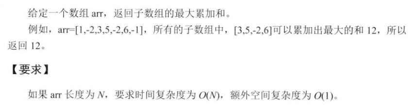
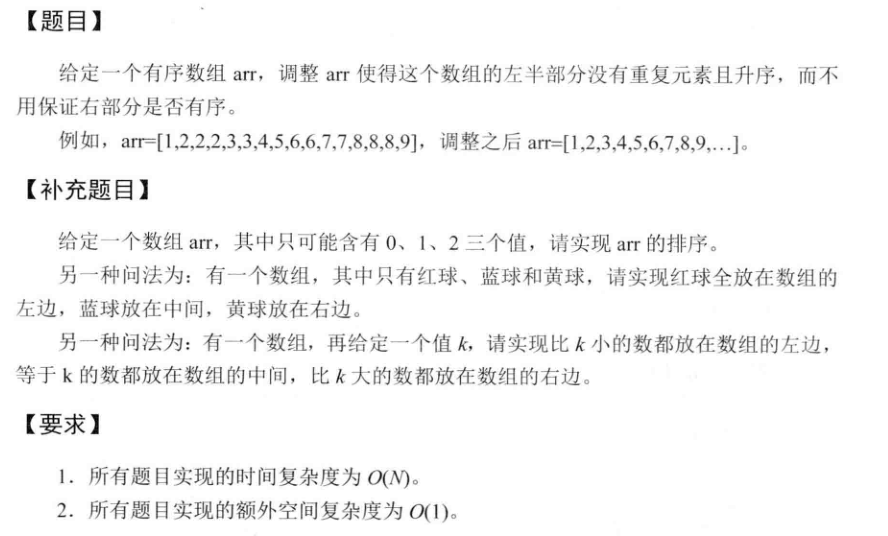
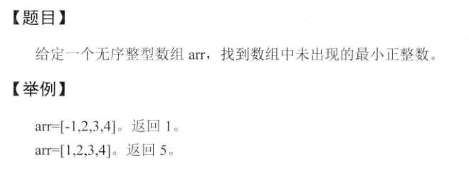
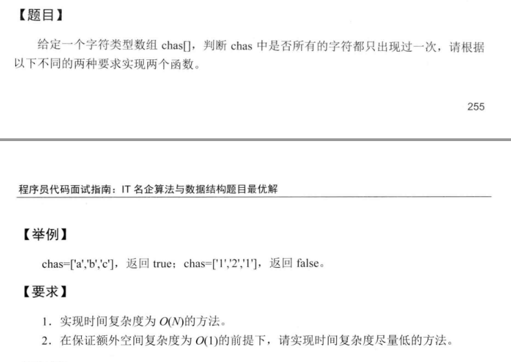

<!DOCTYPE html>
<html lang="zh">
<head><meta name="generator" content="Hexo 3.8.0">
    <meta charset="utf-8">
    
    <title>算法专题_一维数组 | FEI&#39;s Blog</title>
    
    
        <meta name="keywords" content="ACM">
    
    <meta name="viewport" content="width=device-width, initial-scale=1, maximum-scale=1">
    <meta name="description" content="算法题型中经常涉及到一个序列的问题，可能是一个整数数组，也可能是一个字符串。这类问题涵盖的面非常广,可以考察的知识点也非常多，但是总有一些处理的思想和技巧是不变的。这里，我把遇到的这类问题总结在一起，一遍能够从中发现规律，灵活掌握解题的技巧。">
<meta name="keywords" content="ACM">
<meta property="og:type" content="article">
<meta property="og:title" content="算法专题_一维数组">
<meta property="og:url" content="http://ff120.github.io/hexoblog/2017/05/02/技术/数据结构和算法/算法专题_一维数组/index.html">
<meta property="og:site_name" content="FEI&#39;s Blog">
<meta property="og:description" content="算法题型中经常涉及到一个序列的问题，可能是一个整数数组，也可能是一个字符串。这类问题涵盖的面非常广,可以考察的知识点也非常多，但是总有一些处理的思想和技巧是不变的。这里，我把遇到的这类问题总结在一起，一遍能够从中发现规律，灵活掌握解题的技巧。">
<meta property="og:locale" content="zh-Hans">
<meta property="og:image" content="http://ff120.github.io/hexoblog/2017/05/02/技术/数据结构和算法/算法专题_一维数组/2017-03-21_103300.png">
<meta property="og:image" content="http://ff120.github.io/hexoblog/2017/05/02/技术/数据结构和算法/算法专题_一维数组/2017-03-21_134743.png">
<meta property="og:image" content="http://ff120.github.io/hexoblog/2017/05/02/技术/数据结构和算法/算法专题_一维数组/2017-03-21_135757.png">
<meta property="og:image" content="http://ff120.github.io/hexoblog/2017/05/02/技术/数据结构和算法/算法专题_一维数组/2017-03-21_090951.png">
<meta property="og:image" content="http://ff120.github.io/hexoblog/2017/05/02/技术/数据结构和算法/算法专题_一维数组/2017-03-21_091927.png">
<meta property="og:image" content="http://ff120.github.io/hexoblog/2017/05/02/技术/数据结构和算法/算法专题_一维数组/2017-03-21_092428.png">
<meta property="og:image" content="http://ff120.github.io/hexoblog/2017/05/02/技术/数据结构和算法/算法专题_一维数组/2017-03-21_102624.png">
<meta property="og:image" content="http://ff120.github.io/hexoblog/2017/05/02/技术/数据结构和算法/算法专题_一维数组/2017-03-21_104858.png">
<meta property="og:image" content="http://ff120.github.io/hexoblog/2017/05/02/技术/数据结构和算法/算法专题_一维数组/2017-03-21_133320.png">
<meta property="og:image" content="http://ff120.github.io/hexoblog/2017/05/02/技术/数据结构和算法/算法专题_一维数组/2017-03-21_141706.png">
<meta property="og:image" content="http://ff120.github.io/hexoblog/2017/05/02/技术/数据结构和算法/算法专题_一维数组/2017-03-21_150344.png">
<meta property="og:image" content="http://ff120.github.io/hexoblog/2017/05/02/技术/数据结构和算法/算法专题_一维数组/2017-03-21_161557.png">
<meta property="og:image" content="http://ff120.github.io/hexoblog/2017/05/02/技术/数据结构和算法/算法专题_一维数组/2017-03-21_200734.png">
<meta property="og:image" content="http://ff120.github.io/hexoblog/2017/05/02/技术/数据结构和算法/算法专题_一维数组/2017-03-21_213108.png">
<meta property="og:image" content="http://ff120.github.io/hexoblog/2017/05/02/技术/数据结构和算法/算法专题_一维数组/2017-03-21_213346.png">
<meta property="og:image" content="http://ff120.github.io/hexoblog/2017/05/02/技术/数据结构和算法/算法专题_一维数组/2017-03-21_213648.png">
<meta property="og:image" content="http://ff120.github.io/hexoblog/2017/05/02/技术/数据结构和算法/算法专题_一维数组/2017-03-22_102806.png">
<meta property="og:image" content="http://ff120.github.io/hexoblog/2017/05/02/技术/数据结构和算法/算法专题_一维数组/2017-03-22_102836.png">
<meta property="og:image" content="http://ff120.github.io/hexoblog/2017/05/02/技术/数据结构和算法/算法专题_一维数组/2017-03-22_105837.png">
<meta property="og:image" content="http://ff120.github.io/hexoblog/2017/05/02/技术/数据结构和算法/算法专题_一维数组/2017-03-22_111143.png">
<meta property="og:image" content="http://ff120.github.io/hexoblog/2017/05/02/技术/数据结构和算法/算法专题_一维数组/2017-03-22_112158.png">
<meta property="og:image" content="http://ff120.github.io/hexoblog/2017/05/02/技术/数据结构和算法/算法专题_一维数组/2017-03-22_112307.png">
<meta property="og:image" content="http://ff120.github.io/hexoblog/2017/05/02/技术/数据结构和算法/算法专题_一维数组/2017-03-22_134025.png">
<meta property="og:image" content="http://ff120.github.io/hexoblog/2017/05/02/技术/数据结构和算法/算法专题_一维数组/2017-03-22_141453.png">
<meta property="og:updated_time" content="2019-03-28T00:54:56.285Z">
<meta name="twitter:card" content="summary">
<meta name="twitter:title" content="算法专题_一维数组">
<meta name="twitter:description" content="算法题型中经常涉及到一个序列的问题，可能是一个整数数组，也可能是一个字符串。这类问题涵盖的面非常广,可以考察的知识点也非常多，但是总有一些处理的思想和技巧是不变的。这里，我把遇到的这类问题总结在一起，一遍能够从中发现规律，灵活掌握解题的技巧。">
<meta name="twitter:image" content="http://ff120.github.io/hexoblog/2017/05/02/技术/数据结构和算法/算法专题_一维数组/2017-03-21_103300.png">
    

    
        <link rel="alternate" href="/atom.xml" title="FEI&#39;s Blog" type="application/atom+xml">
    

    
        <link rel="icon" href="/hexoblog/favicon.ico">
    

    <link rel="stylesheet" href="/hexoblog/libs/font-awesome/css/font-awesome.min.css">
    <link rel="stylesheet" href="/hexoblog/libs/open-sans/styles.css">
    <link rel="stylesheet" href="/hexoblog/libs/source-code-pro/styles.css">

    <link rel="stylesheet" href="/hexoblog/css/style.css">
    <script src="/hexoblog/libs/jquery/2.1.3/jquery.min.js"></script>
    <script src="/hexoblog/libs/jquery/plugins/cookie/1.4.1/jquery.cookie.js"></script>
    
    
        <link rel="stylesheet" href="/hexoblog/libs/lightgallery/css/lightgallery.min.css">
    
    
        <link rel="stylesheet" href="/hexoblog/libs/justified-gallery/justifiedGallery.min.css">
    
    
    
    


    
        <script async src="//busuanzi.ibruce.info/busuanzi/2.3/busuanzi.pure.mini.js"></script>
    
</head>
</html>
<body>
    <div id="container">
        <header id="header">
    <div id="header-main" class="header-inner">
        <div class="outer">
            <a href="/hexoblog/" id="logo">
                <i class="logo"></i>
                <span class="site-title">FEI&#39;s Blog</span>
            </a>
            <nav id="main-nav">
                
                    <a class="main-nav-link" href="/hexoblog/">首页</a>
                
                    <a class="main-nav-link" href="/hexoblog/archives">归档</a>
                
                    <a class="main-nav-link" href="/hexoblog/categories">分类</a>
                
                    <a class="main-nav-link" href="/hexoblog/tags">标签</a>
                
                    <a class="main-nav-link" href="/hexoblog/about">关于</a>
                
            </nav>
            
            <div id="search-form-wrap">

    <form class="search-form">
        <input type="text" class="ins-search-input search-form-input" placeholder="Rechercher">
        <button type="submit" class="search-form-submit"></button>
    </form>
    <div class="ins-search">
    <div class="ins-search-mask"></div>
    <div class="ins-search-container">
        <div class="ins-input-wrapper">
            <input type="text" class="ins-search-input" placeholder="Type something...">
            <span class="ins-close ins-selectable"><i class="fa fa-times-circle"></i></span>
        </div>
        <div class="ins-section-wrapper">
            <div class="ins-section-container"></div>
        </div>
    </div>
</div>
<script>
(function (window) {
    var INSIGHT_CONFIG = {
        TRANSLATION: {
            POSTS: 'Articles',
            PAGES: 'Pages',
            CATEGORIES: 'Catégories',
            TAGS: 'Tags',
            UNTITLED: '(Untitled)',
        },
        ROOT_URL: '/hexoblog/',
        CONTENT_URL: '/hexoblog/content.json',
    };
    window.INSIGHT_CONFIG = INSIGHT_CONFIG;
})(window);
</script>
<script src="/hexoblog/js/insight.js"></script>

</div>
        </div>
    </div>
    <div id="main-nav-mobile" class="header-sub header-inner">
        <table class="menu outer">
            <tr>
                
                    <td><a class="main-nav-link" href="/hexoblog/">首页</a></td>
                
                    <td><a class="main-nav-link" href="/hexoblog/archives">归档</a></td>
                
                    <td><a class="main-nav-link" href="/hexoblog/categories">分类</a></td>
                
                    <td><a class="main-nav-link" href="/hexoblog/tags">标签</a></td>
                
                    <td><a class="main-nav-link" href="/hexoblog/about">关于</a></td>
                
                <td>
                    
    <div class="search-form">
        <input type="text" class="ins-search-input search-form-input" placeholder="Rechercher">
    </div>

                </td>
            </tr>
        </table>
    </div>
</header>

        <div class="outer">
            
            
                <aside id="sidebar">
   
        
    <div class="widget-wrap" id="categories">
        <h3 class="widget-title">
            <span>Catégories</span>
            &nbsp;
            <a id="allExpand" href="#">
                <i class="fa fa-angle-double-down fa-2x"></i>
            </a>
        </h3>
        
        
        
         <ul class="unstyled" id="tree"> 
                    <li class="directory">
                        <a href="#" data-role="directory">
                            <i class="fa fa-folder"></i>
                            &nbsp;
                            心理学
                        </a>
                         <ul class="unstyled" id="tree"> 
                    <li class="directory">
                        <a href="#" data-role="directory">
                            <i class="fa fa-folder"></i>
                            &nbsp;
                            记忆魔法
                        </a>
                         <ul class="unstyled" id="tree">  <li class="file"><a href="/hexoblog/2019/04/03/心理学/记忆魔法/代码记忆法/">代码记忆法</a></li>  </ul> 
                    </li> 
                     </ul> 
                    </li> 
                    
                    <li class="directory open">
                        <a href="#" data-role="directory">
                            <i class="fa fa-folder-open"></i>
                            &nbsp;
                            技术
                        </a>
                         <ul class="unstyled" id="tree"> 
                    <li class="directory">
                        <a href="#" data-role="directory">
                            <i class="fa fa-folder"></i>
                            &nbsp;
                            Web开发
                        </a>
                         <ul class="unstyled" id="tree">  <li class="file"><a href="/hexoblog/2016/06/11/技术/Web开发/后台开发_How-to-install-Laravel-framework/">How to install Laravel framework</a></li>  <li class="file"><a href="/hexoblog/2016/06/11/技术/Web开发/后台开发_laravel-4-note-01/">laravel 4 note 01</a></li>  <li class="file"><a href="/hexoblog/2016/06/11/技术/Web开发/后台开发_Make-phpStorm-friendly-to-laravel/">Make phpStorm friendly to laravel</a></li>  <li class="file"><a href="/hexoblog/2016/06/11/技术/Web开发/后台开发_sublime-Text-tricks/">sublime Text tricks</a></li>  <li class="file"><a href="/hexoblog/2016/06/11/技术/Web开发/后台开发_think-php-note-01/">think php note 01</a></li>  <li class="file"><a href="/hexoblog/2016/06/11/技术/Web开发/后台开发_think-php-note-02/">think php note 02</a></li>  <li class="file"><a href="/hexoblog/2016/06/11/技术/Web开发/后台开发_think-php-note-03/">think php note 03</a></li>  <li class="file"><a href="/hexoblog/2016/06/11/技术/Web开发/后台开发_PHP编译less文件-lessphp的使用/">PHP编译less文件-lessphp的使用</a></li>  <li class="file"><a href="/hexoblog/2016/06/11/技术/Web开发/后台开发_Lavarel-后台组件frozenode的使用/">Lavarel 后台组件frozenode的使用</a></li>  <li class="file"><a href="/hexoblog/2016/06/11/技术/Web开发/后台开发_Linux常用命令/">Linux常用命令</a></li>  <li class="file"><a href="/hexoblog/2016/06/11/技术/Web开发/后台开发_Linux主机之间同步文件/">Linux主机之间同步文件</a></li>  <li class="file"><a href="/hexoblog/2016/06/11/技术/Web开发/后台开发_PHP基本操作/">PHP基本操作</a></li>  <li class="file"><a href="/hexoblog/2016/06/11/技术/Web开发/后台开发_短信验证码的实现/">短信验证码的实现</a></li>  <li class="file"><a href="/hexoblog/2016/06/11/技术/Web开发/后台开发_配置Apache支持使用HTTPS/">配置Apache支持使用HTTPS</a></li>  <li class="file"><a href="/hexoblog/2016/06/11/技术/Web开发/测试_使用Selenium测试UI/">测试_使用Selenium测试UI</a></li>  <li class="file"><a href="/hexoblog/2016/06/11/技术/Web开发/后台开发_PhpStorm常用快捷键/">PhpStorm常用快捷键</a></li>  <li class="file"><a href="/hexoblog/2016/06/11/技术/Web开发/微信开发_微信发送消息PHP-SDK/">微信发送消息PHP SDK</a></li>  <li class="file"><a href="/hexoblog/2016/06/11/技术/Web开发/微信开发_获取地理位置/">微信获取地理位置 </a></li>  <li class="file"><a href="/hexoblog/2016/06/11/技术/Web开发/微信开发_发送模板消息的代码/">微信发送模板消息的代码</a></li>  <li class="file"><a href="/hexoblog/2016/06/11/技术/Web开发/测试_Selenium-定位元素的几种方式/">测试_Selenium定位元素的几种方式</a></li>  <li class="file"><a href="/hexoblog/2016/06/11/技术/Web开发/测试_Selenium-Action/">测试_Selenium Action</a></li>  <li class="file"><a href="/hexoblog/2016/06/11/技术/Web开发/测试_Apache-JMeter的使用/">测试_Apache JMeter的使用</a></li>  <li class="file"><a href="/hexoblog/2016/06/12/技术/Web开发/后台开发_Apache-配置虚拟主机/">Apache 配置虚拟主机</a></li>  <li class="file"><a href="/hexoblog/2016/06/23/技术/Web开发/后台开发_改进PHP的var-dump-方法使之适应显示从数据库中查出来的数据/">改进PHP的var_dump()方法使之适应显示从数据库中查出来的数据</a></li>  <li class="file"><a href="/hexoblog/2016/06/23/技术/Web开发/后台开发_PHP读写XLS/">PHP读写XLS</a></li>  <li class="file"><a href="/hexoblog/2016/06/30/技术/Web开发/前端_jQuery-EasyUI-学习笔记/">JQuery EasyUI 学习笔记</a></li>  <li class="file"><a href="/hexoblog/2016/06/30/技术/Web开发/前端_bootsharp学习笔记/">Bootsharp学习笔记</a></li>  </ul> 
                    </li> 
                    
                    <li class="directory">
                        <a href="#" data-role="directory">
                            <i class="fa fa-folder"></i>
                            &nbsp;
                            专业术语
                        </a>
                         <ul class="unstyled" id="tree">  <li class="file"><a href="/hexoblog/2017/07/24/技术/专业术语/术语/">英语</a></li>  </ul> 
                    </li> 
                    
                    <li class="directory">
                        <a href="#" data-role="directory">
                            <i class="fa fa-folder"></i>
                            &nbsp;
                            大数据
                        </a>
                         <ul class="unstyled" id="tree">  <li class="file"><a href="/hexoblog/2016/06/23/技术/大数据/大数据_Spark环境下的Kmeans-Python实现/">Spark环境下的Kmeans-Python实现</a></li>  <li class="file"><a href="/hexoblog/2017/10/06/技术/大数据/大数据基础框架/">大数据基础框架</a></li>  </ul> 
                    </li> 
                    
                    <li class="directory">
                        <a href="#" data-role="directory">
                            <i class="fa fa-folder"></i>
                            &nbsp;
                            工具
                        </a>
                         <ul class="unstyled" id="tree"> 
                    <li class="directory">
                        <a href="#" data-role="directory">
                            <i class="fa fa-folder"></i>
                            &nbsp;
                            AutoHotKey
                        </a>
                         <ul class="unstyled" id="tree">  <li class="file"><a href="/hexoblog/2018/12/02/技术/工具/AutoHotKey/AutoHotKey非常有用的脚本/">AutoHotKey非常有用的脚本</a></li>  </ul> 
                    </li> 
                    
                    <li class="directory">
                        <a href="#" data-role="directory">
                            <i class="fa fa-folder"></i>
                            &nbsp;
                            Git
                        </a>
                         <ul class="unstyled" id="tree">  <li class="file"><a href="/hexoblog/2017/05/04/技术/工具/Git/GIT的使用01-基本功能/">GIT的使用01-基本功能</a></li>  <li class="file"><a href="/hexoblog/2018/07/29/技术/工具/Git/Git查询手册/">Git 手册</a></li>  </ul> 
                    </li> 
                    
                    <li class="directory">
                        <a href="#" data-role="directory">
                            <i class="fa fa-folder"></i>
                            &nbsp;
                            Hexo
                        </a>
                         <ul class="unstyled" id="tree">  <li class="file"><a href="/hexoblog/2016/06/12/技术/工具/Hexo/Hexo的使用02-同步/">Hexo的使用02-同步</a></li>  <li class="file"><a href="/hexoblog/2016/06/13/技术/工具/Hexo/Hexo的使用01-搭建/">Hexo的使用01-搭建</a></li>  <li class="file"><a href="/hexoblog/2017/04/12/技术/工具/Hexo/Hexo的使用05-Atom编辑器/">Hexo的使用05-Atom编辑器</a></li>  <li class="file"><a href="/hexoblog/2017/04/12/技术/工具/Hexo/Hexo的使用04-数学公式/">Hexo的使用04-数学公式</a></li>  <li class="file"><a href="/hexoblog/2017/05/05/技术/工具/Hexo/Hexo的使用03-迁移/">Hexo的使用03-迁移</a></li>  <li class="file"><a href="/hexoblog/2017/07/17/技术/工具/Hexo/Hexo的使用06-使用gist存储代码片段/">Hexo中使用gist存储代码片段</a></li>  </ul> 
                    </li> 
                    
                    <li class="directory">
                        <a href="#" data-role="directory">
                            <i class="fa fa-folder"></i>
                            &nbsp;
                            Visio
                        </a>
                         <ul class="unstyled" id="tree">  <li class="file"><a href="/hexoblog/2017/05/05/技术/工具/Visio/VISIO的使用01-基础入门/">VISIO的使用01-基础入门</a></li>  </ul> 
                    </li> 
                    
                    <li class="directory">
                        <a href="#" data-role="directory">
                            <i class="fa fa-folder"></i>
                            &nbsp;
                            图片处理
                        </a>
                         <ul class="unstyled" id="tree">  <li class="file"><a href="/hexoblog/2017/05/05/技术/工具/图片处理/图片处理02-一寸照片/">图片处理02-一寸照片</a></li>  <li class="file"><a href="/hexoblog/2017/05/17/技术/工具/图片处理/图片处理01-合并多张图片/">图片处理01-合并多张图片</a></li>  </ul> 
                    </li> 
                    
                    <li class="directory">
                        <a href="#" data-role="directory">
                            <i class="fa fa-folder"></i>
                            &nbsp;
                            正则表达式
                        </a>
                         <ul class="unstyled" id="tree">  <li class="file"><a href="/hexoblog/2018/07/29/技术/工具/正则表达式/正则表达式/">正则表达式</a></li>  </ul> 
                    </li> 
                    
                    <li class="directory">
                        <a href="#" data-role="directory">
                            <i class="fa fa-folder"></i>
                            &nbsp;
                            编程IDE
                        </a>
                         <ul class="unstyled" id="tree"> 
                    <li class="directory">
                        <a href="#" data-role="directory">
                            <i class="fa fa-folder"></i>
                            &nbsp;
                            Anaconda
                        </a>
                         <ul class="unstyled" id="tree">  <li class="file"><a href="/hexoblog/2017/04/18/技术/工具/编程IDE/Anaconda/Anaconda的使用01-基础/">Anaconda的使用01-基础</a></li>  </ul> 
                    </li> 
                    
                    <li class="directory">
                        <a href="#" data-role="directory">
                            <i class="fa fa-folder"></i>
                            &nbsp;
                            JetBrainsCLion
                        </a>
                         <ul class="unstyled" id="tree">  <li class="file"><a href="/hexoblog/2017/05/04/技术/工具/编程IDE/JetBrainsCLion/JetBrainsCLion的使用01-入门/">JetBrainsCLion的使用01-入门</a></li>  </ul> 
                    </li> 
                    
                    <li class="directory">
                        <a href="#" data-role="directory">
                            <i class="fa fa-folder"></i>
                            &nbsp;
                            VSCode
                        </a>
                         <ul class="unstyled" id="tree">  <li class="file"><a href="/hexoblog/2017/07/24/技术/工具/编程IDE/VSCode/Visual-Studio-Code使用技巧/">Visual Studio Code使用技巧</a></li>  </ul> 
                    </li> 
                     </ul> 
                    </li> 
                    
                    <li class="directory">
                        <a href="#" data-role="directory">
                            <i class="fa fa-folder"></i>
                            &nbsp;
                            网络软件
                        </a>
                         <ul class="unstyled" id="tree">  <li class="file"><a href="/hexoblog/2016/06/12/技术/工具/网络软件/Windows全局代理软件Proxifier/">Windows全局代理软件Proxifier</a></li>  <li class="file"><a href="/hexoblog/2016/06/12/技术/工具/网络软件/Windows手工修改路由表/">Windows手工修改路由表</a></li>  </ul> 
                    </li> 
                     </ul> 
                    </li> 
                    
                    <li class="directory">
                        <a href="#" data-role="directory">
                            <i class="fa fa-folder"></i>
                            &nbsp;
                            数据库
                        </a>
                         <ul class="unstyled" id="tree">  <li class="file"><a href="/hexoblog/2016/06/11/技术/数据库/数据库_Redis入门/">Redis入门</a></li>  <li class="file"><a href="/hexoblog/2016/06/12/技术/数据库/数据库_使用Database-Configuration-Assist-工具创建oracle数据库/">使用Database Configuration Assist 工具创建oracle数据库</a></li>  <li class="file"><a href="/hexoblog/2017/11/02/技术/数据库/SQL/">SQL</a></li>  </ul> 
                    </li> 
                    
                    <li class="directory open">
                        <a href="#" data-role="directory">
                            <i class="fa fa-folder-open"></i>
                            &nbsp;
                            数据结构和算法
                        </a>
                         <ul class="unstyled" id="tree">  <li class="file"><a href="/hexoblog/2017/03/21/技术/数据结构和算法/算法专题_二维数组/">算法专题_二维数组</a></li>  <li class="file"><a href="/hexoblog/2017/03/21/技术/数据结构和算法/算法专题_矩阵和图/">矩阵和用矩阵表示的图的相关问题</a></li>  <li class="file"><a href="/hexoblog/2017/03/21/技术/数据结构和算法/算法专题_位运算/">算法专题_位运算</a></li>  <li class="file"><a href="/hexoblog/2017/03/23/技术/数据结构和算法/算法专题_链表/">算法专题_链表</a></li>  <li class="file"><a href="/hexoblog/2017/04/05/技术/数据结构和算法/算法专题_动态规划/">算法专题_动态规划</a></li>  <li class="file"><a href="/hexoblog/2017/04/06/技术/数据结构和算法/算法专题_图/">算法专题_图问题</a></li>  <li class="file"><a href="/hexoblog/2017/04/08/技术/数据结构和算法/做过的算法题汇总表/">做过的算法题汇总表</a></li>  <li class="file"><a href="/hexoblog/2017/04/09/技术/数据结构和算法/算法专题_二叉树/">算法专题_二叉树</a></li>  <li class="file"><a href="/hexoblog/2017/04/09/技术/数据结构和算法/算法专题_通用树结构/">算法专题_通用树结构</a></li>  <li class="file"><a href="/hexoblog/2017/04/10/技术/数据结构和算法/算法专题_大数据和空间限制/">算法专题_大数据和空间限制</a></li>  <li class="file"><a href="/hexoblog/2017/04/10/技术/数据结构和算法/算法专题_排列组合/">算法专题_排列组合</a></li>  <li class="file"><a href="/hexoblog/2017/04/11/技术/数据结构和算法/本地代码集锦/">本地代码集锦</a></li>  <li class="file"><a href="/hexoblog/2017/04/12/技术/数据结构和算法/算法专题_栈和队列/">算法专题_栈和队列</a></li>  <li class="file"><a href="/hexoblog/2017/04/16/技术/数据结构和算法/算法专题_排序算法/">算法专题_排序算法</a></li>  <li class="file"><a href="/hexoblog/2017/04/17/技术/数据结构和算法/算法专题_算法总结/">算法专题_算法总结</a></li>  <li class="file active"><a href="/hexoblog/2017/05/02/技术/数据结构和算法/算法专题_一维数组/">算法专题_一维数组</a></li>  <li class="file"><a href="/hexoblog/2017/05/05/技术/数据结构和算法/算法专题_图之网络流/">算法专题_图之网络流</a></li>  <li class="file"><a href="/hexoblog/2017/05/06/技术/数据结构和算法/算法专题_图之最短路径/">算法专题_图之最短路径</a></li>  <li class="file"><a href="/hexoblog/2017/05/06/技术/数据结构和算法/算法专题_最小生成树/">算法专题_最小生成树</a></li>  <li class="file"><a href="/hexoblog/2017/05/06/技术/数据结构和算法/算法专题_霍夫曼编码/">算法专题_霍夫曼编码(哈夫曼编码)</a></li>  <li class="file"><a href="/hexoblog/2017/05/07/技术/数据结构和算法/Kickstart-Round-B-2017/">Kickstart Round B 2017</a></li>  <li class="file"><a href="/hexoblog/2017/05/08/技术/数据结构和算法/算法专题_模运算/">算法专题_模运算</a></li>  <li class="file"><a href="/hexoblog/2017/05/09/技术/数据结构和算法/算法专题_素数问题/">算法专题_素数问题</a></li>  <li class="file"><a href="/hexoblog/2017/05/11/技术/数据结构和算法/算法专题_计算几何/">算法专题_计算几何</a></li>  <li class="file"><a href="/hexoblog/2017/05/27/技术/数据结构和算法/计蒜之道2017程序设计大赛/">计蒜之道2017程序设计大赛</a></li>  <li class="file"><a href="/hexoblog/2017/05/28/技术/数据结构和算法/算法专题_字符串匹配/">算法专题_字符串匹配</a></li>  <li class="file"><a href="/hexoblog/2017/07/12/技术/数据结构和算法/四等分数组/">四等分数组</a></li>  <li class="file"><a href="/hexoblog/2017/07/12/技术/数据结构和算法/矩阵的遍历/">矩阵的遍历</a></li>  <li class="file"><a href="/hexoblog/2017/07/20/技术/数据结构和算法/N皇后问题/">N皇后问题</a></li>  <li class="file"><a href="/hexoblog/2017/07/23/技术/数据结构和算法/算法专题_线段树/">算法专题_线段树</a></li>  <li class="file"><a href="/hexoblog/2017/07/23/技术/数据结构和算法/算法专题_树状数组/">算法专题_树状数组</a></li>  <li class="file"><a href="/hexoblog/2017/07/23/技术/数据结构和算法/算法专题_并查集/">算法专题_并查集</a></li>  <li class="file"><a href="/hexoblog/2017/07/26/技术/数据结构和算法/算法专题_链表2/">算法专题_链表2</a></li>  <li class="file"><a href="/hexoblog/2017/08/06/技术/数据结构和算法/算法专题_二叉堆/">算法专题_二叉堆</a></li>  <li class="file"><a href="/hexoblog/2017/08/07/技术/数据结构和算法/算法专题_快速排序/">算法专题_快速排序</a></li>  <li class="file"><a href="/hexoblog/2017/08/07/技术/数据结构和算法/算法专题_归并排序/">算法专题_归并排序</a></li>  <li class="file"><a href="/hexoblog/2017/08/13/技术/数据结构和算法/算法专题-hihocoder/">算法专题_hihocoder</a></li>  <li class="file"><a href="/hexoblog/2017/08/17/技术/数据结构和算法/算法专题-贪心法/">算法专题_贪心法</a></li>  <li class="file"><a href="/hexoblog/2017/08/18/技术/数据结构和算法/阿里在线测评-兔子繁殖问题/">阿里笔试</a></li>  <li class="file"><a href="/hexoblog/2017/08/22/技术/数据结构和算法/今日头条-在线编程题/">今日头条_在线编程题</a></li>  <li class="file"><a href="/hexoblog/2017/08/23/技术/数据结构和算法/算法专题-字典树-Trie树/">算法专题_字典树(Trie树)</a></li>  <li class="file"><a href="/hexoblog/2017/09/23/技术/数据结构和算法/算法专题_二叉树2/">算法专题_二叉树2</a></li>  <li class="file"><a href="/hexoblog/2017/09/27/技术/数据结构和算法/手写代码-其他/">手写代码-其他</a></li>  <li class="file"><a href="/hexoblog/2017/10/03/技术/数据结构和算法/算法专题-常见题目/">算法专题_常见题目</a></li>  </ul> 
                    </li> 
                    
                    <li class="directory">
                        <a href="#" data-role="directory">
                            <i class="fa fa-folder"></i>
                            &nbsp;
                            机器学习
                        </a>
                         <ul class="unstyled" id="tree"> 
                    <li class="directory">
                        <a href="#" data-role="directory">
                            <i class="fa fa-folder"></i>
                            &nbsp;
                            深度学习
                        </a>
                         <ul class="unstyled" id="tree">  <li class="file"><a href="/hexoblog/2017/03/22/技术/机器学习/深度学习/深度学习_Theano使用技巧/">深度学习_Theano使用技巧</a></li>  <li class="file"><a href="/hexoblog/2017/04/18/技术/机器学习/深度学习/深度学习_基本概念/">深度学习_基本概念</a></li>  <li class="file"><a href="/hexoblog/2017/04/18/技术/机器学习/深度学习/深度学习_利用神经网络识别手写数字/">深度学习__利用神经网络识别手写数字</a></li>  <li class="file"><a href="/hexoblog/2017/04/19/技术/机器学习/深度学习/深度学习_反向传播算法及简单实例/">深度学习_反向传播算法及简单实例</a></li>  <li class="file"><a href="/hexoblog/2017/04/19/技术/机器学习/深度学习/深度学习_Keras使用技巧/">深度学习_Keras使用技巧</a></li>  <li class="file"><a href="/hexoblog/2017/04/20/技术/机器学习/深度学习/深度学习_使用keras实现autoencoder/">深度学习_使用keras实现autoencoder</a></li>  <li class="file"><a href="/hexoblog/2017/04/20/技术/机器学习/深度学习/深度学习_卷积神经网络/">深度学习_卷积神经网络</a></li>  <li class="file"><a href="/hexoblog/2017/04/27/技术/机器学习/深度学习/深度学习_使用autoencoder自动提取特征/">深度学习_使用autoencoder自动提取特征</a></li>  <li class="file"><a href="/hexoblog/2017/05/10/技术/机器学习/深度学习/深度学习_递归神经网络(RNN)/">深度学习_递归神经网络(RNN)</a></li>  <li class="file"><a href="/hexoblog/2017/05/10/技术/机器学习/深度学习/深度学习_限制波尔茨曼向量机(RBM)/">深度学习_限制波尔茨曼向量机(RBM)</a></li>  <li class="file"><a href="/hexoblog/2017/05/12/技术/机器学习/深度学习/深度学习_TensorFlow使用技巧/">深度学习_TensorFlow使用技巧</a></li>  </ul> 
                    </li> 
                     <li class="file"><a href="/hexoblog/2016/06/16/技术/机器学习/机器学习_Scikit-Learn-ManyClassifier/">同时使用多个分类器(Scikit-Learn)</a></li>  <li class="file"><a href="/hexoblog/2016/06/16/技术/机器学习/机器学习_范数/">机器学习_范数</a></li>  <li class="file"><a href="/hexoblog/2016/06/20/技术/机器学习/机器学习_学习路线/">机器学习_学习路线</a></li>  <li class="file"><a href="/hexoblog/2016/06/20/技术/机器学习/机器学习_手写数字识别/">机器学习_手写数字识别</a></li>  <li class="file"><a href="/hexoblog/2016/07/11/技术/机器学习/机器学习_Matplolib使用技巧/">机器学习_Matplolib使用技巧</a></li>  <li class="file"><a href="/hexoblog/2017/03/22/技术/机器学习/机器学习_人脸识别/">机器学习_人脸识别</a></li>  <li class="file"><a href="/hexoblog/2017/05/04/技术/机器学习/机器学习_Matlab使用技巧/">机器学习_Matlab使用技巧</a></li>  <li class="file"><a href="/hexoblog/2017/05/11/技术/机器学习/机器学习_时间序列预测分析算法/">机器学习_时间序列预测分析算法</a></li>  <li class="file"><a href="/hexoblog/2017/05/14/技术/机器学习/机器学习_Scikit-Learn使用技巧/">深度学习_Scikit-Learn机器学习算法的使用</a></li>  <li class="file"><a href="/hexoblog/2017/05/15/技术/机器学习/机器学习_时间序列预测の广告效果预测/">机器学习_时间序列预测の广告效果预测</a></li>  <li class="file"><a href="/hexoblog/2017/05/15/技术/机器学习/机器学习_算法汇总/">机器学习_算法汇总</a></li>  <li class="file"><a href="/hexoblog/2017/05/17/技术/机器学习/机器学习_Pandas使用技巧/">深度学习_Pandas使用技巧</a></li>  <li class="file"><a href="/hexoblog/2017/05/19/技术/机器学习/机器学习_感知机/">机器学习_感知机</a></li>  <li class="file"><a href="/hexoblog/2017/05/19/技术/机器学习/机器学习_逻辑回归/">机器学习_逻辑回归</a></li>  <li class="file"><a href="/hexoblog/2017/05/22/技术/机器学习/机器学习_损失函数/">机器学习_损失函数</a></li>  <li class="file"><a href="/hexoblog/2017/06/03/技术/机器学习/机器学习_分类器性能的度量/">机器学习_分类器性能的度量</a></li>  <li class="file"><a href="/hexoblog/2017/06/15/技术/机器学习/机器学习_Scipy使用技巧/">机器学习_Scipy使用技巧</a></li>  <li class="file"><a href="/hexoblog/2017/06/15/技术/机器学习/机器学习_Python使用技巧/">深度学习_Python使用技巧</a></li>  <li class="file"><a href="/hexoblog/2017/07/23/技术/机器学习/机器学习-Numpy使用技巧/">机器学习_Numpy使用技巧</a></li>  <li class="file"><a href="/hexoblog/2017/10/15/技术/机器学习/KNN-with-C/">KNN with C++</a></li>  <li class="file"><a href="/hexoblog/2017/11/04/技术/机器学习/机器学习-绪论-基本概念/">机器学习-绪论-基本概念</a></li>  <li class="file"><a href="/hexoblog/2017/11/04/技术/机器学习/机器学习-第一章-逻辑回归/">机器学习-第一章-逻辑回归</a></li>  <li class="file"><a href="/hexoblog/2017/11/04/技术/机器学习/机器学习-第二章-决策树/">机器学习-第二章-决策树</a></li>  <li class="file"><a href="/hexoblog/2017/11/04/技术/机器学习/机器学习-第三章-朴素贝叶斯/">机器学习-第三章-朴素贝叶斯</a></li>  <li class="file"><a href="/hexoblog/2017/11/04/技术/机器学习/机器学习-第四章-支持向量机/">机器学习-第四章-支持向量机</a></li>  <li class="file"><a href="/hexoblog/2017/11/04/技术/机器学习/机器学习-第五章-最近邻/">机器学习-第五章-最近邻</a></li>  <li class="file"><a href="/hexoblog/2017/11/04/技术/机器学习/机器学习-第六章-kmeans/">机器学习-第六章-kmeans</a></li>  <li class="file"><a href="/hexoblog/2017/11/04/技术/机器学习/机器学习-第七章-感知机/">机器学习-第七章-感知机</a></li>  </ul> 
                    </li> 
                    
                    <li class="directory">
                        <a href="#" data-role="directory">
                            <i class="fa fa-folder"></i>
                            &nbsp;
                            编程语言
                        </a>
                         <ul class="unstyled" id="tree"> 
                    <li class="directory">
                        <a href="#" data-role="directory">
                            <i class="fa fa-folder"></i>
                            &nbsp;
                            C++
                        </a>
                         <ul class="unstyled" id="tree">  <li class="file"><a href="/hexoblog/2017/04/07/技术/编程语言/C++/C++语言技巧/">C++语言技巧</a></li>  </ul> 
                    </li> 
                     </ul> 
                    </li> 
                    
                    <li class="directory">
                        <a href="#" data-role="directory">
                            <i class="fa fa-folder"></i>
                            &nbsp;
                            计算机基础
                        </a>
                         <ul class="unstyled" id="tree"> 
                    <li class="directory">
                        <a href="#" data-role="directory">
                            <i class="fa fa-folder"></i>
                            &nbsp;
                            计算机网络
                        </a>
                         <ul class="unstyled" id="tree">  <li class="file"><a href="/hexoblog/2016/06/12/技术/计算机基础/计算机网络/网络_校园网多终端上网方案/">校园网多终端上网方案</a></li>  <li class="file"><a href="/hexoblog/2017/07/12/技术/计算机基础/计算机网络/计算机网络/">计算机网络</a></li>  </ul> 
                    </li> 
                     </ul> 
                    </li> 
                    
                    <li class="directory">
                        <a href="#" data-role="directory">
                            <i class="fa fa-folder"></i>
                            &nbsp;
                            认知神经科学
                        </a>
                         <ul class="unstyled" id="tree">  <li class="file"><a href="/hexoblog/2016/06/12/技术/认知神经科学/文献检索方法/">文献检索方法</a></li>  <li class="file"><a href="/hexoblog/2016/06/12/技术/认知神经科学/参考文献书写格式/">参考文献书写格式</a></li>  <li class="file"><a href="/hexoblog/2016/06/12/技术/认知神经科学/使用Python处理fMRI数据/">使用Python处理fMRI数据</a></li>  <li class="file"><a href="/hexoblog/2016/06/22/技术/认知神经科学/中英文对照/">中英文对照</a></li>  <li class="file"><a href="/hexoblog/2017/01/03/技术/认知神经科学/circos入门教程/">circos入门教程</a></li>  <li class="file"><a href="/hexoblog/2017/03/08/技术/认知神经科学/基于视频的车牌识别和流量统计/">基于视频的车牌识别和流量统计</a></li>  <li class="file"><a href="/hexoblog/2017/03/08/技术/认知神经科学/基于贝叶斯网络和隐性知识的AU识别研究/">基于贝叶斯网络和隐性知识的AU识别研究</a></li>  <li class="file"><a href="/hexoblog/2017/03/09/技术/认知神经科学/基于连接的脑信息解码研究/">基于连接信息的脑信息解码研究</a></li>  <li class="file"><a href="/hexoblog/2017/03/09/技术/认知神经科学/认知神经科学系列目录/">认知神经科学系列目录</a></li>  <li class="file"><a href="/hexoblog/2017/03/20/技术/认知神经科学/多被试多RUN批量预处理(SPM)/">多被试多RUN批量预处理(SPM)</a></li>  <li class="file"><a href="/hexoblog/2017/03/20/技术/认知神经科学/SPM预处理中的常用操作/">SPM预处理中的常用操作</a></li>  <li class="file"><a href="/hexoblog/2017/03/20/技术/认知神经科学/动态因果模型(DCM)的批量定义和估计/">动态因果模型(DCM)的批量定义和估计</a></li>  <li class="file"><a href="/hexoblog/2017/04/13/技术/认知神经科学/使用SPM做Second-Level分析/">使用SPM做Second_Level分析</a></li>  <li class="file"><a href="/hexoblog/2017/04/13/技术/认知神经科学/DCM模型的定义和估计/">DCM模型的定义和估计</a></li>  <li class="file"><a href="/hexoblog/2017/04/14/技术/认知神经科学/XJVIEW的使用技巧/">XJVIEW的使用技巧</a></li>  <li class="file"><a href="/hexoblog/2017/04/14/技术/认知神经科学/SPM中函数的修改和使用/">SPM中函数的修改和使用</a></li>  <li class="file"><a href="/hexoblog/2017/05/02/技术/认知神经科学/fMRI中常用的工具包/">fMRI中常用的工具包</a></li>  <li class="file"><a href="/hexoblog/2017/05/11/技术/认知神经科学/使用3D卷积神经神经网络提取脑成像数据的特征/">使用3D卷积神经神经网络提取脑成像数据的特征</a></li>  <li class="file"><a href="/hexoblog/2017/05/14/技术/认知神经科学/fMRI相关的资源汇总/">fMRI相关的资源汇总</a></li>  <li class="file"><a href="/hexoblog/2017/05/30/技术/认知神经科学/fMRI相关问题汇总/">fMRI相关问题汇总</a></li>  </ul> 
                    </li> 
                     </ul> 
                    </li> 
                    
                    <li class="directory">
                        <a href="#" data-role="directory">
                            <i class="fa fa-folder"></i>
                            &nbsp;
                            收藏夹
                        </a>
                         <ul class="unstyled" id="tree">  <li class="file"><a href="/hexoblog/2017/03/22/收藏夹/博客集锦/">博客收藏</a></li>  </ul> 
                    </li> 
                     </ul> 
    </div>
    <script>
        $(document).ready(function() {
            var iconFolderOpenClass  = 'fa-folder-open';
            var iconFolderCloseClass = 'fa-folder';
            var iconAllExpandClass = 'fa-angle-double-down';
            var iconAllPackClass = 'fa-angle-double-up';
            // Handle directory-tree expansion:
            // 左键单独展开目录
            $(document).on('click', '#categories a[data-role="directory"]', function (event) {
                event.preventDefault();

                var icon = $(this).children('.fa');
                var expanded = icon.hasClass(iconFolderOpenClass);
                var subtree = $(this).siblings('ul');
                icon.removeClass(iconFolderOpenClass).removeClass(iconFolderCloseClass);
                if (expanded) {
                    if (typeof subtree != 'undefined') {
                        subtree.slideUp({ duration: 100 });
                    }
                    icon.addClass(iconFolderCloseClass);
                } else {
                    if (typeof subtree != 'undefined') {
                        subtree.slideDown({ duration: 100 });
                    }
                    icon.addClass(iconFolderOpenClass);
                }
            });
            // 右键展开下属所有目录
            $('#categories a[data-role="directory"]').bind("contextmenu", function(event){
                event.preventDefault();
                
                var icon = $(this).children('.fa');
                var expanded = icon.hasClass(iconFolderOpenClass);
                var listNode = $(this).siblings('ul');
                var subtrees = $.merge(listNode.find('li ul'), listNode);
                var icons = $.merge(listNode.find('.fa'), icon);
                icons.removeClass(iconFolderOpenClass).removeClass(iconFolderCloseClass);
                if(expanded) {
                    subtrees.slideUp({ duration: 100 });
                    icons.addClass(iconFolderCloseClass);
                } else {
                    subtrees.slideDown({ duration: 100 });
                    icons.addClass(iconFolderOpenClass);
                }
            })
            // 展开关闭所有目录按钮
            $(document).on('click', '#allExpand', function (event) {
                event.preventDefault();
                
                var icon = $(this).children('.fa');
                var expanded = icon.hasClass(iconAllExpandClass);
                icon.removeClass(iconAllExpandClass).removeClass(iconAllPackClass);
                if(expanded) {
                    $('#sidebar .fa.fa-folder').removeClass('fa-folder').addClass('fa-folder-open')
                    $('#categories li ul').slideDown({ duration: 100 });
                    icon.addClass(iconAllPackClass);
                } else {
                    $('#sidebar .fa.fa-folder-open').removeClass('fa-folder-open').addClass('fa-folder')
                    $('#categories li ul').slideUp({ duration: 100 });
                    icon.addClass(iconAllExpandClass);
                }
            });  
        });
    </script>

    
    <div id="toTop" class="fa fa-angle-up"></div>
</aside>
            
            <section id="main"><article id="post-技术/数据结构和算法/算法专题_一维数组" class="article article-type-post" itemscope="" itemprop="blogPost">
    <div class="article-inner">
        
        
            <header class="article-header">
                
                    <div class="article-meta">
                        
    <div class="article-category">
    	<i class="fa fa-folder"></i>
        <a class="article-category-link" href="/hexoblog/categories/技术/">技术</a><i class="fa fa-angle-right"></i><a class="article-category-link" href="/hexoblog/categories/技术/数据结构和算法/">数据结构和算法</a>
    </div>

                        
    <div class="article-tag">
        <i class="fa fa-tag"></i>
        <a class="tag-link" href="/hexoblog/tags/ACM/">ACM</a>
    </div>

                        
    <div class="article-date">
        <i class="fa fa-calendar"></i>
        <a href="/hexoblog/2017/05/02/技术/数据结构和算法/算法专题_一维数组/">
            <time datetime="2017-05-02T02:08:54.000Z" itemprop="datePublished">2017-05-02</time>
        </a>
    </div>


                        
                            <i class="fa fa-bar-chart"></i>
                            <span id="busuanzi_container_site_pv"><span id="busuanzi_value_page_pv"></span></span>    
                        
                        
                            <div class="article-meta-button">
                                <a href="https://github.com/FF120/hexoblog/raw/master/source/_posts/技术/数据结构和算法/算法专题_一维数组.md"> Source </a>
                            </div>
                            <div class="article-meta-button">
                                <a href="https://github.com/FF120/hexoblog/edit/master/source/_posts/技术/数据结构和算法/算法专题_一维数组.md"> Edit </a>
                            </div>
                            <div class="article-meta-button">
                                <a href="https://github.com/FF120/hexoblog/commits/master/source/_posts/技术/数据结构和算法/算法专题_一维数组.md"> History </a>
                            </div>
                        
                    </div>
                
                
    
        <h1 class="article-title" itemprop="name">
            算法专题_一维数组
        </h1>
    

            </header>
        
        
        <div class="article-entry" itemprop="articleBody">
        
        
            
                <div id="toc" class="toc-article">
                <strong class="toc-title">Catalogue</strong>
                    <ol class="toc"><li class="toc-item toc-level-2"><a class="toc-link" href="#跳跃游戏"><span class="toc-number">1.</span> <span class="toc-text">跳跃游戏</span></a></li><li class="toc-item toc-level-2"><a class="toc-link" href="#子数组的最大累加和"><span class="toc-number">2.</span> <span class="toc-text">子数组的最大累加和</span></a></li><li class="toc-item toc-level-2"><a class="toc-link" href="#子数组的最大累加和动态规划"><span class="toc-number">3.</span> <span class="toc-text">子数组的最大累加和(动态规划)</span></a></li><li class="toc-item toc-level-2"><a class="toc-link" href="#滑动窗口子数组最大值"><span class="toc-number">4.</span> <span class="toc-text">滑动窗口子数组最大值</span></a></li><li class="toc-item toc-level-2"><a class="toc-link" href="#快速求数组连续子数组的最大值和最小值的差"><span class="toc-number">5.</span> <span class="toc-text">快速求数组连续子数组的最大值和最小值的差</span></a></li><li class="toc-item toc-level-2"><a class="toc-link" href="#最长递增子序列"><span class="toc-number">6.</span> <span class="toc-text">最长递增子序列</span></a></li><li class="toc-item toc-level-2"><a class="toc-link" href="#排成一条线的纸牌博弈问题"><span class="toc-number">7.</span> <span class="toc-text">排成一条线的纸牌博弈问题</span></a></li><li class="toc-item toc-level-2"><a class="toc-link" href="#数组中的最长连续序列"><span class="toc-number">8.</span> <span class="toc-text">数组中的最长连续序列</span></a></li><li class="toc-item toc-level-2"><a class="toc-link" href="#计算数组的小和"><span class="toc-number">9.</span> <span class="toc-text">计算数组的小和</span></a></li><li class="toc-item toc-level-2"><a class="toc-link" href="#在数组中找到一个局部最小的位置二分法的应用"><span class="toc-number">10.</span> <span class="toc-text">在数组中找到一个局部最小的位置(二分法的应用)</span></a></li><li class="toc-item toc-level-2"><a class="toc-link" href="#数组中子数组的最大累乘积"><span class="toc-number">11.</span> <span class="toc-text">数组中子数组的最大累乘积</span></a></li><li class="toc-item toc-level-2"><a class="toc-link" href="#不包含本位置位的累乘数组"><span class="toc-number">12.</span> <span class="toc-text">不包含本位置位的累乘数组</span></a></li><li class="toc-item toc-level-2"><a class="toc-link" href="#数组的partition调整"><span class="toc-number">13.</span> <span class="toc-text">数组的partition调整</span></a></li><li class="toc-item toc-level-2"><a class="toc-link" href="#数组中未出现的最小正整数"><span class="toc-number">14.</span> <span class="toc-text">数组中未出现的最小正整数</span></a></li><li class="toc-item toc-level-2"><a class="toc-link" href="#数组排序之后相邻数字的最大差值"><span class="toc-number">15.</span> <span class="toc-text">数组排序之后相邻数字的最大差值</span></a></li><li class="toc-item toc-level-2"><a class="toc-link" href="#找到出现50以上的数字"><span class="toc-number">16.</span> <span class="toc-text">找到出现50%以上的数字</span></a></li><li class="toc-item toc-level-2"><a class="toc-link" href="#找到出现次数在nk次以上的数字"><span class="toc-number">17.</span> <span class="toc-text">找到出现次数在N/K次以上的数字</span></a></li><li class="toc-item toc-level-2"><a class="toc-link" href="#求直方图的最大连续面积"><span class="toc-number">18.</span> <span class="toc-text">求直方图的最大连续面积</span></a></li><li class="toc-item toc-level-2"><a class="toc-link" href="#换钱的最少货币数量"><span class="toc-number">19.</span> <span class="toc-text">换钱的最少货币数量</span></a></li><li class="toc-item toc-level-2"><a class="toc-link" href="#换钱的方法数"><span class="toc-number">20.</span> <span class="toc-text">换钱的方法数</span></a></li><li class="toc-item toc-level-2"><a class="toc-link" href="#判断字符数组中是否所有的字符都只出现一次"><span class="toc-number">21.</span> <span class="toc-text">判断字符数组中是否所有的字符都只出现一次</span></a></li><li class="toc-item toc-level-2"><a class="toc-link" href="#数组中两个字符串的最小距离"><span class="toc-number">22.</span> <span class="toc-text">数组中两个字符串的最小距离</span></a></li><li class="toc-item toc-level-2"><a class="toc-link" href="#找到最长回文子串"><span class="toc-number">23.</span> <span class="toc-text">找到最长回文子串</span></a></li><li class="toc-item toc-level-2"><a class="toc-link" href="#统计数组中每个数字前面比自己小的数字有多少个"><span class="toc-number">24.</span> <span class="toc-text">统计数组中每个数字前面比自己小的数字有多少个</span></a></li><li class="toc-item toc-level-2"><a class="toc-link" href="#统计数组中每个数字后面比自己小的数字有多少个"><span class="toc-number">25.</span> <span class="toc-text">统计数组中每个数字后面比自己小的数字有多少个</span></a></li><li class="toc-item toc-level-2"><a class="toc-link" href="#一个有重复数字的整数数组求包含所有的数字的最短的连续序列的长度"><span class="toc-number">26.</span> <span class="toc-text">一个有重复数字的整数数组，求包含所有的数字的最短的连续序列的长度</span></a></li><li class="toc-item toc-level-2"><a class="toc-link" href="#连续整数和"><span class="toc-number">27.</span> <span class="toc-text">连续整数和</span></a></li><li class="toc-item toc-level-2"><a class="toc-link" href="#集合的子集问题"><span class="toc-number">28.</span> <span class="toc-text">集合的子集问题</span></a></li></ol>
                </div>
            
        
        
            <p>算法题型中经常涉及到一个序列的问题，可能是一个整数数组，也可能是一个字符串。这类问题涵盖的面非常广,可以考察的知识点也非常多，但是总有一些处理的思想和技巧是不变的。这里，我把遇到的这类问题总结在一起，一遍能够从中发现规律，灵活掌握解题的技巧。</p>
<a id="more"></a>
<h2 id="跳跃游戏">跳跃游戏</h2>
<div class="figure">

<p class="caption">2017-03-21_103300.png</p>
</div>
<p><strong>思路</strong> 如果采用遍历的方法，复杂度与数组的长度和数组元素的大小相关，数组中元素的大小会在很大程度上影响时间复杂度，例如数组元素都是1，代表每次都只能向后一步，那么结果就是n,如果数组的第一个元素就是n,那么一步就可以到达数组的结尾。所以这显然不是一个好的办法.考虑数组<code>array</code>的一个区间<code>[0,i]</code>,截止到<code>i</code>位置的时候，能够到达的最远的位置是<code>next</code>.考虑如何求解<code>next</code>的值.初始的时候,<code>next=0</code>,<code>i=0</code>的时候，能够到达的最远位置是<code>i+array[i]</code>,这个时候<code>next=i+array[i]</code>.当<code>i=1</code>的时候，能够到达的最远位置可能是<code>i+array[i]</code>,也可能是<code>next</code>,所以我们要取这两个元素的最大值作为<code>next</code>的值.这样只需要遍历一遍数组,我们就得到了每个元素可以达到的最远的位置.最后需要得到的结果是跳跃的次数,那么什么时候需要跳跃呢?设置一个变量<code>current</code>表示当前所在的位置,当<code>current</code>小于<code>i</code>的时候,说明我们已经遍历到了大于<code>current</code>的位置，这个时候就需要跳跃,<code>jump++</code>,然后更新<code>current = next</code>指向最新的位置. 具体实现如下。</p>
<figure class="highlight c"><table><tr><td class="gutter"><pre><span class="line">1</span><br><span class="line">2</span><br><span class="line">3</span><br><span class="line">4</span><br><span class="line">5</span><br><span class="line">6</span><br><span class="line">7</span><br><span class="line">8</span><br><span class="line">9</span><br><span class="line">10</span><br><span class="line">11</span><br><span class="line">12</span><br><span class="line">13</span><br><span class="line">14</span><br><span class="line">15</span><br><span class="line">16</span><br><span class="line">17</span><br><span class="line">18</span><br><span class="line">19</span><br><span class="line">20</span><br><span class="line">21</span><br><span class="line">22</span><br><span class="line">23</span><br><span class="line">24</span><br><span class="line">25</span><br><span class="line">26</span><br><span class="line">27</span><br><span class="line">28</span><br><span class="line">29</span><br><span class="line">30</span><br><span class="line">31</span><br><span class="line">32</span><br><span class="line">33</span><br></pre></td><td class="code"><pre><span class="line"><span class="meta">#<span class="meta-keyword">include</span> <span class="meta-string">&lt;iostream&gt;</span></span></span><br><span class="line"><span class="meta">#<span class="meta-keyword">include</span> <span class="meta-string">&lt;vector&gt;</span></span></span><br><span class="line"><span class="keyword">using</span> <span class="keyword">namespace</span> <span class="built_in">std</span>;</span><br><span class="line"><span class="comment">/**</span></span><br><span class="line"><span class="comment"> * 跳跃游戏</span></span><br><span class="line"><span class="comment"> * @param v</span></span><br><span class="line"><span class="comment"> * @return</span></span><br><span class="line"><span class="comment"> */</span></span><br><span class="line"><span class="function"><span class="keyword">int</span> <span class="title">getMin</span><span class="params">(<span class="built_in">vector</span>&lt;<span class="keyword">int</span>&gt; v)</span></span>&#123;</span><br><span class="line">    <span class="keyword">if</span>(v.empty()) <span class="keyword">return</span> <span class="number">0</span>;</span><br><span class="line">    <span class="keyword">int</span> jump = <span class="number">0</span>;</span><br><span class="line">    <span class="keyword">int</span> current = <span class="number">0</span>;</span><br><span class="line">    <span class="keyword">int</span> next = <span class="number">0</span>;</span><br><span class="line">    <span class="keyword">for</span>(<span class="keyword">int</span> i=<span class="number">0</span>;i&lt;v.size();++i)&#123;</span><br><span class="line">        <span class="keyword">if</span>(current &lt; i)&#123;</span><br><span class="line">            ++jump;</span><br><span class="line">            current = next;</span><br><span class="line">            <span class="comment">// 判断数组中有小于等于0的时候的情况</span></span><br><span class="line">            <span class="keyword">if</span>(v[current] &lt;= <span class="number">0</span> &amp;&amp; current &lt; v.size()<span class="number">-1</span> &amp;&amp; current &lt; i)&#123;</span><br><span class="line">                <span class="comment">// 遇到0，跳不过去，返回-1</span></span><br><span class="line">                <span class="keyword">return</span> <span class="number">-1</span>;</span><br><span class="line">            &#125;</span><br><span class="line">        &#125;</span><br><span class="line">        next = max(next,i+v[i]);</span><br><span class="line">    &#125;</span><br><span class="line">    <span class="keyword">return</span> jump;</span><br><span class="line">&#125;</span><br><span class="line"><span class="function"><span class="keyword">int</span> <span class="title">main</span><span class="params">()</span> </span>&#123;</span><br><span class="line">    <span class="built_in">vector</span>&lt;<span class="keyword">int</span>&gt; v = &#123;<span class="number">3</span>,<span class="number">2</span>,<span class="number">3</span>,<span class="number">1</span>,<span class="number">1</span>,<span class="number">4</span>&#125;;</span><br><span class="line">    <span class="keyword">int</span> re = getMin(v);</span><br><span class="line">    <span class="built_in">cout</span>&lt;&lt;re&lt;&lt;<span class="built_in">endl</span>;</span><br><span class="line">    <span class="keyword">return</span> <span class="number">0</span>;</span><br><span class="line">&#125;</span><br></pre></td></tr></table></figure>
<h2 id="子数组的最大累加和">子数组的最大累加和</h2>
<p> </p>
<figure class="highlight c"><table><tr><td class="gutter"><pre><span class="line">1</span><br><span class="line">2</span><br><span class="line">3</span><br><span class="line">4</span><br><span class="line">5</span><br><span class="line">6</span><br><span class="line">7</span><br><span class="line">8</span><br><span class="line">9</span><br><span class="line">10</span><br><span class="line">11</span><br><span class="line">12</span><br><span class="line">13</span><br><span class="line">14</span><br><span class="line">15</span><br><span class="line">16</span><br><span class="line">17</span><br><span class="line">18</span><br><span class="line">19</span><br><span class="line">20</span><br><span class="line">21</span><br><span class="line">22</span><br><span class="line">23</span><br><span class="line">24</span><br><span class="line">25</span><br></pre></td><td class="code"><pre><span class="line"><span class="meta">#<span class="meta-keyword">include</span> <span class="meta-string">&lt;iostream&gt;</span></span></span><br><span class="line"><span class="meta">#<span class="meta-keyword">include</span> <span class="meta-string">&lt;vector&gt;</span></span></span><br><span class="line"><span class="keyword">using</span> <span class="keyword">namespace</span> <span class="built_in">std</span>;</span><br><span class="line"><span class="comment">/**</span></span><br><span class="line"><span class="comment"> * 子数组的最大累加和问题</span></span><br><span class="line"><span class="comment"> * @return</span></span><br><span class="line"><span class="comment"> */</span></span><br><span class="line"><span class="function"><span class="keyword">int</span> <span class="title">getMaxSum</span><span class="params">(<span class="built_in">vector</span>&lt;<span class="keyword">int</span>&gt; v)</span></span>&#123;</span><br><span class="line">    <span class="keyword">if</span>(v.empty())&#123;<span class="keyword">return</span> <span class="number">0</span>;&#125;</span><br><span class="line">    <span class="keyword">int</span> sum = <span class="number">0</span>; <span class="comment">//遍历到v[i]的累加和</span></span><br><span class="line">    <span class="keyword">int</span> maxValue = <span class="number">-10000</span>; <span class="comment">// 遍历到v[i]时最大的累加和</span></span><br><span class="line">    <span class="keyword">for</span>(<span class="keyword">int</span> i=<span class="number">0</span>;i&lt;v.size();i++)&#123;</span><br><span class="line">        sum += v[i];</span><br><span class="line">        <span class="keyword">if</span>(sum &lt; <span class="number">0</span>)&#123;</span><br><span class="line">            sum = <span class="number">0</span>;</span><br><span class="line">        &#125;</span><br><span class="line">        maxValue = max(maxValue,sum);</span><br><span class="line">    &#125;</span><br><span class="line">    <span class="keyword">return</span> maxValue;</span><br><span class="line">&#125;</span><br><span class="line"><span class="function"><span class="keyword">int</span> <span class="title">main</span><span class="params">()</span> </span>&#123;</span><br><span class="line">    <span class="built_in">vector</span>&lt;<span class="keyword">int</span>&gt; v = &#123;<span class="number">1</span>,<span class="number">-2</span>,<span class="number">3</span>,<span class="number">5</span>,<span class="number">-2</span>,<span class="number">6</span>,<span class="number">-1</span>&#125;;</span><br><span class="line">    <span class="built_in">cout</span>&lt;&lt;getMaxSum(v)&lt;&lt;<span class="built_in">endl</span>;</span><br><span class="line">    <span class="keyword">return</span> <span class="number">0</span>;</span><br><span class="line">&#125;</span><br></pre></td></tr></table></figure>
<h2 id="子数组的最大累加和动态规划">子数组的最大累加和(动态规划)</h2>
<p>HZ偶尔会拿些专业问题来忽悠那些非计算机专业的同学。今天测试组开完会后,他又发话了:在古老的一维模式识别中,常常需要计算连续子向量的最大和,当向量全为正数的时候,问题很好解决。但是,如果向量中包含负数,是否应该包含某个负数,并期望旁边的正数会弥补它呢？例如:<code>{6,-3,-2,7,-15,1,2,2}</code>,连续子向量的最大和为8(从第0个开始,到第3个为止)。你会不会被他忽悠住？(子向量的长度至少是1).</p>
<p>本题使用简单的动态规划算法，时间复杂度O(N)即可达到题目的要求。</p>
<p><strong>思路</strong> 首先想最一般的方法。对于一个<code>n</code>个元素的数组，它的所有的连续子数组有 <span class="math inline">\(N=\dfrac {n(n+1)} 2\)</span>. 如果用暴力的方法，需要循环N次。每次循环的操作是求解一个区间内元素的和。每次都求和有点浪费时间，这个过程可以优化成预先求解出前<code>k</code>个数的和的数组存储在<code>sum</code>中，这样，假如某次循环我们要求解<code>[i,j]</code>区间的和，直接计算<code>sum[j]-sum[i-1]</code>即可。这样算下来，暴力求解的时间复杂度是<code>O(N)+O(n)=O(N)</code>.</p>
<p>仔细考虑这个问题，其实可以拆解成一个小规模的问题和一个递推的规则。假设我们已经知道以第<code>k</code>个元素结尾的子数组的最大和是<code>sumk</code>,那么以第<code>k+1</code>个元素结尾的子数组的最大和就只有两种情况：只有第<code>k+1</code>个元素和<code>sumk+array[k+1]</code>. 只需要比较这两个数字的大小就可以确定第<code>k+1</code>个元素结尾的子数组的最大和了。需要注意的是，之所以能用这样的策略，是题目中限定了必须是连续的子数组，所以以<code>k</code>结尾的数组和以<code>k+1</code>结尾的数组是有关联的。下面是用该动态规划的方法解题的代码，时间复杂度是<code>O(n)</code>.</p>
<figure class="highlight c"><table><tr><td class="gutter"><pre><span class="line">1</span><br><span class="line">2</span><br><span class="line">3</span><br><span class="line">4</span><br><span class="line">5</span><br><span class="line">6</span><br><span class="line">7</span><br><span class="line">8</span><br><span class="line">9</span><br><span class="line">10</span><br><span class="line">11</span><br><span class="line">12</span><br><span class="line">13</span><br><span class="line">14</span><br></pre></td><td class="code"><pre><span class="line"><span class="function"><span class="keyword">int</span> <span class="title">FindGreatestSumOfSubArray</span><span class="params">(<span class="built_in">vector</span>&lt;<span class="keyword">int</span>&gt; <span class="built_in">array</span>)</span> </span>&#123;</span><br><span class="line">  <span class="keyword">if</span>(<span class="built_in">array</span>.size() == <span class="number">1</span>) <span class="keyword">return</span> <span class="built_in">array</span>[<span class="number">0</span>];</span><br><span class="line">    <span class="comment">//用动态规划，可以在O(n)的时间内获得答案</span></span><br><span class="line">    <span class="comment">//设dp[i]表示以i结尾的所有序列的最大的那个和</span></span><br><span class="line">    <span class="built_in">vector</span>&lt;<span class="keyword">int</span>&gt; dp(<span class="built_in">array</span>.size(),<span class="number">0</span>);</span><br><span class="line">    <span class="comment">// 以第一个元素结尾的所有序列只有array[0]一种，所以无论它是正数，负数，还是零，最大的结果都是array[0]</span></span><br><span class="line">    dp[<span class="number">0</span>] = <span class="built_in">array</span>[<span class="number">0</span>];</span><br><span class="line">    <span class="keyword">int</span> maxSum = <span class="number">-1000000</span>;</span><br><span class="line">    <span class="keyword">for</span>(<span class="keyword">int</span> i=<span class="number">0</span>;i&lt;<span class="built_in">array</span>.size();i++)&#123;</span><br><span class="line">        dp[i] = max(<span class="built_in">array</span>[i],dp[i<span class="number">-1</span>]+<span class="built_in">array</span>[i]);</span><br><span class="line">        maxSum = maxSum &lt; dp[i] ? dp[i] : maxSum;</span><br><span class="line">    &#125;</span><br><span class="line">    <span class="keyword">return</span> maxSum;</span><br><span class="line">&#125;</span><br></pre></td></tr></table></figure>
<h2 id="滑动窗口子数组最大值"><span id="s01">滑动窗口子数组最大值</span></h2>
<div class="figure">

<p class="caption">2017-03-21_090951.png</p>
</div>
<p><strong>思路</strong> 首先容易想到的是暴力的方法,对于长度是<code>n</code>窗口宽度是<code>w</code>的题目来说，需要<code>O(n-m+1)*O(m)</code>的时间复杂度。仔细分析暴力的方法就会发现，窗口每次移动一个位置，有一个元素退出窗口，一个元素进来，如果这两个元素都不是最大值，那么遍历整个窗口内的元素寻找最大值的操作就不是必要的。所以，改进的方式是记录窗口的最大值和最小值。每次滑动窗口的时候，维护这个最大值和最小值即可。这样时间复杂度可以降低到<code>O(n)</code>.窗口最大值和最小值的维护方案：维护一个宽度是<code>w</code>的滑动窗口的双端队列结构。始终在队列的尾部保存最大值的下标，始终在队尾保存最小值的下标。从头到位扫描数组，每扫描一个数，就按照相应的规则更新双端队列，把超出范围的下标出队，找到当前的最大值保存下来。</p>
<figure class="highlight c"><table><tr><td class="gutter"><pre><span class="line">1</span><br><span class="line">2</span><br><span class="line">3</span><br><span class="line">4</span><br><span class="line">5</span><br><span class="line">6</span><br><span class="line">7</span><br><span class="line">8</span><br><span class="line">9</span><br><span class="line">10</span><br><span class="line">11</span><br><span class="line">12</span><br><span class="line">13</span><br><span class="line">14</span><br><span class="line">15</span><br><span class="line">16</span><br><span class="line">17</span><br><span class="line">18</span><br><span class="line">19</span><br><span class="line">20</span><br><span class="line">21</span><br><span class="line">22</span><br><span class="line">23</span><br><span class="line">24</span><br><span class="line">25</span><br><span class="line">26</span><br><span class="line">27</span><br><span class="line">28</span><br><span class="line">29</span><br><span class="line">30</span><br><span class="line">31</span><br><span class="line">32</span><br><span class="line">33</span><br><span class="line">34</span><br><span class="line">35</span><br><span class="line">36</span><br><span class="line">37</span><br><span class="line">38</span><br><span class="line">39</span><br><span class="line">40</span><br><span class="line">41</span><br><span class="line">42</span><br><span class="line">43</span><br><span class="line">44</span><br><span class="line">45</span><br><span class="line">46</span><br><span class="line">47</span><br><span class="line">48</span><br><span class="line">49</span><br><span class="line">50</span><br><span class="line">51</span><br><span class="line">52</span><br><span class="line">53</span><br><span class="line">54</span><br><span class="line">55</span><br><span class="line">56</span><br><span class="line">57</span><br><span class="line">58</span><br><span class="line">59</span><br><span class="line">60</span><br><span class="line">61</span><br><span class="line">62</span><br><span class="line">63</span><br><span class="line">64</span><br><span class="line">65</span><br><span class="line">66</span><br><span class="line">67</span><br><span class="line">68</span><br><span class="line">69</span><br><span class="line">70</span><br><span class="line">71</span><br><span class="line">72</span><br><span class="line">73</span><br><span class="line">74</span><br><span class="line">75</span><br><span class="line">76</span><br><span class="line">77</span><br><span class="line">78</span><br><span class="line">79</span><br><span class="line">80</span><br><span class="line">81</span><br><span class="line">82</span><br><span class="line">83</span><br><span class="line">84</span><br><span class="line">85</span><br><span class="line">86</span><br><span class="line">87</span><br><span class="line">88</span><br><span class="line">89</span><br><span class="line">90</span><br><span class="line">91</span><br><span class="line">92</span><br><span class="line">93</span><br><span class="line">94</span><br><span class="line">95</span><br><span class="line">96</span><br><span class="line">97</span><br><span class="line">98</span><br><span class="line">99</span><br><span class="line">100</span><br><span class="line">101</span><br><span class="line">102</span><br><span class="line">103</span><br><span class="line">104</span><br><span class="line">105</span><br><span class="line">106</span><br></pre></td><td class="code"><pre><span class="line"><span class="meta">#<span class="meta-keyword">include</span> <span class="meta-string">&lt;iostream&gt;</span></span></span><br><span class="line"><span class="meta">#<span class="meta-keyword">include</span> <span class="meta-string">&lt;deque&gt;</span></span></span><br><span class="line"><span class="meta">#<span class="meta-keyword">include</span> <span class="meta-string">&lt;vector&gt;</span></span></span><br><span class="line"><span class="keyword">using</span> <span class="keyword">namespace</span> <span class="built_in">std</span>;</span><br><span class="line"></span><br><span class="line"><span class="built_in">vector</span>&lt;<span class="keyword">int</span>&gt; getMaxs(<span class="built_in">vector</span>&lt;<span class="keyword">int</span>&gt; v,<span class="keyword">int</span> w)&#123;</span><br><span class="line">    <span class="built_in">deque</span>&lt;<span class="keyword">int</span>&gt; q;</span><br><span class="line">    <span class="built_in">vector</span>&lt;<span class="keyword">int</span>&gt; result;</span><br><span class="line">    <span class="keyword">for</span>(<span class="keyword">int</span> i=<span class="number">0</span>;i&lt;<span class="keyword">int</span>(v.size());++i)&#123;</span><br><span class="line">        <span class="keyword">if</span>(v.empty())&#123;</span><br><span class="line">            v.push_back(i);</span><br><span class="line">        &#125;</span><br><span class="line">        <span class="keyword">else</span> <span class="keyword">if</span>(v[i]&lt;=v[q.back()])&#123;</span><br><span class="line">            v.push_back(i);</span><br><span class="line">        &#125;</span><br><span class="line">        <span class="keyword">else</span>&#123;</span><br><span class="line">            v.pop_back();</span><br><span class="line">            <span class="keyword">if</span>(v.empty())&#123;</span><br><span class="line">                v.push_back(i);</span><br><span class="line">            &#125;</span><br><span class="line">            <span class="keyword">else</span>&#123;</span><br><span class="line">                <span class="keyword">while</span>(v[q.back()]&lt;=v[i])&#123;</span><br><span class="line">                    q.pop_back();</span><br><span class="line">                    <span class="keyword">if</span>(q.empty())&#123;</span><br><span class="line">                        q.push_back(i);</span><br><span class="line">                        <span class="keyword">break</span>;</span><br><span class="line">                    &#125;</span><br><span class="line">                &#125;</span><br><span class="line">                q.push_back(i);</span><br><span class="line"></span><br><span class="line">            &#125;</span><br><span class="line">        &#125;</span><br><span class="line">        <span class="keyword">if</span>(i-w == q.front())&#123;</span><br><span class="line">            q.pop_front();</span><br><span class="line">        &#125;</span><br><span class="line">        <span class="keyword">if</span>(i&gt;=w<span class="number">-1</span>)&#123;</span><br><span class="line">            result.insert(result.end(),v[q.front()]);</span><br><span class="line">        &#125;</span><br><span class="line">    &#125;</span><br><span class="line">    <span class="keyword">return</span> result;</span><br><span class="line">&#125;</span><br><span class="line"></span><br><span class="line"><span class="comment">/**</span></span><br><span class="line"><span class="comment"> * 求滑动窗口做最大值,改进的分支逻辑，减少了if判断</span></span><br><span class="line"><span class="comment"> * @param v</span></span><br><span class="line"><span class="comment"> * @param w</span></span><br><span class="line"><span class="comment"> * @return</span></span><br><span class="line"><span class="comment"> */</span></span><br><span class="line"><span class="built_in">vector</span>&lt;<span class="keyword">int</span>&gt; getMaxes2(<span class="built_in">vector</span>&lt;<span class="keyword">int</span>&gt; v, <span class="keyword">int</span> w)&#123;</span><br><span class="line">    <span class="built_in">vector</span>&lt;<span class="keyword">int</span>&gt; result;  <span class="comment">// store result</span></span><br><span class="line">    <span class="built_in">deque</span>&lt;<span class="keyword">int</span>&gt; d; <span class="comment">//store index of the array</span></span><br><span class="line">    <span class="keyword">for</span>(<span class="keyword">int</span> i=<span class="number">0</span>;i&lt;v.size();++i)&#123;</span><br><span class="line">        <span class="keyword">if</span>(!d.empty() &amp;&amp; v[d.back()]&lt;=v[i])&#123;</span><br><span class="line">            <span class="keyword">while</span>(v[d.back()&lt;=v[i]] &amp;&amp; !d.empty())&#123;</span><br><span class="line">                d.pop_back();</span><br><span class="line">            &#125;</span><br><span class="line">            d.push_back(i);</span><br><span class="line">        &#125;</span><br><span class="line">        <span class="keyword">else</span>&#123;</span><br><span class="line">            d.push_back(i);</span><br><span class="line">        &#125;</span><br><span class="line">        <span class="keyword">if</span>(i-w == d.front())&#123;</span><br><span class="line">            d.pop_front();</span><br><span class="line">        &#125;</span><br><span class="line">        <span class="comment">// 记录结果</span></span><br><span class="line">        <span class="keyword">if</span>(i&gt;=w<span class="number">-1</span>)&#123;</span><br><span class="line">            result.insert(result.end(),v[d.front()]);</span><br><span class="line">        &#125;</span><br><span class="line">    &#125;</span><br><span class="line">    <span class="keyword">return</span> result;</span><br><span class="line">&#125;</span><br><span class="line"><span class="comment">/**</span></span><br><span class="line"><span class="comment"> * 求滑动窗口最小值</span></span><br><span class="line"><span class="comment"> * @param v</span></span><br><span class="line"><span class="comment"> * @param w</span></span><br><span class="line"><span class="comment"> * @return</span></span><br><span class="line"><span class="comment"> */</span></span><br><span class="line"><span class="built_in">vector</span>&lt;<span class="keyword">int</span>&gt; getMines(<span class="built_in">vector</span>&lt;<span class="keyword">int</span>&gt; v,<span class="keyword">int</span> w)&#123;</span><br><span class="line">    <span class="built_in">vector</span>&lt;<span class="keyword">int</span>&gt; result;</span><br><span class="line">    <span class="built_in">deque</span>&lt;<span class="keyword">int</span>&gt; min;</span><br><span class="line">    <span class="keyword">for</span>(<span class="keyword">int</span> i=<span class="number">0</span>;i&lt;v.size();++i)&#123;</span><br><span class="line">        <span class="keyword">if</span>(!min.empty() &amp;&amp; v[min.back()]&gt;=v[i])&#123;</span><br><span class="line">            <span class="keyword">while</span>(!min.empty() &amp;&amp; v[min.back()]&gt;=v[i])&#123;</span><br><span class="line">                min.pop_back();</span><br><span class="line">            &#125;</span><br><span class="line">            min.push_back(i);</span><br><span class="line">        &#125;</span><br><span class="line">        <span class="keyword">else</span>&#123;</span><br><span class="line">            min.push_back(i);</span><br><span class="line">        &#125;</span><br><span class="line">        <span class="keyword">if</span>(i-w ==min.front())&#123;</span><br><span class="line">            min.pop_front();</span><br><span class="line">        &#125;</span><br><span class="line">        <span class="comment">//记录结果</span></span><br><span class="line">        <span class="keyword">if</span>(i&gt;=w<span class="number">-1</span>)&#123;</span><br><span class="line">            result.insert(result.end(),v[min.front()]);</span><br><span class="line">        &#125;</span><br><span class="line"></span><br><span class="line">    &#125;</span><br><span class="line">    <span class="keyword">return</span> result;</span><br><span class="line">&#125;</span><br><span class="line"></span><br><span class="line"><span class="function"><span class="keyword">int</span> <span class="title">main</span><span class="params">()</span> </span>&#123;</span><br><span class="line">    <span class="built_in">std</span>::<span class="built_in">cout</span> &lt;&lt; <span class="string">"Hello, World!"</span> &lt;&lt; <span class="built_in">std</span>::<span class="built_in">endl</span>;</span><br><span class="line">    <span class="keyword">return</span> <span class="number">0</span>;</span><br><span class="line">&#125;</span><br></pre></td></tr></table></figure>
<p>如果要求滑动窗口的最小值，只需要在判断大小的时候改变一下即可。</p>
<h2 id="快速求数组连续子数组的最大值和最小值的差">快速求数组连续子数组的最大值和最小值的差</h2>
<div class="figure">

<p class="caption">2017-03-21_091927.png</p>
</div>
<p><strong>思路</strong> 使用两个队列维护区间<code>[i,j]</code>的最大值和最小值。这样根据<a href="#s01">滑动窗口子数组最大值</a>中提到的方法,我们可以高效的计算出区间内最大值和最小值。但是长度为<code>n</code>的数组子数组有<code>N</code>个，不能在<code>O(n)</code>的时间内解决。注意到这里其实有隐含的规律在，如果发现这个规律，可以避免很多不必要的计算，如果有区间<code>[i,j]</code>不满足条件<code>max-min&lt;=somevalue</code>，那么所有包含这个区间的子数组都不可能满足这个条件,因为更大的区间的最大值肯定大于等于<code>max</code>,最小值肯定小于等于<code>min</code>. 应用这个规则，就可以在<code>O(n)</code>的时间内解决问题了。</p>
<figure class="highlight c"><table><tr><td class="gutter"><pre><span class="line">1</span><br><span class="line">2</span><br><span class="line">3</span><br><span class="line">4</span><br><span class="line">5</span><br><span class="line">6</span><br><span class="line">7</span><br><span class="line">8</span><br><span class="line">9</span><br><span class="line">10</span><br><span class="line">11</span><br><span class="line">12</span><br><span class="line">13</span><br><span class="line">14</span><br><span class="line">15</span><br><span class="line">16</span><br><span class="line">17</span><br><span class="line">18</span><br><span class="line">19</span><br><span class="line">20</span><br><span class="line">21</span><br><span class="line">22</span><br><span class="line">23</span><br><span class="line">24</span><br><span class="line">25</span><br><span class="line">26</span><br><span class="line">27</span><br><span class="line">28</span><br><span class="line">29</span><br><span class="line">30</span><br><span class="line">31</span><br><span class="line">32</span><br><span class="line">33</span><br><span class="line">34</span><br><span class="line">35</span><br><span class="line">36</span><br><span class="line">37</span><br><span class="line">38</span><br><span class="line">39</span><br><span class="line">40</span><br><span class="line">41</span><br><span class="line">42</span><br><span class="line">43</span><br><span class="line">44</span><br><span class="line">45</span><br><span class="line">46</span><br><span class="line">47</span><br><span class="line">48</span><br><span class="line">49</span><br><span class="line">50</span><br><span class="line">51</span><br><span class="line">52</span><br><span class="line">53</span><br><span class="line">54</span><br><span class="line">55</span><br><span class="line">56</span><br><span class="line">57</span><br></pre></td><td class="code"><pre><span class="line"><span class="meta">#<span class="meta-keyword">include</span> <span class="meta-string">&lt;iostream&gt;</span></span></span><br><span class="line"><span class="meta">#<span class="meta-keyword">include</span> <span class="meta-string">&lt;vector&gt;</span></span></span><br><span class="line"><span class="meta">#<span class="meta-keyword">include</span> <span class="meta-string">&lt;deque&gt;</span></span></span><br><span class="line"><span class="comment">/**</span></span><br><span class="line"><span class="comment"> * 求一个数组的子数组最大值和最小值的差</span></span><br><span class="line"><span class="comment"> * @return</span></span><br><span class="line"><span class="comment"> */</span></span><br><span class="line"><span class="function"><span class="keyword">int</span> <span class="title">main</span><span class="params">()</span> </span>&#123;</span><br><span class="line">    <span class="built_in">vector</span>&lt;<span class="keyword">int</span>&gt; v = &#123;<span class="number">6</span>,<span class="number">5</span>,<span class="number">4</span>,<span class="number">3</span>&#125;;</span><br><span class="line">    <span class="keyword">int</span> num=<span class="number">3</span>;</span><br><span class="line">    <span class="keyword">int</span> count = <span class="number">0</span>;</span><br><span class="line">    <span class="keyword">for</span>(<span class="keyword">int</span> i=<span class="number">0</span>;i&lt;v.size();++i)&#123;</span><br><span class="line">        <span class="keyword">int</span> j = i;</span><br><span class="line">        <span class="built_in">deque</span>&lt;<span class="keyword">int</span>&gt; max;</span><br><span class="line">        <span class="built_in">deque</span>&lt;<span class="keyword">int</span>&gt; min;</span><br><span class="line">        <span class="keyword">while</span>(j&lt;v.size())&#123;</span><br><span class="line"></span><br><span class="line">            <span class="comment">// 维护max</span></span><br><span class="line">            <span class="keyword">if</span>(!max.empty() &amp;&amp; v[max.front()]&lt;=v[j])&#123;</span><br><span class="line">                <span class="keyword">while</span>(!max.empty() &amp;&amp; v[max.front()&lt;=v[j]])&#123;</span><br><span class="line">                    max.pop_back();</span><br><span class="line">                &#125;</span><br><span class="line">                max.push_back(j);</span><br><span class="line">            &#125;</span><br><span class="line">            <span class="keyword">else</span>&#123;</span><br><span class="line">                max.push_back(j);</span><br><span class="line">            &#125;</span><br><span class="line">            <span class="comment">//维护min</span></span><br><span class="line">            <span class="keyword">if</span>(!min.empty() &amp;&amp; v[min.front()]&gt;=v[j])&#123;</span><br><span class="line">                <span class="keyword">while</span>(!min.empty() &amp;&amp; v[min.front()&gt;=v[j]])&#123;</span><br><span class="line">                    min.pop_back();</span><br><span class="line">                &#125;</span><br><span class="line">                min.push_back(j);</span><br><span class="line">            &#125;</span><br><span class="line">            <span class="keyword">else</span>&#123;</span><br><span class="line">                min.push_back(j);</span><br><span class="line">            &#125;</span><br><span class="line">            <span class="comment">//判断当前数组是否满足条件，如果该数组不满足条件，那么所有包含该数组的将全部不满足条件</span></span><br><span class="line">            <span class="keyword">if</span>(v[max.front()]-v[min.front()]&gt;num)&#123;</span><br><span class="line">                count+=j-i;</span><br><span class="line">                <span class="keyword">break</span>;</span><br><span class="line">            &#125;</span><br><span class="line">            <span class="keyword">if</span>(j==v.size()<span class="number">-1</span>)&#123;</span><br><span class="line">                count+=j-i+<span class="number">1</span>;</span><br><span class="line">            &#125;</span><br><span class="line">            ++j;</span><br><span class="line">        &#125;</span><br><span class="line"><span class="comment">//        while(!max.empty())&#123;</span></span><br><span class="line"><span class="comment">//            max.pop_back();</span></span><br><span class="line"><span class="comment">//        &#125;</span></span><br><span class="line"><span class="comment">//        while(!min.empty())&#123;</span></span><br><span class="line"><span class="comment">//            min.pop_back();</span></span><br><span class="line"><span class="comment">//        &#125;</span></span><br><span class="line">    &#125;</span><br><span class="line">    <span class="built_in">cout</span>&lt;&lt;count&lt;&lt;<span class="built_in">endl</span>;</span><br><span class="line">    <span class="keyword">return</span> <span class="number">0</span>;</span><br><span class="line">&#125;</span><br></pre></td></tr></table></figure>
<h2 id="最长递增子序列">最长递增子序列</h2>
<div class="figure">

<p class="caption">2017-03-21_092428.png</p>
</div>
<p><strong>思路</strong> 长度为<code>n</code>的数组的所有的子序列的个数是<span class="math inline">\(2^n-1\)</span>, 所以暴力的方法是不用考虑的，除非<code>n</code>特别小的情况下。考虑递增子序列的生成过程，只有新的数字比原来递增子序列的最后一个值大的时候，递增子序列才可以增长1，我们用<code>dp[i]</code>表示在以<code>i</code>结尾的时候，最长的递增子序列长度是<code>leni</code>,那么以<code>i+1</code>结尾的最长递增子序列就很容易求得：如果<code>array[i+1]</code>大于递增子序列的末尾元素，就+1，否则就是原来的<code>leni</code>.</p>
<script src="https://gist.github.com/FF120/913731d335c7973e4569181d1acf0c7f.js"></script>
<figure class="highlight c"><table><tr><td class="gutter"><pre><span class="line">1</span><br><span class="line">2</span><br><span class="line">3</span><br><span class="line">4</span><br><span class="line">5</span><br><span class="line">6</span><br><span class="line">7</span><br><span class="line">8</span><br><span class="line">9</span><br><span class="line">10</span><br><span class="line">11</span><br><span class="line">12</span><br><span class="line">13</span><br><span class="line">14</span><br><span class="line">15</span><br><span class="line">16</span><br><span class="line">17</span><br><span class="line">18</span><br><span class="line">19</span><br><span class="line">20</span><br><span class="line">21</span><br><span class="line">22</span><br><span class="line">23</span><br><span class="line">24</span><br><span class="line">25</span><br><span class="line">26</span><br><span class="line">27</span><br><span class="line">28</span><br><span class="line">29</span><br><span class="line">30</span><br><span class="line">31</span><br><span class="line">32</span><br></pre></td><td class="code"><pre><span class="line"><span class="meta">#<span class="meta-keyword">include</span> <span class="meta-string">&lt;iostream&gt;</span></span></span><br><span class="line"><span class="meta">#<span class="meta-keyword">include</span> <span class="meta-string">&lt;vector&gt;</span></span></span><br><span class="line"><span class="meta">#<span class="meta-keyword">include</span> <span class="meta-string">&lt;algorithm&gt;</span></span></span><br><span class="line"><span class="keyword">using</span> <span class="keyword">namespace</span> <span class="built_in">std</span>;</span><br><span class="line"><span class="comment">/**</span></span><br><span class="line"><span class="comment"> * 最长递增子序列</span></span><br><span class="line"><span class="comment"> * 给定数组arr,返回arr的最长递增子序列。</span></span><br><span class="line"><span class="comment"> * e.g. arr = [2,1,5,3,6,4,8,9,7]  返回 1,3,4,8,9 或 2，3，4，8，9</span></span><br><span class="line"><span class="comment"> * @param v</span></span><br><span class="line"><span class="comment"> * @return</span></span><br><span class="line"><span class="comment"> */</span></span><br><span class="line"><span class="built_in">vector</span>&lt;<span class="keyword">int</span>&gt; getIncrease(<span class="built_in">vector</span>&lt;<span class="keyword">int</span>&gt; v)&#123;</span><br><span class="line">    <span class="built_in">vector</span>&lt;<span class="keyword">int</span>&gt; dp(v.size(),<span class="number">1</span>);<span class="comment">//dp的第一个元素为1，表示以第一个元素结果时，最长递增子序列的长度是1，只包括自己</span></span><br><span class="line">    <span class="keyword">for</span>(<span class="keyword">int</span> i=<span class="number">1</span>;i&lt;v.size();++i)&#123;</span><br><span class="line">       <span class="keyword">for</span>(<span class="keyword">int</span> j=i<span class="number">-1</span>;j&gt;=<span class="number">0</span>;--j)&#123;</span><br><span class="line">           dp[i] = <span class="number">1</span>;</span><br><span class="line">           <span class="keyword">if</span>(v[j]&lt;v[i])&#123;</span><br><span class="line">               dp[i] = max(dp[i],dp[j]+<span class="number">1</span>);</span><br><span class="line">           &#125;</span><br><span class="line">       &#125;</span><br><span class="line">    &#125;</span><br><span class="line">    <span class="keyword">for</span>(<span class="keyword">int</span> i=<span class="number">0</span>;i&lt;v.size();++i)&#123;</span><br><span class="line">        <span class="built_in">cout</span>&lt;&lt;dp[i]&lt;&lt;<span class="string">" "</span>;</span><br><span class="line">    &#125;</span><br><span class="line">    <span class="built_in">cout</span>&lt;&lt;<span class="built_in">endl</span>;</span><br><span class="line">&#125;</span><br><span class="line"><span class="function"><span class="keyword">int</span> <span class="title">main</span><span class="params">()</span> </span>&#123;</span><br><span class="line">    <span class="built_in">vector</span>&lt;<span class="keyword">int</span>&gt; v = &#123;<span class="number">2</span>,<span class="number">1</span>,<span class="number">5</span>,<span class="number">3</span>,<span class="number">6</span>,<span class="number">4</span>,<span class="number">8</span>,<span class="number">9</span>,<span class="number">7</span>&#125;;</span><br><span class="line">    getIncrease(v);</span><br><span class="line">    <span class="built_in">cout</span>&lt;&lt;<span class="built_in">endl</span>;</span><br><span class="line">    <span class="keyword">return</span> <span class="number">0</span>;</span><br><span class="line">&#125;</span><br></pre></td></tr></table></figure>
<h2 id="排成一条线的纸牌博弈问题">排成一条线的纸牌博弈问题</h2>
<div class="figure">

<p class="caption">2017-03-21_102624.png</p>
</div>
<p>时间复杂度O(N^2), 空间复杂度O(N^2) 生成两个大小N*N的矩阵 N1的dp[i][j]表示arr[i…j]这个排列上如果A先拿，最终能得到什么分数。 N2的dp[i][j]表示arr[i…j]这个排列上如果B后拿，最终能得到什么分数。 <figure class="highlight c++"><table><tr><td class="gutter"><pre><span class="line">1</span><br><span class="line">2</span><br></pre></td><td class="code"><pre><span class="line"></span><br><span class="line"></span><br></pre></td></tr></table></figure></p>
<h2 id="数组中的最长连续序列">数组中的最长连续序列</h2>
<div class="figure">

<p class="caption">2017-03-21_104858.png</p>
</div>
<p><strong>思路</strong> 容易想到，先排序在遍历一遍，就可以知道最长的连续序列有多长，但是最快速的排序算法也要<code>O(nlogn)</code>的时间复杂度，显然不满足要求。所以，本题不可能是使用排序的方法解决。如果要在<code>O(n)</code>的时间内解决，必须遍历数组常数次。考虑遍历到每个数组元素的时候的操作,比如我们处理的某个数组元素是<code>a</code>，这个时候要判断的是a-1,a-2,…a+1,a+2,…是否在这个数组中，直到有不在数组中的时候，停止计数，这就是所有包含该数字的连续序列的最长的长度。然后处理下一个数字。假设能够在<code>O(1)</code>的时间内判断一个数字是否存在数组中(使用哈希表存储)，O(n)的时间内就能解决这个问题。具体实现参考下面的代码。</p>
<figure class="highlight c"><table><tr><td class="gutter"><pre><span class="line">1</span><br><span class="line">2</span><br><span class="line">3</span><br><span class="line">4</span><br><span class="line">5</span><br><span class="line">6</span><br><span class="line">7</span><br><span class="line">8</span><br><span class="line">9</span><br><span class="line">10</span><br><span class="line">11</span><br><span class="line">12</span><br><span class="line">13</span><br><span class="line">14</span><br><span class="line">15</span><br><span class="line">16</span><br><span class="line">17</span><br><span class="line">18</span><br><span class="line">19</span><br><span class="line">20</span><br><span class="line">21</span><br><span class="line">22</span><br><span class="line">23</span><br><span class="line">24</span><br><span class="line">25</span><br><span class="line">26</span><br><span class="line">27</span><br><span class="line">28</span><br><span class="line">29</span><br><span class="line">30</span><br><span class="line">31</span><br></pre></td><td class="code"><pre><span class="line"><span class="meta">#<span class="meta-keyword">include</span> <span class="meta-string">&lt;iostream&gt;</span></span></span><br><span class="line"><span class="meta">#<span class="meta-keyword">include</span> <span class="meta-string">&lt;unordered_set&gt;</span></span></span><br><span class="line"><span class="meta">#<span class="meta-keyword">include</span> <span class="meta-string">&lt;vector&gt;</span></span></span><br><span class="line"><span class="keyword">using</span> <span class="keyword">namespace</span> <span class="built_in">std</span>;</span><br><span class="line"><span class="comment">/**</span></span><br><span class="line"><span class="comment"> * 数组中最长连续序列</span></span><br><span class="line"><span class="comment"> * @param v</span></span><br><span class="line"><span class="comment"> * @return</span></span><br><span class="line"><span class="comment"> */</span></span><br><span class="line"><span class="function"><span class="keyword">int</span> <span class="title">getMaxSeries</span><span class="params">(<span class="built_in">vector</span>&lt;<span class="keyword">int</span>&gt; v)</span></span>&#123;</span><br><span class="line">    <span class="built_in">unordered_set</span>&lt;<span class="keyword">int</span>&gt; hs;</span><br><span class="line">    <span class="keyword">for</span>(<span class="keyword">auto</span> i : v)&#123;</span><br><span class="line">        hs.insert(i);</span><br><span class="line">    &#125;</span><br><span class="line">    <span class="keyword">int</span> sum = <span class="number">0</span>;</span><br><span class="line">    <span class="keyword">for</span>(<span class="keyword">int</span> i=<span class="number">0</span>;i&lt;v.size();i++)&#123;</span><br><span class="line">        <span class="keyword">int</span> count = <span class="number">1</span>;</span><br><span class="line">        <span class="keyword">int</span> left=v[i]<span class="number">-1</span>;</span><br><span class="line">        <span class="keyword">while</span>(hs.erase(left))&#123;</span><br><span class="line">            count++;</span><br><span class="line">            left--;</span><br><span class="line">        &#125;</span><br><span class="line">        <span class="keyword">int</span> right=v[i]+<span class="number">1</span>;</span><br><span class="line">        <span class="keyword">while</span>(hs.erase(right))&#123;</span><br><span class="line">            count++;</span><br><span class="line">            right++;</span><br><span class="line">        &#125;</span><br><span class="line">        sum = max(sum,count);</span><br><span class="line">    &#125;</span><br><span class="line">    <span class="keyword">return</span> sum;</span><br><span class="line">&#125;</span><br></pre></td></tr></table></figure>
<h2 id="计算数组的小和">计算数组的小和</h2>
<div class="figure">

<p class="caption">2017-03-21_133320.png</p>
</div>
<p><strong>思路</strong> 采用一个数组<code>sum[i]</code>记录数组<code>array[i]</code>对应的小和，当<code>array[i+1]&gt;array[i]</code>的时候，<code>sum[i+1]=sum[i]+array[i]</code>,当<code>array[i+1]&lt;array[i]</code>的时候，需要回溯到第一个小于array[i+1]的位置，假设是j,sum[i+1]=sum[j]+array[j]. 使用这种方法，时间复杂度最坏不会超过O(n^2).</p>
<p>使用一种归并排序的思想，时间复杂度可以控制在O（N*logN）,但是不如上面的方法简单直接。</p>
<figure class="highlight c"><table><tr><td class="gutter"><pre><span class="line">1</span><br><span class="line">2</span><br><span class="line">3</span><br><span class="line">4</span><br><span class="line">5</span><br><span class="line">6</span><br><span class="line">7</span><br><span class="line">8</span><br><span class="line">9</span><br><span class="line">10</span><br><span class="line">11</span><br><span class="line">12</span><br><span class="line">13</span><br><span class="line">14</span><br><span class="line">15</span><br><span class="line">16</span><br><span class="line">17</span><br><span class="line">18</span><br><span class="line">19</span><br><span class="line">20</span><br><span class="line">21</span><br><span class="line">22</span><br><span class="line">23</span><br><span class="line">24</span><br><span class="line">25</span><br></pre></td><td class="code"><pre><span class="line"><span class="meta">#<span class="meta-keyword">include</span> <span class="meta-string">&lt;iostream&gt;</span></span></span><br><span class="line"><span class="meta">#<span class="meta-keyword">include</span> <span class="meta-string">&lt;vector&gt;</span></span></span><br><span class="line"><span class="keyword">using</span> <span class="keyword">namespace</span> <span class="built_in">std</span>;</span><br><span class="line"></span><br><span class="line"><span class="function"><span class="keyword">int</span> <span class="title">getMinSum</span><span class="params">(<span class="built_in">vector</span>&lt;<span class="keyword">int</span>&gt; v)</span></span>&#123;</span><br><span class="line">  <span class="built_in">vector</span>&lt;<span class="keyword">int</span>&gt; sum(v.size(),<span class="number">0</span>);</span><br><span class="line">  <span class="keyword">int</span> minSum = <span class="number">0</span>;</span><br><span class="line">  sum[<span class="number">0</span>]=v[<span class="number">0</span>];</span><br><span class="line">  minSum += sum[<span class="number">0</span>];</span><br><span class="line">  <span class="keyword">for</span>(<span class="keyword">int</span> i=<span class="number">1</span>;i&lt;v.size();i++)&#123;</span><br><span class="line">     <span class="keyword">if</span>(v[i]&gt;v[i<span class="number">-1</span>])&#123;</span><br><span class="line">       sum[i] = v[i<span class="number">-1</span>]+sum[i<span class="number">-1</span>];</span><br><span class="line">     &#125;<span class="keyword">else</span>&#123;</span><br><span class="line">        <span class="keyword">int</span> j=i<span class="number">-1</span>;</span><br><span class="line">        <span class="keyword">while</span>(v[j]&gt;v[i])&#123;</span><br><span class="line">          j--;</span><br><span class="line">        &#125;</span><br><span class="line">        <span class="keyword">if</span>(j&gt;=<span class="number">0</span>)&#123;</span><br><span class="line">           sum[i] = v[j] + sum[j];</span><br><span class="line">        &#125;</span><br><span class="line">     &#125;</span><br><span class="line">     minSum += sum[i];</span><br><span class="line">  &#125;</span><br><span class="line">  <span class="keyword">return</span> minSum;</span><br><span class="line">&#125;</span><br></pre></td></tr></table></figure>
<h2 id="在数组中找到一个局部最小的位置二分法的应用">在数组中找到一个局部最小的位置(二分法的应用)</h2>
<div class="figure">

<p class="caption">2017-03-21_141706.png</p>
</div>
<p>最容易想到的解法：从头开始遍历数组，一旦遇到<code>a[i-1]&gt;a[i] &amp;&amp; a[i]&lt;a[i+1]</code>的位置,终止遍历,输出i. 最坏的情况下时间复杂度是<code>O(N)</code>.</p>
<p><em>当一个问题在二分之后，可以明确的知道要求解的结果必定在某一侧时，就可以利用二分法来降低算法的时间复杂度</em>.具体到这个问题,<code>array[0]&lt;array[1]</code>时,<code>array[0]</code>就是局部小,<code>array[n-2]&gt;array[n-1]</code>,<code>array[n-1]</code>就是局部小. 我们讨论区间[1,n-2]的情况. 找到这个区间的中间元素<code>mid=(left+right)/2</code>,如果<code>array[mid]&gt;array[mid-1]</code>，那么局部极小值肯定在mid的左侧,领<code>left=mid-1</code>,继续二分查找.同理,如果<code>array[mid]&gt;array[mid]+1</code>,那么局部极小值一定出现在<code>mid</code>的右侧.为什么呢? 假设我们已经得到了一个左侧的区间<code>[0,mid]</code>,其中0是数组的第一个元素，mid是中间元素，得到array[mid]&gt;array[mid-1],且有a[0]&gt;a[1].可知,两头元素大，中间元素小，局部最小值一定在这个区间,接下来继续使用二分法,直到找出这个元素即可。因为本体要求的是找出任意一个局部极小值，所以可以使用这样的方法来加快速度,如果是要找出所有的局部极小值，二分的方法就没有优势了。</p>
<figure class="highlight c"><table><tr><td class="gutter"><pre><span class="line">1</span><br><span class="line">2</span><br><span class="line">3</span><br><span class="line">4</span><br><span class="line">5</span><br><span class="line">6</span><br><span class="line">7</span><br><span class="line">8</span><br><span class="line">9</span><br><span class="line">10</span><br><span class="line">11</span><br><span class="line">12</span><br><span class="line">13</span><br><span class="line">14</span><br><span class="line">15</span><br><span class="line">16</span><br><span class="line">17</span><br><span class="line">18</span><br><span class="line">19</span><br><span class="line">20</span><br><span class="line">21</span><br><span class="line">22</span><br><span class="line">23</span><br><span class="line">24</span><br><span class="line">25</span><br><span class="line">26</span><br><span class="line">27</span><br><span class="line">28</span><br><span class="line">29</span><br><span class="line">30</span><br><span class="line">31</span><br></pre></td><td class="code"><pre><span class="line"><span class="meta">#<span class="meta-keyword">include</span> <span class="meta-string">&lt;iostream&gt;</span></span></span><br><span class="line"><span class="meta">#<span class="meta-keyword">include</span> <span class="meta-string">&lt;vector&gt;</span></span></span><br><span class="line"><span class="keyword">using</span> <span class="keyword">namespace</span> <span class="built_in">std</span>;</span><br><span class="line"><span class="comment">/**</span></span><br><span class="line"><span class="comment"> * 找到任意一个局部最小的位置并返回索引</span></span><br><span class="line"><span class="comment"> * 从左边开始，如果第二个数比第一个数小，第二个数是局部最小</span></span><br><span class="line"><span class="comment"> * 从右边开始，如果第二个数比第一个数小，第二个数是局部最小</span></span><br><span class="line"><span class="comment"> * 如果数组是空 ，没有局部最小</span></span><br><span class="line"><span class="comment"> * 如果数组只有一个数，这个数就是局部最小</span></span><br><span class="line"><span class="comment"> * else  局部最小就是两边挨着的数都比它大</span></span><br><span class="line"><span class="comment"> * 这里规定这个数组任意相邻的数都不相等</span></span><br><span class="line"><span class="comment"> * @param v</span></span><br><span class="line"><span class="comment"> * @return</span></span><br><span class="line"><span class="comment"> */</span></span><br><span class="line"><span class="function"><span class="keyword">int</span> <span class="title">getMinPart</span><span class="params">(<span class="built_in">vector</span>&lt;<span class="keyword">int</span>&gt; v)</span></span>&#123;</span><br><span class="line">    <span class="keyword">if</span>(v.empty()) <span class="keyword">return</span> <span class="number">-1</span>;</span><br><span class="line">    <span class="keyword">if</span>(v.size() == <span class="number">1</span>) <span class="keyword">return</span> v[<span class="number">0</span>];</span><br><span class="line">    <span class="keyword">if</span>(v[<span class="number">0</span>]&gt;v[<span class="number">1</span>]) <span class="keyword">return</span> <span class="number">1</span>;</span><br><span class="line">    <span class="keyword">if</span>(v[v.size()<span class="number">-1</span>]&lt;v[v.size()<span class="number">-2</span>]) <span class="keyword">return</span> v.size()<span class="number">-2</span>;</span><br><span class="line">    <span class="keyword">for</span>(<span class="keyword">int</span> i=<span class="number">2</span>;i&lt;=v.size()<span class="number">-2</span>;++i)&#123;</span><br><span class="line">        <span class="keyword">if</span>(v[i<span class="number">-1</span>]&gt;v[i] &amp;&amp; v[i] &lt; v[i+<span class="number">1</span>])&#123;</span><br><span class="line">            <span class="keyword">return</span> i;</span><br><span class="line">        &#125;</span><br><span class="line">    &#125;</span><br><span class="line">    <span class="keyword">return</span> <span class="number">-1</span>; <span class="comment">// 如果没有局部最小值，返回-1</span></span><br><span class="line">&#125;</span><br><span class="line"><span class="function"><span class="keyword">int</span> <span class="title">main</span><span class="params">()</span> </span>&#123;</span><br><span class="line">    <span class="built_in">vector</span>&lt;<span class="keyword">int</span>&gt; v = &#123;<span class="number">1</span>,<span class="number">2</span>,<span class="number">1</span>,<span class="number">4</span>,<span class="number">3</span>,<span class="number">5</span>&#125;;</span><br><span class="line">    <span class="built_in">cout</span>&lt;&lt;getMinPart2(v)&lt;&lt;<span class="built_in">endl</span>;</span><br><span class="line">    <span class="keyword">return</span> <span class="number">0</span>;</span><br><span class="line">&#125;</span><br></pre></td></tr></table></figure>
<h2 id="数组中子数组的最大累乘积">数组中子数组的最大累乘积</h2>
<div class="figure">

<p class="caption">2017-03-21_150344.png</p>
</div>
<p>解法： 分别求以v[i]结尾的子数组的最大累成积，dp[i], dp[i]可以由dp[i-1]求出来，所以整体的时间复杂度是O（N） 因为最后的结果是求做大累乘积，而dp[i]只和dp[i-1]有关系，所以可以不用维护动态规划表， 空间复杂度可以降低到O（1）</p>
<figure class="highlight c"><table><tr><td class="gutter"><pre><span class="line">1</span><br><span class="line">2</span><br><span class="line">3</span><br><span class="line">4</span><br><span class="line">5</span><br><span class="line">6</span><br><span class="line">7</span><br><span class="line">8</span><br><span class="line">9</span><br><span class="line">10</span><br><span class="line">11</span><br><span class="line">12</span><br><span class="line">13</span><br><span class="line">14</span><br><span class="line">15</span><br><span class="line">16</span><br><span class="line">17</span><br><span class="line">18</span><br><span class="line">19</span><br><span class="line">20</span><br><span class="line">21</span><br><span class="line">22</span><br><span class="line">23</span><br><span class="line">24</span><br><span class="line">25</span><br><span class="line">26</span><br><span class="line">27</span><br><span class="line">28</span><br><span class="line">29</span><br><span class="line">30</span><br><span class="line">31</span><br><span class="line">32</span><br><span class="line">33</span><br><span class="line">34</span><br><span class="line">35</span><br><span class="line">36</span><br><span class="line">37</span><br><span class="line">38</span><br><span class="line">39</span><br><span class="line">40</span><br><span class="line">41</span><br><span class="line">42</span><br><span class="line">43</span><br><span class="line">44</span><br><span class="line">45</span><br><span class="line">46</span><br><span class="line">47</span><br><span class="line">48</span><br><span class="line">49</span><br><span class="line">50</span><br><span class="line">51</span><br><span class="line">52</span><br><span class="line">53</span><br><span class="line">54</span><br></pre></td><td class="code"><pre><span class="line"><span class="meta">#<span class="meta-keyword">include</span> <span class="meta-string">&lt;iostream&gt;</span></span></span><br><span class="line"><span class="meta">#<span class="meta-keyword">include</span> <span class="meta-string">&lt;vector&gt;</span></span></span><br><span class="line"><span class="keyword">using</span> <span class="keyword">namespace</span> <span class="built_in">std</span>;</span><br><span class="line"><span class="comment">/**</span></span><br><span class="line"><span class="comment"> * 求数组的最大子数组累乘积</span></span><br><span class="line"><span class="comment"> * 暴力的方法，就是枚举所有的子数组，计算子数组的累乘，然后取最大值</span></span><br><span class="line"><span class="comment"> * @param v</span></span><br><span class="line"><span class="comment"> * @return</span></span><br><span class="line"><span class="comment"> */</span></span><br><span class="line"><span class="function"><span class="keyword">double</span> <span class="title">getMaxC</span><span class="params">(<span class="built_in">vector</span>&lt;<span class="keyword">double</span>&gt; v)</span></span>&#123;</span><br><span class="line">    <span class="keyword">if</span>(v.empty())  <span class="keyword">return</span> <span class="number">0</span>;</span><br><span class="line">    <span class="keyword">double</span> maxC = <span class="number">-1000</span>;</span><br><span class="line">    <span class="keyword">double</span> sum = <span class="number">1</span>;</span><br><span class="line">    <span class="keyword">for</span>(<span class="keyword">int</span> i=<span class="number">0</span>;i&lt;v.size();++i)&#123;</span><br><span class="line">        sum  = <span class="number">1</span>;</span><br><span class="line">        <span class="keyword">for</span>(<span class="keyword">int</span> j=i;j&lt;v.size();++j)&#123;</span><br><span class="line">            sum = sum * v[j];</span><br><span class="line">            maxC = max(maxC,sum);</span><br><span class="line">        &#125;</span><br><span class="line">    &#125;</span><br><span class="line">    <span class="keyword">return</span> maxC;</span><br><span class="line">&#125;</span><br><span class="line"><span class="comment">/**</span></span><br><span class="line"><span class="comment"> * 暴力的方法需要的时间复杂度是2重循环，是O(N**2)</span></span><br><span class="line"><span class="comment"> * 下面用记录最大累乘和最小累乘值的方法做，时间复杂度是O(N)</span></span><br><span class="line"><span class="comment"> * 1. 所有的子数组必然以v[i]结尾，首先计算v[0]结尾的最大值和最小值，都是v[0]</span></span><br><span class="line"><span class="comment"> * 2. 以v[i]结尾的数组的最大值的情况有这样几种；</span></span><br><span class="line"><span class="comment"> * max*v[i] ; min*v[i], v[i] 分别对应 v[i]正，负 和dp[i-1]是0的情况</span></span><br><span class="line"><span class="comment"> * @return</span></span><br><span class="line"><span class="comment"> */</span></span><br><span class="line"><span class="function"><span class="keyword">double</span> <span class="title">getMaxC2</span><span class="params">(<span class="built_in">vector</span>&lt;<span class="keyword">double</span>&gt; v)</span></span>&#123;</span><br><span class="line">    <span class="keyword">if</span>(v.empty()) <span class="keyword">return</span> <span class="number">0</span>;</span><br><span class="line"></span><br><span class="line">    <span class="keyword">double</span> maxValue = v[<span class="number">0</span>];</span><br><span class="line">    <span class="keyword">double</span> minValue = v[<span class="number">0</span>];</span><br><span class="line">    <span class="keyword">double</span> dpi = v[<span class="number">0</span>]; <span class="comment">// 存放前一个的结果</span></span><br><span class="line">    <span class="keyword">double</span> maxEnd = <span class="number">0</span>;</span><br><span class="line">    <span class="keyword">double</span> minEnd = <span class="number">0</span>;</span><br><span class="line">    <span class="keyword">for</span>(<span class="keyword">int</span> i=<span class="number">1</span>;i&lt;v.size();++i)&#123;</span><br><span class="line">        maxEnd = maxValue * v[i];</span><br><span class="line">        minEnd = minValue * v[i];</span><br><span class="line">        maxValue = max(max(maxEnd,minEnd),v[i]);</span><br><span class="line">        minValue = min(min(maxEnd,minEnd),v[i]);</span><br><span class="line">        dpi = max(dpi,maxValue);</span><br><span class="line">    &#125;</span><br><span class="line">    <span class="keyword">return</span> dpi;</span><br><span class="line"></span><br><span class="line">&#125;</span><br><span class="line"><span class="function"><span class="keyword">int</span> <span class="title">main</span><span class="params">()</span> </span>&#123;</span><br><span class="line">    <span class="built_in">vector</span>&lt;<span class="keyword">double</span>&gt; v=&#123;<span class="number">-2.5</span>,<span class="number">4</span>,<span class="number">0</span>,<span class="number">3</span>,<span class="number">0.5</span>,<span class="number">-8</span>,<span class="number">8</span>,<span class="number">-1</span>&#125;;</span><br><span class="line">    <span class="built_in">cout</span>&lt;&lt;getMaxC(v)&lt;&lt;<span class="built_in">endl</span>;</span><br><span class="line">    <span class="built_in">cout</span>&lt;&lt;getMaxC2(v);</span><br><span class="line">    <span class="keyword">return</span> <span class="number">0</span>;</span><br><span class="line">&#125;</span><br></pre></td></tr></table></figure>
<h2 id="不包含本位置位的累乘数组">不包含本位置位的累乘数组</h2>
<div class="figure">

<p class="caption">2017-03-21_161407.png</p>
</div>
<p>如果可以使用除法，那么问题很简单，先求累乘，再除以v[i]. (不包含0的情况) 如果数组中有一个0，则0位置上是累乘，其他位置是0 如果数组中有两个及以上的0， 则所有位置都是0；</p>
<p>如果不能使用除法运算，可以考虑除去自己的乘积，就是从左边乘到v[i-1] 再从右边乘到v[i+1];</p>
<figure class="highlight c"><table><tr><td class="gutter"><pre><span class="line">1</span><br><span class="line">2</span><br><span class="line">3</span><br><span class="line">4</span><br><span class="line">5</span><br><span class="line">6</span><br><span class="line">7</span><br><span class="line">8</span><br><span class="line">9</span><br><span class="line">10</span><br><span class="line">11</span><br><span class="line">12</span><br><span class="line">13</span><br><span class="line">14</span><br><span class="line">15</span><br><span class="line">16</span><br><span class="line">17</span><br><span class="line">18</span><br><span class="line">19</span><br><span class="line">20</span><br><span class="line">21</span><br><span class="line">22</span><br><span class="line">23</span><br><span class="line">24</span><br><span class="line">25</span><br><span class="line">26</span><br><span class="line">27</span><br><span class="line">28</span><br><span class="line">29</span><br><span class="line">30</span><br><span class="line">31</span><br><span class="line">32</span><br><span class="line">33</span><br><span class="line">34</span><br><span class="line">35</span><br><span class="line">36</span><br><span class="line">37</span><br><span class="line">38</span><br><span class="line">39</span><br><span class="line">40</span><br><span class="line">41</span><br><span class="line">42</span><br><span class="line">43</span><br><span class="line">44</span><br><span class="line">45</span><br><span class="line">46</span><br><span class="line">47</span><br><span class="line">48</span><br><span class="line">49</span><br><span class="line">50</span><br><span class="line">51</span><br><span class="line">52</span><br><span class="line">53</span><br><span class="line">54</span><br><span class="line">55</span><br><span class="line">56</span><br><span class="line">57</span><br><span class="line">58</span><br><span class="line">59</span><br><span class="line">60</span><br><span class="line">61</span><br><span class="line">62</span><br><span class="line">63</span><br><span class="line">64</span><br><span class="line">65</span><br><span class="line">66</span><br><span class="line">67</span><br><span class="line">68</span><br><span class="line">69</span><br><span class="line">70</span><br><span class="line">71</span><br><span class="line">72</span><br><span class="line">73</span><br><span class="line">74</span><br><span class="line">75</span><br><span class="line">76</span><br><span class="line">77</span><br><span class="line">78</span><br><span class="line">79</span><br><span class="line">80</span><br><span class="line">81</span><br><span class="line">82</span><br><span class="line">83</span><br></pre></td><td class="code"><pre><span class="line"><span class="meta">#<span class="meta-keyword">include</span> <span class="meta-string">&lt;iostream&gt;</span></span></span><br><span class="line"><span class="meta">#<span class="meta-keyword">include</span> <span class="meta-string">&lt;vector&gt;</span></span></span><br><span class="line"></span><br><span class="line"><span class="keyword">using</span> <span class="keyword">namespace</span> <span class="built_in">std</span>;</span><br><span class="line"><span class="comment">/**</span></span><br><span class="line"><span class="comment"> * 不包含本位置位的累乘数组,可以使用除法</span></span><br><span class="line"><span class="comment"> */</span></span><br><span class="line"><span class="built_in">vector</span>&lt;<span class="keyword">int</span>&gt; getC(<span class="built_in">vector</span>&lt;<span class="keyword">int</span>&gt; v)&#123;</span><br><span class="line">    <span class="keyword">int</span> sum = <span class="number">1</span>;</span><br><span class="line">    <span class="keyword">for</span>(<span class="keyword">auto</span> i : v)&#123;</span><br><span class="line">        sum *= i;</span><br><span class="line">    &#125;</span><br><span class="line">    <span class="keyword">for</span>(<span class="keyword">int</span> i = <span class="number">0</span>;i&lt;v.size();++i)&#123;</span><br><span class="line">        v[i] = sum / v[i] ;</span><br><span class="line">    &#125;</span><br><span class="line">    <span class="keyword">return</span> v;</span><br><span class="line"></span><br><span class="line">&#125;</span><br><span class="line"><span class="function"><span class="keyword">void</span> <span class="title">printVecor</span><span class="params">(<span class="built_in">vector</span>&lt;<span class="keyword">int</span>&gt; v)</span></span>&#123;</span><br><span class="line">    <span class="keyword">for</span>(<span class="keyword">auto</span> i : v)&#123;</span><br><span class="line">        <span class="built_in">cout</span>&lt;&lt;i&lt;&lt;<span class="string">" "</span>;</span><br><span class="line">    &#125;</span><br><span class="line">    <span class="built_in">cout</span>&lt;&lt;<span class="built_in">endl</span>;</span><br><span class="line">&#125;</span><br><span class="line"><span class="comment">/**</span></span><br><span class="line"><span class="comment"> * 不使用除法的版本</span></span><br><span class="line"><span class="comment"> * @param v</span></span><br><span class="line"><span class="comment"> * @return</span></span><br><span class="line"><span class="comment"> */</span></span><br><span class="line"><span class="built_in">vector</span>&lt;<span class="keyword">int</span>&gt; getC2(<span class="built_in">vector</span>&lt;<span class="keyword">int</span>&gt; v)&#123;</span><br><span class="line">    <span class="built_in">vector</span>&lt;<span class="keyword">int</span>&gt; lr;</span><br><span class="line">    <span class="built_in">vector</span>&lt;<span class="keyword">int</span>&gt; rl;</span><br><span class="line">    <span class="keyword">int</span> lrsum = <span class="number">1</span>;</span><br><span class="line">    <span class="keyword">int</span> rlsum = <span class="number">1</span>;</span><br><span class="line">    <span class="keyword">for</span>(<span class="keyword">int</span> i=<span class="number">0</span>;i&lt;v.size();i++)&#123;</span><br><span class="line">        lrsum *= v[i];</span><br><span class="line">        lr.push_back(lrsum);</span><br><span class="line">        rlsum *= v[v.size()<span class="number">-1</span>-i];</span><br><span class="line">        rl.push_back(rlsum);</span><br><span class="line">    &#125;</span><br><span class="line">    <span class="built_in">vector</span>&lt;<span class="keyword">int</span>&gt; rl2;</span><br><span class="line">    <span class="keyword">for</span>(<span class="keyword">int</span> i=v.size()<span class="number">-1</span>;i&gt;=<span class="number">0</span>;--i)&#123;</span><br><span class="line">        rl2.push_back(rl[i]);</span><br><span class="line">    &#125;</span><br><span class="line">    v[<span class="number">0</span>] = rl2[<span class="number">1</span>];</span><br><span class="line">    v[v.size()<span class="number">-1</span>] = lr[v.size()<span class="number">-2</span>];</span><br><span class="line">    <span class="keyword">for</span>(<span class="keyword">int</span> i=<span class="number">1</span>;i&lt;v.size()<span class="number">-1</span>;++i)&#123;</span><br><span class="line">        v[i] = lr[i<span class="number">-1</span>] * rl2[i+<span class="number">1</span>];</span><br><span class="line">    &#125;</span><br><span class="line">    <span class="keyword">return</span> v;</span><br><span class="line">&#125;</span><br><span class="line"><span class="comment">/**</span></span><br><span class="line"><span class="comment"> * 减少空间复杂度的版本</span></span><br><span class="line"><span class="comment"> * @param v</span></span><br><span class="line"><span class="comment"> * @return</span></span><br><span class="line"><span class="comment"> */</span></span><br><span class="line"><span class="built_in">vector</span>&lt;<span class="keyword">int</span>&gt; getC3(<span class="built_in">vector</span>&lt;<span class="keyword">int</span>&gt; v)&#123;</span><br><span class="line">    <span class="keyword">if</span>(v.empty()) <span class="keyword">return</span> &#123;&#125;;</span><br><span class="line">    <span class="built_in">vector</span>&lt;<span class="keyword">int</span>&gt; re(v);</span><br><span class="line">    re[<span class="number">0</span>] = v[<span class="number">0</span>];</span><br><span class="line">    <span class="keyword">for</span>(<span class="keyword">int</span> i=<span class="number">1</span>;i&lt;v.size()<span class="number">-1</span>;++i)&#123;</span><br><span class="line">        re[i] = re[i<span class="number">-1</span>] * v[i];</span><br><span class="line">    &#125;</span><br><span class="line">    <span class="keyword">int</span> tmp =<span class="number">1</span>;</span><br><span class="line">    <span class="keyword">for</span>(<span class="keyword">int</span> i=v.size()<span class="number">-1</span>;i&gt;<span class="number">0</span>;--i)&#123;</span><br><span class="line">        re[i] = re[i<span class="number">-1</span>] * tmp ;</span><br><span class="line">        tmp *= v[i];</span><br><span class="line">    &#125;</span><br><span class="line">    re[<span class="number">0</span>] = tmp;</span><br><span class="line"></span><br><span class="line">    <span class="keyword">return</span> re;</span><br><span class="line">&#125;</span><br><span class="line"></span><br><span class="line"><span class="function"><span class="keyword">int</span> <span class="title">main</span><span class="params">()</span> </span>&#123;</span><br><span class="line">    <span class="built_in">vector</span>&lt;<span class="keyword">int</span>&gt; v = &#123;<span class="number">2</span>,<span class="number">3</span>,<span class="number">1</span>,<span class="number">4</span>&#125;;</span><br><span class="line">    <span class="keyword">auto</span> result = getC(v);</span><br><span class="line">    <span class="keyword">auto</span> result2 = getC2(v);</span><br><span class="line">    <span class="keyword">auto</span>  result3 = getC3(v);</span><br><span class="line">    printVecor(result);</span><br><span class="line">    printVecor(result2);</span><br><span class="line">    printVecor(result3);</span><br><span class="line">    <span class="keyword">return</span> <span class="number">0</span>;</span><br><span class="line">&#125;</span><br></pre></td></tr></table></figure>
<h2 id="数组的partition调整">数组的partition调整</h2>
<p> 都用到了用下标指示不同的分区的思想。 <figure class="highlight c++"><table><tr><td class="gutter"><pre><span class="line">1</span><br><span class="line">2</span><br><span class="line">3</span><br><span class="line">4</span><br><span class="line">5</span><br><span class="line">6</span><br><span class="line">7</span><br><span class="line">8</span><br><span class="line">9</span><br><span class="line">10</span><br><span class="line">11</span><br><span class="line">12</span><br><span class="line">13</span><br><span class="line">14</span><br><span class="line">15</span><br><span class="line">16</span><br><span class="line">17</span><br><span class="line">18</span><br><span class="line">19</span><br><span class="line">20</span><br><span class="line">21</span><br><span class="line">22</span><br><span class="line">23</span><br><span class="line">24</span><br><span class="line">25</span><br><span class="line">26</span><br><span class="line">27</span><br><span class="line">28</span><br><span class="line">29</span><br><span class="line">30</span><br><span class="line">31</span><br><span class="line">32</span><br><span class="line">33</span><br><span class="line">34</span><br><span class="line">35</span><br><span class="line">36</span><br><span class="line">37</span><br><span class="line">38</span><br><span class="line">39</span><br><span class="line">40</span><br><span class="line">41</span><br><span class="line">42</span><br><span class="line">43</span><br><span class="line">44</span><br><span class="line">45</span><br></pre></td><td class="code"><pre><span class="line"><span class="meta">#<span class="meta-keyword">include</span> <span class="meta-string">&lt;iostream&gt;</span></span></span><br><span class="line"><span class="meta">#<span class="meta-keyword">include</span> <span class="meta-string">&lt;vector&gt;</span></span></span><br><span class="line"><span class="keyword">using</span> <span class="keyword">namespace</span> <span class="built_in">std</span>;</span><br><span class="line"><span class="function"><span class="keyword">void</span> <span class="title">setV</span><span class="params">(<span class="built_in">vector</span>&lt;<span class="keyword">int</span>&gt; &amp;v)</span></span>&#123;</span><br><span class="line">    <span class="keyword">int</span> u = <span class="number">0</span>;</span><br><span class="line">    <span class="keyword">for</span>(<span class="keyword">int</span> i=<span class="number">1</span>;i&lt;v.size();++i)&#123;</span><br><span class="line">        <span class="keyword">if</span>(v[i]&gt;v[u])&#123;</span><br><span class="line">            swap(v[i],v[u+<span class="number">1</span>]);</span><br><span class="line">            u++;</span><br><span class="line">        &#125;</span><br><span class="line"></span><br><span class="line">    &#125;</span><br><span class="line"></span><br><span class="line">&#125;</span><br><span class="line"><span class="function"><span class="keyword">void</span> <span class="title">sortV</span><span class="params">(<span class="built_in">vector</span>&lt;<span class="keyword">int</span>&gt; &amp;v)</span></span>&#123;</span><br><span class="line">    <span class="keyword">if</span>(v.empty()) <span class="keyword">return</span>;</span><br><span class="line">    <span class="keyword">int</span> left = <span class="number">-1</span>;</span><br><span class="line">    <span class="keyword">int</span> index = <span class="number">0</span>;</span><br><span class="line">    <span class="keyword">int</span> right = v.size();</span><br><span class="line">    <span class="keyword">while</span>(index &lt; right)&#123;</span><br><span class="line">        <span class="keyword">if</span>(v[index] == <span class="number">0</span>)&#123;</span><br><span class="line">            swap(v[++left],v[index++]);</span><br><span class="line">        &#125;<span class="keyword">else</span> <span class="keyword">if</span>(v[index] == <span class="number">2</span>)&#123;</span><br><span class="line">            swap(v[index],v[--right]);</span><br><span class="line">        &#125;<span class="keyword">else</span>&#123;</span><br><span class="line">            index++;</span><br><span class="line">        &#125;</span><br><span class="line">    &#125;</span><br><span class="line">&#125;</span><br><span class="line"><span class="function"><span class="keyword">void</span> <span class="title">print</span><span class="params">(<span class="built_in">vector</span>&lt;<span class="keyword">int</span>&gt; v)</span></span>&#123;</span><br><span class="line">    <span class="keyword">for</span>(<span class="keyword">auto</span> a: v)&#123;</span><br><span class="line">        <span class="built_in">cout</span>&lt;&lt;a&lt;&lt;<span class="string">" "</span>;</span><br><span class="line">    &#125;</span><br><span class="line">    <span class="built_in">cout</span>&lt;&lt;<span class="built_in">endl</span>;</span><br><span class="line">&#125;</span><br><span class="line"><span class="function"><span class="keyword">int</span> <span class="title">main</span><span class="params">()</span> </span>&#123;</span><br><span class="line">    <span class="built_in">vector</span>&lt;<span class="keyword">int</span>&gt; v = &#123;<span class="number">1</span>,<span class="number">2</span>,<span class="number">2</span>,<span class="number">3</span>,<span class="number">3</span>,<span class="number">4</span>,<span class="number">4</span>,<span class="number">4</span>,<span class="number">5</span>,<span class="number">6</span>,<span class="number">7</span>&#125;;</span><br><span class="line">    setV(v);</span><br><span class="line">    print(v);</span><br><span class="line"></span><br><span class="line">    <span class="built_in">vector</span>&lt;<span class="keyword">int</span>&gt; v2 = &#123;<span class="number">1</span>,<span class="number">0</span>,<span class="number">1</span>,<span class="number">0</span>,<span class="number">1</span>,<span class="number">1</span>,<span class="number">1</span>,<span class="number">2</span>,<span class="number">2</span>,<span class="number">0</span>,<span class="number">0</span>&#125;;</span><br><span class="line">    sortV(v2);</span><br><span class="line">    print(v2);</span><br><span class="line">    <span class="keyword">return</span> <span class="number">0</span>;</span><br><span class="line">&#125;</span><br></pre></td></tr></table></figure></p>
<h2 id="数组中未出现的最小正整数">数组中未出现的最小正整数</h2>
<p> <figure class="highlight c++"><table><tr><td class="gutter"><pre><span class="line">1</span><br><span class="line">2</span><br><span class="line">3</span><br><span class="line">4</span><br><span class="line">5</span><br><span class="line">6</span><br><span class="line">7</span><br><span class="line">8</span><br><span class="line">9</span><br><span class="line">10</span><br><span class="line">11</span><br><span class="line">12</span><br><span class="line">13</span><br><span class="line">14</span><br><span class="line">15</span><br><span class="line">16</span><br><span class="line">17</span><br><span class="line">18</span><br><span class="line">19</span><br><span class="line">20</span><br><span class="line">21</span><br><span class="line">22</span><br><span class="line">23</span><br><span class="line">24</span><br><span class="line">25</span><br><span class="line">26</span><br><span class="line">27</span><br><span class="line">28</span><br><span class="line">29</span><br></pre></td><td class="code"><pre><span class="line"><span class="meta">#<span class="meta-keyword">include</span> <span class="meta-string">&lt;iostream&gt;</span></span></span><br><span class="line"><span class="meta">#<span class="meta-keyword">include</span> <span class="meta-string">&lt;vector&gt;</span></span></span><br><span class="line"><span class="keyword">using</span> <span class="keyword">namespace</span> <span class="built_in">std</span>;</span><br><span class="line"><span class="comment">/**</span></span><br><span class="line"><span class="comment"> * 给定一个无序的整形数组，找到数组中未出现的最小正整数。</span></span><br><span class="line"><span class="comment"> * @param v</span></span><br><span class="line"><span class="comment"> * @return</span></span><br><span class="line"><span class="comment"> */</span></span><br><span class="line"><span class="function"><span class="keyword">int</span> <span class="title">missNum</span><span class="params">(<span class="built_in">vector</span>&lt;<span class="keyword">int</span>&gt; v)</span></span>&#123;</span><br><span class="line">    <span class="keyword">int</span> l = <span class="number">0</span>;</span><br><span class="line">    <span class="keyword">int</span> r = v.size();</span><br><span class="line">    <span class="keyword">while</span>(l&lt;r)&#123;</span><br><span class="line">        <span class="keyword">if</span>(v[l] == l+<span class="number">1</span>)&#123;</span><br><span class="line">            l++;</span><br><span class="line">        &#125;<span class="keyword">else</span> <span class="keyword">if</span>(v[l] &lt;= l || v[l] &gt; r || v[v[l]-l] == v[l])&#123;</span><br><span class="line">            v[l] = v[--r];</span><br><span class="line">        &#125;<span class="keyword">else</span>&#123;</span><br><span class="line">            swap(v[l],v[v[l]-l]);</span><br><span class="line">        &#125;</span><br><span class="line">    &#125;</span><br><span class="line">    <span class="keyword">return</span> l+<span class="number">1</span>;</span><br><span class="line">&#125;</span><br><span class="line"><span class="function"><span class="keyword">int</span> <span class="title">main</span><span class="params">()</span> </span>&#123;</span><br><span class="line">    <span class="built_in">vector</span>&lt;<span class="keyword">int</span>&gt; v1 = &#123;<span class="number">-1</span>,<span class="number">2</span>,<span class="number">3</span>,<span class="number">4</span>&#125;;</span><br><span class="line">    <span class="built_in">vector</span>&lt;<span class="keyword">int</span>&gt; v2 = &#123;<span class="number">1</span>,<span class="number">2</span>,<span class="number">3</span>,<span class="number">4</span>&#125;;</span><br><span class="line">    <span class="built_in">cout</span>&lt;&lt;missNum(v1)&lt;&lt;<span class="built_in">endl</span>;</span><br><span class="line">    <span class="built_in">cout</span>&lt;&lt;missNum(v2)&lt;&lt;<span class="built_in">endl</span>;</span><br><span class="line">    <span class="keyword">return</span> <span class="number">0</span>;</span><br><span class="line">&#125;</span><br></pre></td></tr></table></figure></p>
<h2 id="数组排序之后相邻数字的最大差值">数组排序之后相邻数字的最大差值</h2>
<div class="figure">

<p class="caption">2017-03-21_213346.png</p>
</div>
<p> <figure class="highlight c++"><table><tr><td class="gutter"><pre><span class="line">1</span><br><span class="line">2</span><br><span class="line">3</span><br><span class="line">4</span><br><span class="line">5</span><br><span class="line">6</span><br><span class="line">7</span><br><span class="line">8</span><br><span class="line">9</span><br><span class="line">10</span><br><span class="line">11</span><br><span class="line">12</span><br><span class="line">13</span><br><span class="line">14</span><br><span class="line">15</span><br><span class="line">16</span><br><span class="line">17</span><br><span class="line">18</span><br><span class="line">19</span><br><span class="line">20</span><br><span class="line">21</span><br><span class="line">22</span><br><span class="line">23</span><br><span class="line">24</span><br><span class="line">25</span><br><span class="line">26</span><br><span class="line">27</span><br><span class="line">28</span><br><span class="line">29</span><br><span class="line">30</span><br><span class="line">31</span><br><span class="line">32</span><br><span class="line">33</span><br><span class="line">34</span><br><span class="line">35</span><br><span class="line">36</span><br><span class="line">37</span><br><span class="line">38</span><br><span class="line">39</span><br><span class="line">40</span><br><span class="line">41</span><br><span class="line">42</span><br><span class="line">43</span><br><span class="line">44</span><br><span class="line">45</span><br><span class="line">46</span><br><span class="line">47</span><br><span class="line">48</span><br><span class="line">49</span><br><span class="line">50</span><br><span class="line">51</span><br><span class="line">52</span><br><span class="line">53</span><br><span class="line">54</span><br><span class="line">55</span><br><span class="line">56</span><br></pre></td><td class="code"><pre><span class="line"><span class="meta">#<span class="meta-keyword">include</span> <span class="meta-string">&lt;iostream&gt;</span></span></span><br><span class="line"><span class="meta">#<span class="meta-keyword">include</span> <span class="meta-string">&lt;vector&gt;</span></span></span><br><span class="line"><span class="meta">#<span class="meta-keyword">include</span> <span class="meta-string">&lt;limits&gt;</span></span></span><br><span class="line"><span class="keyword">using</span> <span class="keyword">namespace</span> <span class="built_in">std</span>;</span><br><span class="line"><span class="comment">// 计算数num应该放入哪个桶里面</span></span><br><span class="line"><span class="function"><span class="keyword">int</span> <span class="title">bucket</span><span class="params">(<span class="keyword">long</span> num,<span class="keyword">long</span> len,<span class="keyword">long</span> min,<span class="keyword">long</span> max)</span></span>&#123;</span><br><span class="line">    <span class="keyword">return</span> (<span class="keyword">int</span>) ( (num-min)*len/(max-min) );</span><br><span class="line">&#125;</span><br><span class="line"><span class="function"><span class="keyword">int</span> <span class="title">maxGap</span><span class="params">(<span class="built_in">vector</span>&lt;<span class="keyword">int</span>&gt; v)</span></span>&#123;</span><br><span class="line">    <span class="keyword">if</span>(v.empty() || v.size() &lt; <span class="number">2</span>) <span class="keyword">return</span> <span class="number">0</span>;</span><br><span class="line">    <span class="keyword">int</span> len = v.size();</span><br><span class="line">    <span class="keyword">int</span> minValue = INT32_MAX;</span><br><span class="line">    <span class="keyword">int</span> maxValue = INT32_MIN;</span><br><span class="line">    <span class="keyword">for</span>(<span class="keyword">int</span> i=<span class="number">0</span>;i&lt;len;++i)&#123;</span><br><span class="line">        minValue = min(minValue,v[i]);</span><br><span class="line">        maxValue = max(maxValue,v[i]);</span><br><span class="line">    &#125;</span><br><span class="line">    <span class="keyword">if</span>(minValue == maxValue)  <span class="keyword">return</span> <span class="number">0</span>; <span class="comment">//如果数组的最大值==最小值，说明只有一种元素，那间隔为0</span></span><br><span class="line">    <span class="built_in">vector</span>&lt;<span class="keyword">bool</span>&gt; hasNum(len+<span class="number">1</span>,<span class="number">0</span>);</span><br><span class="line">    <span class="built_in">vector</span>&lt;<span class="keyword">int</span>&gt; maxes(len+<span class="number">1</span>,<span class="number">0</span>);</span><br><span class="line">    <span class="built_in">vector</span>&lt;<span class="keyword">int</span>&gt; mines(len+<span class="number">1</span>,<span class="number">0</span>);</span><br><span class="line">    <span class="keyword">int</span> bid = <span class="number">0</span>;</span><br><span class="line">    <span class="keyword">for</span>(<span class="keyword">int</span> i=<span class="number">0</span>;i&lt;len;++i)&#123;</span><br><span class="line">        bid = bucket(v[i],len,minValue,maxValue);</span><br><span class="line">        mines[bid] = hasNum[bid] ? min(mines[bid],v[i]) : v[i];</span><br><span class="line">        maxes[bid] = hasNum[bid] ? max(maxes[bid],v[i]) : v[i];</span><br><span class="line">        hasNum[bid] = <span class="literal">true</span>;</span><br><span class="line">    &#125;</span><br><span class="line">    <span class="keyword">int</span> res = <span class="number">0</span>;</span><br><span class="line">    <span class="keyword">int</span> lastMax = <span class="number">0</span>;</span><br><span class="line">    <span class="keyword">int</span> i = <span class="number">0</span>;</span><br><span class="line">    <span class="keyword">while</span>(i&lt;=len)&#123;</span><br><span class="line">        <span class="keyword">if</span>(hasNum[i++])&#123;</span><br><span class="line">            lastMax = maxes[i<span class="number">-1</span>];</span><br><span class="line">            <span class="keyword">break</span>;</span><br><span class="line">        &#125;</span><br><span class="line">    &#125;</span><br><span class="line">    <span class="keyword">for</span>(;i&lt;=len;i++)&#123;</span><br><span class="line">        <span class="keyword">if</span>(hasNum[i])&#123;</span><br><span class="line">            res = max(res,mines[i]-lastMax);</span><br><span class="line">            lastMax = maxes[i];</span><br><span class="line">        &#125;</span><br><span class="line">    &#125;</span><br><span class="line">    <span class="keyword">return</span> res;</span><br><span class="line">&#125;</span><br><span class="line"><span class="function"><span class="keyword">void</span> <span class="title">print</span><span class="params">(<span class="built_in">vector</span>&lt;<span class="keyword">bool</span>&gt; v)</span></span>&#123;</span><br><span class="line">    <span class="keyword">for</span>(<span class="keyword">auto</span> a:v)&#123;</span><br><span class="line">        <span class="built_in">cout</span>&lt;&lt;a&lt;&lt;<span class="string">" "</span>;</span><br><span class="line">    &#125;</span><br><span class="line">    <span class="built_in">cout</span>&lt;&lt;<span class="built_in">endl</span>;</span><br><span class="line">&#125;</span><br><span class="line"><span class="function"><span class="keyword">int</span> <span class="title">main</span><span class="params">()</span> </span>&#123;</span><br><span class="line">    <span class="built_in">vector</span>&lt;<span class="keyword">int</span>&gt; v = &#123;<span class="number">9</span>,<span class="number">3</span>,<span class="number">1</span>,<span class="number">10</span>&#125;;</span><br><span class="line">    <span class="built_in">cout</span>&lt;&lt;maxGap(v)&lt;&lt;<span class="built_in">endl</span>;</span><br><span class="line">    <span class="keyword">return</span> <span class="number">0</span>;</span><br><span class="line">&#125;</span><br></pre></td></tr></table></figure></p>
<h2 id="找到出现50以上的数字">找到出现50%以上的数字</h2>
<p>思路就是每次删除两个不同的数字，那么最后一定会剩下那个出现次数大于一半的数字。 <figure class="highlight c++"><table><tr><td class="gutter"><pre><span class="line">1</span><br><span class="line">2</span><br><span class="line">3</span><br><span class="line">4</span><br><span class="line">5</span><br><span class="line">6</span><br><span class="line">7</span><br><span class="line">8</span><br><span class="line">9</span><br><span class="line">10</span><br><span class="line">11</span><br><span class="line">12</span><br><span class="line">13</span><br><span class="line">14</span><br><span class="line">15</span><br><span class="line">16</span><br><span class="line">17</span><br><span class="line">18</span><br><span class="line">19</span><br><span class="line">20</span><br><span class="line">21</span><br><span class="line">22</span><br><span class="line">23</span><br><span class="line">24</span><br><span class="line">25</span><br><span class="line">26</span><br><span class="line">27</span><br><span class="line">28</span><br><span class="line">29</span><br></pre></td><td class="code"><pre><span class="line"><span class="comment">/*</span></span><br><span class="line"><span class="comment"> * 选出数组中出现次数大于一半的数</span></span><br><span class="line"><span class="comment"> */</span></span><br><span class="line"><span class="function"><span class="keyword">int</span> <span class="title">majorityElement</span><span class="params">(<span class="built_in">vector</span>&lt;<span class="keyword">int</span>&gt;&amp; nums)</span></span></span><br><span class="line"><span class="function">    </span>&#123;</span><br><span class="line">        <span class="keyword">int</span> cand = <span class="number">-1</span>;</span><br><span class="line">        <span class="keyword">int</span> count = <span class="number">0</span>;</span><br><span class="line"></span><br><span class="line">        <span class="keyword">int</span> len = nums.size();</span><br><span class="line">        <span class="keyword">for</span> (<span class="keyword">int</span> i = <span class="number">0</span>; i &lt; len; i++)</span><br><span class="line">        &#123;</span><br><span class="line">            <span class="keyword">if</span> (count == <span class="number">0</span>)</span><br><span class="line">            &#123;</span><br><span class="line">                count = <span class="number">1</span>;</span><br><span class="line">                cand = nums[i];</span><br><span class="line">            &#125;</span><br><span class="line">            <span class="keyword">else</span> <span class="keyword">if</span> (nums[i] == cand) count++;</span><br><span class="line">            <span class="keyword">else</span> count--;</span><br><span class="line">        &#125;</span><br><span class="line">        <span class="keyword">int</span> times = <span class="number">0</span>;</span><br><span class="line">        <span class="keyword">for</span>(<span class="keyword">int</span> i=<span class="number">0</span>;i&lt;len;i++)&#123;</span><br><span class="line">            <span class="keyword">if</span>(nums[i] == cand)&#123;</span><br><span class="line">                times ++;</span><br><span class="line">            &#125;</span><br><span class="line">        &#125;</span><br><span class="line">        <span class="keyword">if</span>(times &gt; len /<span class="number">2</span>)&#123;<span class="keyword">return</span> cand;&#125;</span><br><span class="line"></span><br><span class="line">        <span class="keyword">return</span> <span class="number">0</span>;</span><br><span class="line">    &#125;</span><br></pre></td></tr></table></figure></p>
<h2 id="找到出现次数在nk次以上的数字">找到出现次数在N/K次以上的数字</h2>
<p>每次删除数组中K个不同的数字。 <figure class="highlight c++"><table><tr><td class="gutter"><pre><span class="line">1</span><br><span class="line">2</span><br><span class="line">3</span><br><span class="line">4</span><br><span class="line">5</span><br><span class="line">6</span><br><span class="line">7</span><br><span class="line">8</span><br><span class="line">9</span><br><span class="line">10</span><br><span class="line">11</span><br><span class="line">12</span><br><span class="line">13</span><br><span class="line">14</span><br><span class="line">15</span><br><span class="line">16</span><br><span class="line">17</span><br><span class="line">18</span><br><span class="line">19</span><br><span class="line">20</span><br><span class="line">21</span><br><span class="line">22</span><br><span class="line">23</span><br><span class="line">24</span><br><span class="line">25</span><br><span class="line">26</span><br><span class="line">27</span><br><span class="line">28</span><br><span class="line">29</span><br></pre></td><td class="code"><pre><span class="line"><span class="comment">/**</span></span><br><span class="line"><span class="comment"> * 每次删除数组中K个不同的数字，返回剩下的数字</span></span><br><span class="line"><span class="comment"> * @return</span></span><br><span class="line"><span class="comment"> */</span></span><br><span class="line"><span class="built_in">vector</span>&lt;<span class="keyword">int</span>&gt; deleteK(<span class="built_in">vector</span>&lt;<span class="keyword">int</span>&gt; v,<span class="keyword">int</span> k)&#123;</span><br><span class="line">    <span class="built_in">vector</span>&lt;<span class="keyword">int</span>&gt; result;</span><br><span class="line">    <span class="built_in">map</span>&lt;<span class="keyword">int</span>,<span class="keyword">int</span>&gt; record; <span class="comment">// key : cands  value: times</span></span><br><span class="line">    <span class="keyword">for</span>(<span class="keyword">int</span> i=<span class="number">0</span>;i&lt;v.size();++i)&#123;</span><br><span class="line">        <span class="keyword">if</span>(record.find(v[i]) != record.end())&#123;</span><br><span class="line">            record[v[i]] ++;</span><br><span class="line">        &#125;</span><br><span class="line">        <span class="keyword">else</span> <span class="keyword">if</span>(record.size() == k<span class="number">-1</span>)&#123;</span><br><span class="line">            <span class="comment">//所有候选减1，并把是0的删除</span></span><br><span class="line">            <span class="keyword">for</span>(<span class="keyword">auto</span> aa : record)&#123;</span><br><span class="line">                aa.second--;</span><br><span class="line">                <span class="keyword">if</span>(aa.second == <span class="number">0</span>)&#123;</span><br><span class="line">                    record.erase(aa.first);</span><br><span class="line">                &#125;</span><br><span class="line">            &#125;</span><br><span class="line">        &#125;</span><br><span class="line">        <span class="keyword">else</span>&#123;</span><br><span class="line">            record[v[i]] = <span class="number">1</span>;</span><br><span class="line">        &#125;</span><br><span class="line">    &#125;</span><br><span class="line">    <span class="keyword">for</span>(<span class="keyword">auto</span> ss : record)&#123;</span><br><span class="line">        <span class="built_in">cout</span>&lt;&lt;ss.first&lt;&lt;<span class="string">" "</span>&lt;&lt;ss.second&lt;&lt;<span class="built_in">endl</span>;</span><br><span class="line">    &#125;</span><br><span class="line">    <span class="keyword">return</span> result;</span><br><span class="line">&#125;</span><br></pre></td></tr></table></figure></p>
<h2 id="求直方图的最大连续面积">求直方图的最大连续面积</h2>
<p>题目：给定一个正整数数组arr,把每个数字看作直方图的高，宽度都是1，返回连续的最大面积。 例如，arr = [2,3,4,2,7,8,4] 返回 17 ，7和8组成的面积是14，最大。 <figure class="highlight c++"><table><tr><td class="gutter"><pre><span class="line">1</span><br><span class="line">2</span><br><span class="line">3</span><br><span class="line">4</span><br><span class="line">5</span><br><span class="line">6</span><br><span class="line">7</span><br><span class="line">8</span><br><span class="line">9</span><br><span class="line">10</span><br><span class="line">11</span><br><span class="line">12</span><br><span class="line">13</span><br><span class="line">14</span><br><span class="line">15</span><br><span class="line">16</span><br><span class="line">17</span><br><span class="line">18</span><br><span class="line">19</span><br><span class="line">20</span><br><span class="line">21</span><br><span class="line">22</span><br><span class="line">23</span><br><span class="line">24</span><br><span class="line">25</span><br><span class="line">26</span><br><span class="line">27</span><br><span class="line">28</span><br><span class="line">29</span><br><span class="line">30</span><br><span class="line">31</span><br><span class="line">32</span><br><span class="line">33</span><br><span class="line">34</span><br><span class="line">35</span><br><span class="line">36</span><br><span class="line">37</span><br><span class="line">38</span><br><span class="line">39</span><br><span class="line">40</span><br><span class="line">41</span><br><span class="line">42</span><br><span class="line">43</span><br><span class="line">44</span><br><span class="line">45</span><br><span class="line">46</span><br><span class="line">47</span><br><span class="line">48</span><br><span class="line">49</span><br><span class="line">50</span><br><span class="line">51</span><br><span class="line">52</span><br><span class="line">53</span><br><span class="line">54</span><br><span class="line">55</span><br><span class="line">56</span><br><span class="line">57</span><br><span class="line">58</span><br><span class="line">59</span><br><span class="line">60</span><br><span class="line">61</span><br><span class="line">62</span><br><span class="line">63</span><br><span class="line">64</span><br><span class="line">65</span><br><span class="line">66</span><br><span class="line">67</span><br><span class="line">68</span><br><span class="line">69</span><br><span class="line">70</span><br><span class="line">71</span><br><span class="line">72</span><br><span class="line">73</span><br><span class="line">74</span><br><span class="line">75</span><br><span class="line">76</span><br><span class="line">77</span><br><span class="line">78</span><br><span class="line">79</span><br><span class="line">80</span><br><span class="line">81</span><br><span class="line">82</span><br><span class="line">83</span><br><span class="line">84</span><br><span class="line">85</span><br><span class="line">86</span><br><span class="line">87</span><br><span class="line">88</span><br><span class="line">89</span><br><span class="line">90</span><br><span class="line">91</span><br><span class="line">92</span><br><span class="line">93</span><br><span class="line">94</span><br><span class="line">95</span><br><span class="line">96</span><br><span class="line">97</span><br><span class="line">98</span><br><span class="line">99</span><br><span class="line">100</span><br><span class="line">101</span><br><span class="line">102</span><br><span class="line">103</span><br><span class="line">104</span><br><span class="line">105</span><br><span class="line">106</span><br><span class="line">107</span><br><span class="line">108</span><br></pre></td><td class="code"><pre><span class="line"><span class="meta">#<span class="meta-keyword">include</span> <span class="meta-string">&lt;iostream&gt;</span></span></span><br><span class="line"><span class="meta">#<span class="meta-keyword">include</span> <span class="meta-string">&lt;vector&gt;</span></span></span><br><span class="line"><span class="meta">#<span class="meta-keyword">include</span> <span class="meta-string">&lt;string&gt;</span></span></span><br><span class="line"><span class="meta">#<span class="meta-keyword">include</span> <span class="meta-string">&lt;stack&gt;</span></span></span><br><span class="line"><span class="meta">#<span class="meta-keyword">include</span> <span class="meta-string">&lt;algorithm&gt;</span></span></span><br><span class="line"></span><br><span class="line"><span class="keyword">using</span> <span class="keyword">namespace</span> <span class="built_in">std</span>;</span><br><span class="line"><span class="comment">/**</span></span><br><span class="line"><span class="comment"> * 直方图求面积的题</span></span><br><span class="line"><span class="comment"> * @return</span></span><br><span class="line"><span class="comment"> */</span></span><br><span class="line"><span class="function"><span class="keyword">int</span> <span class="title">main</span><span class="params">()</span> </span>&#123;</span><br><span class="line">    <span class="built_in">vector</span>&lt;<span class="keyword">int</span>&gt; v=&#123;<span class="number">3</span>,<span class="number">4</span>,<span class="number">5</span>,<span class="number">4</span>,<span class="number">3</span>,<span class="number">6</span>&#125;;</span><br><span class="line">    <span class="built_in">stack</span>&lt;<span class="keyword">int</span>&gt; s;</span><br><span class="line">    <span class="built_in">vector</span>&lt;<span class="keyword">int</span>&gt; result;</span><br><span class="line">    <span class="keyword">for</span>(<span class="keyword">int</span> i=<span class="number">0</span>;i&lt;v.size();++i)&#123;</span><br><span class="line">        <span class="keyword">if</span>(s.empty()||v[s.top()]&lt;v[i])&#123;</span><br><span class="line">            s.push(i);</span><br><span class="line">        &#125;</span><br><span class="line">        <span class="keyword">else</span>&#123;</span><br><span class="line"></span><br><span class="line">            <span class="keyword">while</span>( !s.empty() &amp;&amp;v[s.top()]&gt;=v[i])&#123;</span><br><span class="line">                <span class="keyword">int</span> j = s.top();</span><br><span class="line">                s.pop();</span><br><span class="line">                <span class="keyword">int</span> k = s.empty()?<span class="number">-1</span>:s.top();</span><br><span class="line">                <span class="keyword">int</span> area = (i-k<span class="number">-1</span>)*v[j];</span><br><span class="line">                result.insert(result.end(),area);</span><br><span class="line">            &#125;</span><br><span class="line">            s.push(i);</span><br><span class="line">        &#125;</span><br><span class="line">    &#125;</span><br><span class="line">    <span class="keyword">for</span>(<span class="keyword">auto</span> i:result)&#123;</span><br><span class="line">        <span class="built_in">cout</span>&lt;&lt;i&lt;&lt;<span class="built_in">endl</span>;</span><br><span class="line">    &#125;</span><br><span class="line">    <span class="keyword">auto</span> a=max(result.begin(),result.end());</span><br><span class="line"></span><br><span class="line">    <span class="keyword">return</span> <span class="number">0</span>;</span><br><span class="line">&#125;</span><br><span class="line"></span><br><span class="line"></span><br><span class="line"><span class="meta">#<span class="meta-keyword">include</span> <span class="meta-string">&lt;iostream&gt;</span></span></span><br><span class="line"><span class="meta">#<span class="meta-keyword">include</span> <span class="meta-string">&lt;vector&gt;</span></span></span><br><span class="line"><span class="meta">#<span class="meta-keyword">include</span> <span class="meta-string">&lt;stack&gt;</span></span></span><br><span class="line"><span class="comment">/**</span></span><br><span class="line"><span class="comment">Largest Rectangle in Histogram</span></span><br><span class="line"><span class="comment">*/</span></span><br><span class="line"><span class="keyword">using</span> <span class="keyword">namespace</span> <span class="built_in">std</span>;</span><br><span class="line"></span><br><span class="line"><span class="class"><span class="keyword">class</span> <span class="title">Solution</span>&#123;</span></span><br><span class="line"><span class="keyword">public</span>:</span><br><span class="line">    <span class="function"><span class="keyword">int</span> <span class="title">largestRetangleArea</span><span class="params">(<span class="built_in">vector</span>&lt;<span class="keyword">int</span>&gt; &amp;height)</span></span>&#123;</span><br><span class="line">        <span class="built_in">stack</span>&lt;<span class="keyword">int</span>&gt; s;</span><br><span class="line">        height.push_back(<span class="number">0</span>);</span><br><span class="line">        <span class="keyword">int</span> result = <span class="number">0</span>;</span><br><span class="line">        <span class="keyword">for</span>(<span class="keyword">int</span> i=<span class="number">0</span>;i&lt;height.size();)&#123;</span><br><span class="line">            <span class="keyword">if</span>(s.empty() || height[i]&gt;height[s.top()])&#123;</span><br><span class="line">                s.push(i++);</span><br><span class="line">            &#125;</span><br><span class="line">            <span class="keyword">else</span>&#123;</span><br><span class="line">                <span class="keyword">int</span> tmp = s.top();</span><br><span class="line">                s.pop();</span><br><span class="line">                result = max(result,height[tmp]*(s.empty()?i:<span class="number">1</span> -s.top()<span class="number">-1</span>));</span><br><span class="line">            &#125;</span><br><span class="line">        &#125;</span><br><span class="line">        <span class="keyword">return</span> result;</span><br><span class="line">    &#125;</span><br><span class="line">&#125;;</span><br><span class="line"><span class="function"><span class="keyword">int</span> <span class="title">main</span><span class="params">()</span></span></span><br><span class="line"><span class="function"></span>&#123;</span><br><span class="line">    <span class="built_in">vector</span>&lt;<span class="keyword">int</span>&gt; a = &#123;<span class="number">1</span>,<span class="number">2</span>,<span class="number">3</span>,<span class="number">4</span>,<span class="number">5</span>,<span class="number">6</span>&#125;;</span><br><span class="line">    Solution s;</span><br><span class="line">    <span class="built_in">cout</span>&lt;&lt;s.largestRetangleArea(a)&lt;&lt;<span class="built_in">endl</span>;</span><br><span class="line">    <span class="keyword">return</span> <span class="number">0</span>;</span><br><span class="line">&#125;</span><br><span class="line"><span class="meta">#<span class="meta-keyword">include</span> <span class="meta-string">&lt;iostream&gt;</span></span></span><br><span class="line"><span class="meta">#<span class="meta-keyword">include</span> <span class="meta-string">&lt;vector&gt;</span></span></span><br><span class="line"><span class="meta">#<span class="meta-keyword">include</span> <span class="meta-string">&lt;stack&gt;</span></span></span><br><span class="line"><span class="comment">/**</span></span><br><span class="line"><span class="comment">Largest Rectangle in Histogram</span></span><br><span class="line"><span class="comment">*/</span></span><br><span class="line"><span class="keyword">using</span> <span class="keyword">namespace</span> <span class="built_in">std</span>;</span><br><span class="line"></span><br><span class="line"><span class="class"><span class="keyword">class</span> <span class="title">Solution</span>&#123;</span></span><br><span class="line"><span class="keyword">public</span>:</span><br><span class="line">    <span class="function"><span class="keyword">int</span> <span class="title">largestRetangleArea</span><span class="params">(<span class="built_in">vector</span>&lt;<span class="keyword">int</span>&gt; &amp;height)</span></span>&#123;</span><br><span class="line">        <span class="built_in">stack</span>&lt;<span class="keyword">int</span>&gt; s;</span><br><span class="line">        height.push_back(<span class="number">0</span>);</span><br><span class="line">        <span class="keyword">int</span> result = <span class="number">0</span>;</span><br><span class="line">        <span class="keyword">for</span>(<span class="keyword">int</span> i=<span class="number">0</span>;i&lt;height.size();)&#123;</span><br><span class="line">            <span class="keyword">if</span>(s.empty() || height[i]&gt;height[s.top()])&#123;</span><br><span class="line">                s.push(i++);</span><br><span class="line">            &#125;</span><br><span class="line">            <span class="keyword">else</span>&#123;</span><br><span class="line">                <span class="keyword">int</span> tmp = s.top();</span><br><span class="line">                s.pop();</span><br><span class="line">                result = max(result,height[tmp]*(s.empty()?i:<span class="number">1</span> -s.top()<span class="number">-1</span>));</span><br><span class="line">            &#125;</span><br><span class="line">        &#125;</span><br><span class="line">        <span class="keyword">return</span> result;</span><br><span class="line">    &#125;</span><br><span class="line">&#125;;</span><br><span class="line"><span class="function"><span class="keyword">int</span> <span class="title">main</span><span class="params">()</span></span></span><br><span class="line"><span class="function"></span>&#123;</span><br><span class="line">    <span class="built_in">vector</span>&lt;<span class="keyword">int</span>&gt; a = &#123;<span class="number">1</span>,<span class="number">2</span>,<span class="number">3</span>,<span class="number">4</span>,<span class="number">5</span>,<span class="number">6</span>&#125;;</span><br><span class="line">    Solution s;</span><br><span class="line">    <span class="built_in">cout</span>&lt;&lt;s.largestRetangleArea(a)&lt;&lt;<span class="built_in">endl</span>;</span><br><span class="line">    <span class="keyword">return</span> <span class="number">0</span>;</span><br><span class="line">&#125;</span><br></pre></td></tr></table></figure></p>
<h2 id="换钱的最少货币数量">换钱的最少货币数量</h2>
<p>  原问题和补充问题都可以用动态规划做。 原问题的dp[i][j]表示 在可以任意使用arr[0…i]货币的情况下，做成面值j需要 的最小货币数量</p>
<p>补充问题的dp[i][j]表示，在可以任意使用arr[0…i]的情况下，组成面值j所需要的 最小张数，注意这里的每个数字仅代表一张，不能重复使用。 <figure class="highlight c++"><table><tr><td class="gutter"><pre><span class="line">1</span><br><span class="line">2</span><br><span class="line">3</span><br><span class="line">4</span><br><span class="line">5</span><br><span class="line">6</span><br><span class="line">7</span><br><span class="line">8</span><br><span class="line">9</span><br><span class="line">10</span><br><span class="line">11</span><br><span class="line">12</span><br><span class="line">13</span><br><span class="line">14</span><br><span class="line">15</span><br><span class="line">16</span><br><span class="line">17</span><br><span class="line">18</span><br><span class="line">19</span><br><span class="line">20</span><br><span class="line">21</span><br><span class="line">22</span><br><span class="line">23</span><br><span class="line">24</span><br><span class="line">25</span><br><span class="line">26</span><br><span class="line">27</span><br><span class="line">28</span><br><span class="line">29</span><br><span class="line">30</span><br><span class="line">31</span><br><span class="line">32</span><br><span class="line">33</span><br><span class="line">34</span><br><span class="line">35</span><br><span class="line">36</span><br><span class="line">37</span><br><span class="line">38</span><br><span class="line">39</span><br><span class="line">40</span><br><span class="line">41</span><br><span class="line">42</span><br><span class="line">43</span><br><span class="line">44</span><br><span class="line">45</span><br><span class="line">46</span><br><span class="line">47</span><br><span class="line">48</span><br><span class="line">49</span><br><span class="line">50</span><br><span class="line">51</span><br><span class="line">52</span><br><span class="line">53</span><br><span class="line">54</span><br><span class="line">55</span><br><span class="line">56</span><br><span class="line">57</span><br><span class="line">58</span><br><span class="line">59</span><br><span class="line">60</span><br><span class="line">61</span><br><span class="line">62</span><br><span class="line">63</span><br><span class="line">64</span><br><span class="line">65</span><br><span class="line">66</span><br><span class="line">67</span><br><span class="line">68</span><br><span class="line">69</span><br><span class="line">70</span><br><span class="line">71</span><br><span class="line">72</span><br><span class="line">73</span><br><span class="line">74</span><br><span class="line">75</span><br><span class="line">76</span><br><span class="line">77</span><br><span class="line">78</span><br><span class="line">79</span><br><span class="line">80</span><br><span class="line">81</span><br><span class="line">82</span><br><span class="line">83</span><br><span class="line">84</span><br><span class="line">85</span><br><span class="line">86</span><br><span class="line">87</span><br><span class="line">88</span><br><span class="line">89</span><br><span class="line">90</span><br><span class="line">91</span><br><span class="line">92</span><br><span class="line">93</span><br><span class="line">94</span><br><span class="line">95</span><br><span class="line">96</span><br><span class="line">97</span><br><span class="line">98</span><br><span class="line">99</span><br><span class="line">100</span><br><span class="line">101</span><br><span class="line">102</span><br><span class="line">103</span><br></pre></td><td class="code"><pre><span class="line"><span class="meta">#<span class="meta-keyword">include</span> <span class="meta-string">&lt;iostream&gt;</span></span></span><br><span class="line"><span class="meta">#<span class="meta-keyword">include</span> <span class="meta-string">&lt;vector&gt;</span></span></span><br><span class="line"><span class="meta">#<span class="meta-keyword">include</span> <span class="meta-string">&lt;algorithm&gt;</span></span></span><br><span class="line"><span class="keyword">using</span> <span class="keyword">namespace</span> <span class="built_in">std</span>;</span><br><span class="line"><span class="comment">/**</span></span><br><span class="line"><span class="comment"> *给定数组arr, 整数aim arr中的整数不重复，每个数字代表一种面值的货币，求组成aim的最少张数</span></span><br><span class="line"><span class="comment"> * e.g. arr=[5,2,3] aim = 20  输出 4</span></span><br><span class="line"><span class="comment"> * arr=[3,5] aim=2  找不开的情况输出-1</span></span><br><span class="line"><span class="comment"> * @param v</span></span><br><span class="line"><span class="comment"> * @param aim</span></span><br><span class="line"><span class="comment"> * @return</span></span><br><span class="line"><span class="comment"> */</span></span><br><span class="line"> <span class="function"><span class="keyword">int</span> <span class="title">getMin</span><span class="params">(<span class="built_in">vector</span>&lt;<span class="keyword">int</span>&gt; v, <span class="keyword">int</span> aim)</span></span>&#123;</span><br><span class="line">    <span class="built_in">vector</span>&lt;<span class="built_in">vector</span>&lt;<span class="keyword">int</span>&gt; &gt; dp(v.size(),<span class="built_in">vector</span>&lt;<span class="keyword">int</span>&gt;(aim+<span class="number">1</span>));</span><br><span class="line">    <span class="comment">//初始化第一列</span></span><br><span class="line">    <span class="keyword">for</span>(<span class="keyword">int</span> i=<span class="number">0</span>;i&lt;v.size();++i)&#123;</span><br><span class="line">        dp[i][<span class="number">0</span>] = <span class="number">0</span>;</span><br><span class="line">    &#125;</span><br><span class="line">    <span class="comment">//初始化第一行,不能找开的情况设置为1000,只要这个数是整数并且足够大就可以。</span></span><br><span class="line">    <span class="keyword">for</span>(<span class="keyword">int</span> j=<span class="number">1</span>;j&lt;=aim;++j)&#123;</span><br><span class="line">        dp[<span class="number">0</span>][j] = j%v[<span class="number">0</span>]==<span class="number">0</span> ? j / v[<span class="number">0</span>] : <span class="number">1000</span>;</span><br><span class="line">    &#125;</span><br><span class="line">    <span class="keyword">for</span>(<span class="keyword">int</span> i=<span class="number">1</span>;i&lt;v.size();++i)&#123;</span><br><span class="line">        <span class="keyword">for</span>(<span class="keyword">int</span> j=<span class="number">1</span>;j&lt;=aim;++j)&#123;</span><br><span class="line">            <span class="keyword">if</span>(dp[i][j-v[i]]&lt;<span class="number">0</span> &amp;&amp; dp[i<span class="number">-1</span>][j])&#123;</span><br><span class="line">                dp[i][j] = <span class="number">1000</span>;</span><br><span class="line">            &#125;</span><br><span class="line">            <span class="keyword">else</span> <span class="keyword">if</span>(dp[i][j-v[i]]&lt;<span class="number">0</span>) &#123;</span><br><span class="line">                dp[i][j] = dp[i - <span class="number">1</span>][j];</span><br><span class="line">            &#125;</span><br><span class="line">            <span class="keyword">else</span>&#123;</span><br><span class="line">                dp[i][j] = min(dp[i - <span class="number">1</span>][j], dp[i][j - v[i]] + <span class="number">1</span>);</span><br><span class="line">            &#125;</span><br><span class="line">        &#125;</span><br><span class="line">    &#125;</span><br><span class="line">    <span class="comment">//输出动态规划表格</span></span><br><span class="line">    <span class="keyword">for</span>(<span class="keyword">int</span> i=<span class="number">0</span>;i&lt;dp.size();++i)&#123;</span><br><span class="line">        <span class="keyword">for</span>(<span class="keyword">int</span> j=<span class="number">0</span>;j&lt;dp[<span class="number">0</span>].size();++j)&#123;</span><br><span class="line">            <span class="built_in">cout</span>&lt;&lt;dp[i][j]&lt;&lt;<span class="string">"\t"</span>;</span><br><span class="line">        &#125;</span><br><span class="line">        <span class="built_in">cout</span>&lt;&lt;<span class="built_in">endl</span>;</span><br><span class="line">    &#125;</span><br><span class="line">    <span class="keyword">return</span> dp[v.size()<span class="number">-1</span>][aim];</span><br><span class="line">&#125;</span><br><span class="line"><span class="function"><span class="keyword">int</span> <span class="title">main</span><span class="params">()</span> </span>&#123;</span><br><span class="line">    <span class="built_in">vector</span>&lt;<span class="keyword">int</span>&gt; v = &#123;<span class="number">5</span>,<span class="number">2</span>,<span class="number">3</span>&#125;;</span><br><span class="line">    <span class="keyword">int</span> aim = <span class="number">8</span>;</span><br><span class="line">    <span class="built_in">std</span>::<span class="built_in">cout</span> &lt;&lt;getMin(v,aim)&lt;&lt; <span class="built_in">std</span>::<span class="built_in">endl</span>;</span><br><span class="line">    <span class="keyword">return</span> <span class="number">0</span>;</span><br><span class="line">&#125;</span><br><span class="line"></span><br><span class="line"></span><br><span class="line"></span><br><span class="line"><span class="meta">#<span class="meta-keyword">include</span> <span class="meta-string">&lt;iostream&gt;</span></span></span><br><span class="line"><span class="meta">#<span class="meta-keyword">include</span> <span class="meta-string">&lt;vector&gt;</span></span></span><br><span class="line"><span class="keyword">using</span> <span class="keyword">namespace</span> <span class="built_in">std</span>;</span><br><span class="line"><span class="comment">/**</span></span><br><span class="line"><span class="comment"> * 给定整数数组arr 和 整数aim arr中的数字可以重复，每个数字代表一张相应面额的货币，</span></span><br><span class="line"><span class="comment"> * 求组成aim的最少张数</span></span><br><span class="line"><span class="comment"> * e.g. arr=[5,2,3] aim=20 无法组成</span></span><br><span class="line"><span class="comment"> * arr = [5,2,5,3] aim = 10 输出2</span></span><br><span class="line"><span class="comment"> * arr = [5,2,5,3] aim = 0  输出0</span></span><br><span class="line"><span class="comment"> * @param v</span></span><br><span class="line"><span class="comment"> * @param aim</span></span><br><span class="line"><span class="comment"> * @return</span></span><br><span class="line"><span class="comment"> */</span></span><br><span class="line"><span class="function"><span class="keyword">int</span> <span class="title">getMin</span><span class="params">(<span class="built_in">vector</span>&lt;<span class="keyword">int</span>&gt; v,<span class="keyword">int</span> aim)</span></span>&#123;</span><br><span class="line">    <span class="built_in">vector</span>&lt;<span class="built_in">vector</span>&lt;<span class="keyword">int</span>&gt; &gt; dp(v.size(),<span class="built_in">vector</span>&lt;<span class="keyword">int</span>&gt;(aim+<span class="number">1</span>));</span><br><span class="line">    <span class="comment">//初始化第一列</span></span><br><span class="line">    <span class="keyword">for</span>(<span class="keyword">int</span> i=<span class="number">0</span>;i&lt;v.size();++i)&#123;</span><br><span class="line">        dp[i][<span class="number">0</span>] = <span class="number">0</span>; <span class="comment">//组成0需要任何货币0张就够了</span></span><br><span class="line">    &#125;</span><br><span class="line">    <span class="comment">//初始化第一行</span></span><br><span class="line">    <span class="keyword">for</span>(<span class="keyword">int</span> j=<span class="number">1</span>;j&lt;=aim;++j)&#123;</span><br><span class="line">        <span class="comment">// 除了能组成和v[0]一样面值的货币，其他的都无法组成，因为v[0]只有一张</span></span><br><span class="line">        dp[<span class="number">0</span>][j] = j == v[<span class="number">0</span>] ? <span class="number">1</span> : <span class="number">10000</span>;</span><br><span class="line">    &#125;</span><br><span class="line">    <span class="keyword">for</span>(<span class="keyword">int</span> i=<span class="number">1</span>;i&lt;v.size();++i)&#123;</span><br><span class="line">        <span class="keyword">for</span>(<span class="keyword">int</span> j=<span class="number">1</span>;j&lt;=aim;++j)&#123;</span><br><span class="line">            <span class="keyword">if</span>(dp[i<span class="number">-1</span>][j-v[i]]&lt;<span class="number">0</span>)&#123;</span><br><span class="line">                dp[i][j] = dp[i<span class="number">-1</span>][j];</span><br><span class="line">            &#125;</span><br><span class="line">            <span class="keyword">else</span>&#123;</span><br><span class="line">                dp[i][j] = min(dp[i<span class="number">-1</span>][j],dp[i<span class="number">-1</span>][j-v[i]]+<span class="number">1</span>);</span><br><span class="line">            &#125;</span><br><span class="line">        &#125;</span><br><span class="line">    &#125;</span><br><span class="line">    <span class="comment">// 打印动态规划表格</span></span><br><span class="line">    <span class="keyword">for</span>(<span class="keyword">int</span> i=<span class="number">0</span>;i&lt;dp.size();++i)&#123;</span><br><span class="line">        <span class="keyword">for</span>(<span class="keyword">int</span> j=<span class="number">0</span>;j&lt;dp[<span class="number">0</span>].size();++j)&#123;</span><br><span class="line">            <span class="built_in">cout</span>&lt;&lt;dp[i][j]&lt;&lt;<span class="string">"\t"</span>;</span><br><span class="line">        &#125;</span><br><span class="line">        <span class="built_in">cout</span>&lt;&lt;<span class="built_in">endl</span>;</span><br><span class="line">    &#125;</span><br><span class="line">    <span class="keyword">return</span> dp[v.size()<span class="number">-1</span>][aim];</span><br><span class="line">&#125;</span><br><span class="line"><span class="function"><span class="keyword">int</span> <span class="title">main</span><span class="params">()</span> </span>&#123;</span><br><span class="line">    <span class="built_in">vector</span>&lt;<span class="keyword">int</span>&gt; v = &#123;<span class="number">5</span>,<span class="number">2</span>,<span class="number">5</span>,<span class="number">3</span>&#125;;</span><br><span class="line">    <span class="keyword">int</span> aim = <span class="number">7</span>;</span><br><span class="line"></span><br><span class="line">    <span class="built_in">std</span>::<span class="built_in">cout</span> &lt;&lt; getMin(v,aim)&lt;&lt; <span class="built_in">std</span>::<span class="built_in">endl</span>;</span><br><span class="line">    <span class="keyword">return</span> <span class="number">0</span>;</span><br><span class="line">&#125;</span><br></pre></td></tr></table></figure></p>
<h2 id="换钱的方法数">换钱的方法数</h2>
<p> 使用动态规划的方法，dp[i][j]表示在使用arr[0…i]货币的情况下，组成j有多少中情况。 <figure class="highlight c++"><table><tr><td class="gutter"><pre><span class="line">1</span><br><span class="line">2</span><br><span class="line">3</span><br><span class="line">4</span><br><span class="line">5</span><br><span class="line">6</span><br><span class="line">7</span><br><span class="line">8</span><br><span class="line">9</span><br><span class="line">10</span><br><span class="line">11</span><br><span class="line">12</span><br><span class="line">13</span><br><span class="line">14</span><br><span class="line">15</span><br><span class="line">16</span><br><span class="line">17</span><br><span class="line">18</span><br><span class="line">19</span><br><span class="line">20</span><br><span class="line">21</span><br><span class="line">22</span><br><span class="line">23</span><br><span class="line">24</span><br><span class="line">25</span><br><span class="line">26</span><br><span class="line">27</span><br><span class="line">28</span><br><span class="line">29</span><br><span class="line">30</span><br><span class="line">31</span><br><span class="line">32</span><br><span class="line">33</span><br><span class="line">34</span><br><span class="line">35</span><br></pre></td><td class="code"><pre><span class="line"><span class="meta">#<span class="meta-keyword">include</span> <span class="meta-string">&lt;iostream&gt;</span></span></span><br><span class="line"><span class="meta">#<span class="meta-keyword">include</span> <span class="meta-string">&lt;vector&gt;</span></span></span><br><span class="line"></span><br><span class="line"><span class="keyword">using</span> <span class="keyword">namespace</span> <span class="built_in">std</span>;</span><br><span class="line"></span><br><span class="line"><span class="function"><span class="keyword">int</span> <span class="title">getNum</span><span class="params">(<span class="built_in">vector</span>&lt;<span class="keyword">int</span>&gt; v,<span class="keyword">int</span> aim)</span></span>&#123;</span><br><span class="line">    <span class="built_in">vector</span>&lt;<span class="built_in">vector</span>&lt;<span class="keyword">int</span>&gt; &gt; dp(v.size(),<span class="built_in">vector</span>&lt;<span class="keyword">int</span>&gt;(aim+<span class="number">1</span>));</span><br><span class="line">    <span class="comment">//初始化第一列</span></span><br><span class="line">    <span class="keyword">for</span>(<span class="keyword">int</span> i=<span class="number">0</span>;i&lt;v.size();++i)&#123;</span><br><span class="line">        dp[i][<span class="number">0</span>] = <span class="number">1</span>;</span><br><span class="line">    &#125;</span><br><span class="line">    <span class="comment">//初始化第一行</span></span><br><span class="line">    <span class="keyword">for</span>(<span class="keyword">int</span> j=<span class="number">1</span>;j&lt;=aim;j++)&#123;</span><br><span class="line">        dp[<span class="number">0</span>][j] = j%v[<span class="number">0</span>]==<span class="number">0</span> ? <span class="number">1</span> : <span class="number">0</span>;</span><br><span class="line">    &#125;</span><br><span class="line">    <span class="keyword">for</span>(<span class="keyword">int</span> i=<span class="number">1</span>;i&lt;v.size();++i)&#123;</span><br><span class="line">        <span class="keyword">for</span>(<span class="keyword">int</span> j=<span class="number">1</span>;j&lt;=aim;++j)&#123;</span><br><span class="line">            dp[i][j] = j-v[i]&gt;=<span class="number">0</span> ? dp[i<span class="number">-1</span>][j]+dp[i][j-v[i]] : dp[i<span class="number">-1</span>][j];</span><br><span class="line">        &#125;</span><br><span class="line">    &#125;</span><br><span class="line">    <span class="comment">//打印动态规划表格</span></span><br><span class="line">    <span class="keyword">for</span>(<span class="keyword">int</span> i=<span class="number">0</span>;i&lt;dp.size();++i)&#123;</span><br><span class="line">        <span class="keyword">for</span>(<span class="keyword">int</span> j=<span class="number">0</span>;j&lt;dp[<span class="number">0</span>].size();++j)&#123;</span><br><span class="line">            <span class="built_in">cout</span>&lt;&lt;dp[i][j]&lt;&lt;<span class="string">"\t"</span>;</span><br><span class="line">        &#125;</span><br><span class="line">        <span class="built_in">cout</span>&lt;&lt;<span class="built_in">endl</span>;</span><br><span class="line">    &#125;</span><br><span class="line">    <span class="keyword">return</span> dp[v.size()<span class="number">-1</span>][aim];</span><br><span class="line">&#125;</span><br><span class="line"><span class="function"><span class="keyword">int</span> <span class="title">main</span><span class="params">()</span> </span>&#123;</span><br><span class="line">    <span class="built_in">vector</span>&lt;<span class="keyword">int</span>&gt; v = &#123;<span class="number">5</span>,<span class="number">2</span>,<span class="number">3</span>,<span class="number">7</span>&#125;;</span><br><span class="line">    <span class="keyword">int</span> aim = <span class="number">7</span>;</span><br><span class="line">    <span class="built_in">std</span>::<span class="built_in">cout</span> &lt;&lt; getNum(v,aim) &lt;&lt; <span class="built_in">std</span>::<span class="built_in">endl</span>;</span><br><span class="line">    <span class="keyword">return</span> <span class="number">0</span>;</span><br><span class="line">&#125;</span><br></pre></td></tr></table></figure></p>
<h2 id="判断字符数组中是否所有的字符都只出现一次">判断字符数组中是否所有的字符都只出现一次</h2>
<div class="figure">

<p class="caption">2017-03-22_111143.png</p>
</div>
<ul>
<li>使用哈希表统计字符个数即可</li>
<li>第二个要求，使用非递归的方式实现堆排序，然后统计相邻的字符是否重复就可以了。</li>
</ul>
<h2 id="数组中两个字符串的最小距离">数组中两个字符串的最小距离</h2>
<p>  </p>
<h2 id="找到最长回文子串">找到最长回文子串</h2>
<p> <iframe frameborder="no" border="0" marginwidth="0" marginheight="0" width="330" height="450" src="//music.163.com/outchain/player?type=0&id=631401164&auto=1&height=430"></iframe></p>
<h2 id="统计数组中每个数字前面比自己小的数字有多少个">统计数组中每个数字前面比自己小的数字有多少个</h2>
<p>保证都是正整数，没有重复的数字，例如输入 [2,7,4,6,5,3,1] 输出：[0,1,1,2,2,1,0] <figure class="highlight c++"><table><tr><td class="gutter"><pre><span class="line">1</span><br><span class="line">2</span><br><span class="line">3</span><br><span class="line">4</span><br><span class="line">5</span><br><span class="line">6</span><br><span class="line">7</span><br><span class="line">8</span><br><span class="line">9</span><br><span class="line">10</span><br><span class="line">11</span><br><span class="line">12</span><br><span class="line">13</span><br><span class="line">14</span><br><span class="line">15</span><br><span class="line">16</span><br><span class="line">17</span><br><span class="line">18</span><br><span class="line">19</span><br><span class="line">20</span><br><span class="line">21</span><br><span class="line">22</span><br><span class="line">23</span><br><span class="line">24</span><br><span class="line">25</span><br><span class="line">26</span><br><span class="line">27</span><br><span class="line">28</span><br><span class="line">29</span><br><span class="line">30</span><br><span class="line">31</span><br><span class="line">32</span><br><span class="line">33</span><br><span class="line">34</span><br><span class="line">35</span><br><span class="line">36</span><br><span class="line">37</span><br><span class="line">38</span><br><span class="line">39</span><br><span class="line">40</span><br><span class="line">41</span><br><span class="line">42</span><br><span class="line">43</span><br><span class="line">44</span><br><span class="line">45</span><br><span class="line">46</span><br><span class="line">47</span><br><span class="line">48</span><br><span class="line">49</span><br><span class="line">50</span><br><span class="line">51</span><br><span class="line">52</span><br><span class="line">53</span><br><span class="line">54</span><br><span class="line">55</span><br><span class="line">56</span><br><span class="line">57</span><br><span class="line">58</span><br><span class="line">59</span><br><span class="line">60</span><br><span class="line">61</span><br><span class="line">62</span><br><span class="line">63</span><br><span class="line">64</span><br><span class="line">65</span><br><span class="line">66</span><br><span class="line">67</span><br><span class="line">68</span><br><span class="line">69</span><br><span class="line">70</span><br><span class="line">71</span><br><span class="line">72</span><br><span class="line">73</span><br><span class="line">74</span><br><span class="line">75</span><br><span class="line">76</span><br><span class="line">77</span><br><span class="line">78</span><br><span class="line">79</span><br><span class="line">80</span><br><span class="line">81</span><br><span class="line">82</span><br><span class="line">83</span><br><span class="line">84</span><br><span class="line">85</span><br><span class="line">86</span><br><span class="line">87</span><br><span class="line">88</span><br><span class="line">89</span><br><span class="line">90</span><br><span class="line">91</span><br><span class="line">92</span><br><span class="line">93</span><br><span class="line">94</span><br><span class="line">95</span><br><span class="line">96</span><br><span class="line">97</span><br><span class="line">98</span><br><span class="line">99</span><br><span class="line">100</span><br><span class="line">101</span><br><span class="line">102</span><br><span class="line">103</span><br><span class="line">104</span><br><span class="line">105</span><br><span class="line">106</span><br><span class="line">107</span><br><span class="line">108</span><br><span class="line">109</span><br><span class="line">110</span><br><span class="line">111</span><br><span class="line">112</span><br><span class="line">113</span><br><span class="line">114</span><br><span class="line">115</span><br><span class="line">116</span><br><span class="line">117</span><br></pre></td><td class="code"><pre><span class="line"><span class="meta">#<span class="meta-keyword">include</span> <span class="meta-string">&lt;iostream&gt;</span></span></span><br><span class="line"><span class="meta">#<span class="meta-keyword">include</span> <span class="meta-string">&lt;vector&gt;</span></span></span><br><span class="line"><span class="keyword">using</span> <span class="keyword">namespace</span> <span class="built_in">std</span>;</span><br><span class="line"><span class="class"><span class="keyword">class</span> <span class="title">Node</span></span></span><br><span class="line"><span class="class">&#123;</span></span><br><span class="line"><span class="keyword">public</span>:</span><br><span class="line">    Node(<span class="keyword">int</span> _start, <span class="keyword">int</span> _end) :</span><br><span class="line">            start(_start), end(_end), left(<span class="literal">nullptr</span>), right(<span class="literal">nullptr</span>),</span><br><span class="line">            cnt(<span class="number">0</span>) &#123;&#125;</span><br><span class="line"></span><br><span class="line">    <span class="keyword">int</span> start, end;</span><br><span class="line">    Node *left, *right;</span><br><span class="line">    <span class="keyword">int</span> cnt;</span><br><span class="line">&#125;;</span><br><span class="line"></span><br><span class="line"><span class="class"><span class="keyword">class</span> <span class="title">Solution</span> &#123;</span></span><br><span class="line"><span class="keyword">public</span>:</span><br><span class="line">    <span class="comment">/**</span></span><br><span class="line"><span class="comment">      * @param A: An integer array</span></span><br><span class="line"><span class="comment">      * @return: Count the number of element before this element 'ai' is</span></span><br><span class="line"><span class="comment">      *          smaller than it and return count number array</span></span><br><span class="line"><span class="comment">      */</span></span><br><span class="line">    <span class="built_in">vector</span>&lt;<span class="keyword">int</span>&gt; countOfSmallerNumberII(<span class="built_in">vector</span>&lt;<span class="keyword">int</span>&gt; &amp;A) &#123;</span><br><span class="line">        <span class="comment">// write your code here</span></span><br><span class="line">        Node *root = build(<span class="number">0</span>, <span class="number">20000</span>);</span><br><span class="line">        <span class="built_in">vector</span>&lt;<span class="keyword">int</span>&gt; res;</span><br><span class="line"></span><br><span class="line">        <span class="keyword">for</span> (<span class="keyword">int</span> i = <span class="number">0</span>; i &lt; A.size(); i++)</span><br><span class="line">        &#123;</span><br><span class="line">            <span class="keyword">int</span> cnt = query(root, <span class="number">0</span>, A[i] - <span class="number">1</span>);</span><br><span class="line">            res.push_back(cnt);</span><br><span class="line">            <span class="comment">// 更新计数下标是i的计数</span></span><br><span class="line">            modify(root, A[i]);</span><br><span class="line">        &#125;</span><br><span class="line"></span><br><span class="line">        <span class="keyword">return</span> res;</span><br><span class="line">    &#125;</span><br><span class="line"><span class="keyword">private</span>:</span><br><span class="line">    <span class="function">Node *<span class="title">build</span><span class="params">(<span class="keyword">int</span> start, <span class="keyword">int</span> end)</span></span></span><br><span class="line"><span class="function">    </span>&#123;</span><br><span class="line">        <span class="keyword">if</span> (start &gt; end)</span><br><span class="line">        &#123;</span><br><span class="line">            <span class="keyword">return</span> <span class="literal">NULL</span>;</span><br><span class="line">        &#125;</span><br><span class="line">        <span class="keyword">if</span> (start == end)</span><br><span class="line">        &#123;</span><br><span class="line">            <span class="keyword">return</span> <span class="keyword">new</span> Node(start, end);</span><br><span class="line">        &#125;</span><br><span class="line"></span><br><span class="line">        <span class="keyword">int</span> mid = start + ((end - start) &gt;&gt; <span class="number">1</span>);</span><br><span class="line"></span><br><span class="line">        Node *root = <span class="keyword">new</span> Node(start, end);</span><br><span class="line">        root-&gt;left = build(start, mid);</span><br><span class="line">        root-&gt;right = build(mid + <span class="number">1</span>, end);</span><br><span class="line"></span><br><span class="line">        <span class="keyword">return</span> root;</span><br><span class="line">    &#125;</span><br><span class="line"></span><br><span class="line">    <span class="function"><span class="keyword">void</span> <span class="title">modify</span><span class="params">(Node *root, <span class="keyword">int</span> idx)</span></span>&#123;</span><br><span class="line">        <span class="keyword">if</span> (root == <span class="literal">NULL</span>)</span><br><span class="line">        &#123;</span><br><span class="line">            <span class="keyword">return</span>;</span><br><span class="line">        &#125;</span><br><span class="line"></span><br><span class="line">        <span class="keyword">if</span> (root-&gt;start == root-&gt;end &amp;&amp; root-&gt;start == idx)</span><br><span class="line">        &#123;</span><br><span class="line">            ++(root-&gt;cnt);</span><br><span class="line">            <span class="keyword">return</span>;</span><br><span class="line">        &#125;</span><br><span class="line"></span><br><span class="line">        <span class="keyword">int</span> mid = root-&gt;start + ((root-&gt;end - root-&gt;start) &gt;&gt; <span class="number">1</span>);</span><br><span class="line">        <span class="keyword">if</span> (mid &gt;= idx)</span><br><span class="line">        &#123;</span><br><span class="line">            modify(root-&gt;left, idx);</span><br><span class="line">        &#125;</span><br><span class="line">        <span class="keyword">else</span></span><br><span class="line">        &#123;</span><br><span class="line">            modify(root-&gt;right, idx);</span><br><span class="line">        &#125;</span><br><span class="line"></span><br><span class="line">        root-&gt;cnt = root-&gt;left-&gt;cnt + (root-&gt;right ? root-&gt;right-&gt;cnt : <span class="number">0</span>);</span><br><span class="line">    &#125;</span><br><span class="line"></span><br><span class="line">    <span class="function"><span class="keyword">int</span> <span class="title">query</span><span class="params">(Node *root, <span class="keyword">int</span> start, <span class="keyword">int</span> end)</span></span></span><br><span class="line"><span class="function">    </span>&#123;</span><br><span class="line">        <span class="keyword">if</span> (root-&gt;end &lt; start || root-&gt;start &gt; end)</span><br><span class="line">        &#123;</span><br><span class="line">            <span class="keyword">return</span> <span class="number">0</span>;</span><br><span class="line">        &#125;</span><br><span class="line">        <span class="keyword">if</span> (root-&gt;start &gt;= start &amp;&amp; root-&gt;end &lt;= end)</span><br><span class="line">        &#123;</span><br><span class="line">            <span class="keyword">return</span> root-&gt;cnt;</span><br><span class="line">        &#125;</span><br><span class="line"></span><br><span class="line">        <span class="keyword">int</span> mid = root-&gt;start + ((root-&gt;end - root-&gt;start) &gt;&gt; <span class="number">1</span>);</span><br><span class="line">        <span class="keyword">if</span> (mid &gt;= end)</span><br><span class="line">        &#123;</span><br><span class="line">            <span class="keyword">return</span> query(root-&gt;left, start, end);</span><br><span class="line">        &#125;</span><br><span class="line">        <span class="keyword">if</span> (mid &lt; start)</span><br><span class="line">        &#123;</span><br><span class="line">            <span class="keyword">return</span> query(root-&gt;right, start, end);</span><br><span class="line">        &#125;</span><br><span class="line"></span><br><span class="line">        <span class="keyword">int</span> leftRes = query(root-&gt;left, start, mid);</span><br><span class="line">        <span class="keyword">int</span> rightRes = query(root-&gt;right, mid + <span class="number">1</span>, end);</span><br><span class="line"></span><br><span class="line">        <span class="keyword">return</span> leftRes + rightRes;</span><br><span class="line">    &#125;</span><br><span class="line">&#125;;</span><br><span class="line"></span><br><span class="line"><span class="function"><span class="keyword">int</span> <span class="title">main</span><span class="params">()</span> </span>&#123;</span><br><span class="line">    <span class="built_in">vector</span>&lt;<span class="keyword">int</span>&gt; v = &#123;<span class="number">2</span>,<span class="number">7</span>,<span class="number">4</span>,<span class="number">6</span>,<span class="number">5</span>,<span class="number">3</span>,<span class="number">1</span>&#125;;</span><br><span class="line">    Solution s;</span><br><span class="line">    <span class="keyword">auto</span> re = s.countOfSmallerNumberII(v);</span><br><span class="line">    <span class="keyword">return</span> <span class="number">0</span>;</span><br><span class="line">&#125;</span><br></pre></td></tr></table></figure></p>
<h2 id="统计数组中每个数字后面比自己小的数字有多少个">统计数组中每个数字后面比自己小的数字有多少个</h2>
<p>保证都是正整数，没有重复的数字，例如输入 [2,7,4,6,5,3,1] 输出：[1,5,2,3,2,1,0]</p>
<p>这个可以调用上面的函数实现 <figure class="highlight c++"><table><tr><td class="gutter"><pre><span class="line">1</span><br><span class="line">2</span><br><span class="line">3</span><br><span class="line">4</span><br><span class="line">5</span><br><span class="line">6</span><br><span class="line">7</span><br><span class="line">8</span><br><span class="line">9</span><br><span class="line">10</span><br><span class="line">11</span><br><span class="line">12</span><br><span class="line">13</span><br></pre></td><td class="code"><pre><span class="line"><span class="built_in">vector</span>&lt;<span class="keyword">int</span>&gt; countOfSmallerNumberBack(<span class="built_in">vector</span>&lt;<span class="keyword">int</span>&gt; &amp;A)&#123;</span><br><span class="line">       <span class="built_in">vector</span>&lt;<span class="keyword">int</span>&gt; tmp(A);</span><br><span class="line">       <span class="keyword">int</span> len = A.size();</span><br><span class="line">       <span class="keyword">for</span>(<span class="keyword">int</span> i=<span class="number">0</span>;i&lt;len;i++)&#123;</span><br><span class="line">           tmp[i] = A[len<span class="number">-1</span>-i];</span><br><span class="line">       &#125;</span><br><span class="line">       <span class="built_in">vector</span>&lt;<span class="keyword">int</span>&gt; re = countOfSmallerNumberII(tmp);</span><br><span class="line">       <span class="built_in">vector</span>&lt;<span class="keyword">int</span>&gt; result(re);</span><br><span class="line">       <span class="keyword">for</span>(<span class="keyword">int</span> i=<span class="number">0</span>;i&lt;len;i++)&#123;</span><br><span class="line">           result[i] = re[len<span class="number">-1</span>-i];</span><br><span class="line">       &#125;</span><br><span class="line">       <span class="keyword">return</span> result;</span><br><span class="line">   &#125;</span><br></pre></td></tr></table></figure></p>
<h2 id="一个有重复数字的整数数组求包含所有的数字的最短的连续序列的长度">一个有重复数字的整数数组，求包含所有的数字的最短的连续序列的长度</h2>
<figure class="highlight c++"><table><tr><td class="gutter"><pre><span class="line">1</span><br><span class="line">2</span><br><span class="line">3</span><br><span class="line">4</span><br><span class="line">5</span><br><span class="line">6</span><br><span class="line">7</span><br><span class="line">8</span><br><span class="line">9</span><br><span class="line">10</span><br><span class="line">11</span><br><span class="line">12</span><br><span class="line">13</span><br><span class="line">14</span><br><span class="line">15</span><br><span class="line">16</span><br><span class="line">17</span><br><span class="line">18</span><br><span class="line">19</span><br><span class="line">20</span><br><span class="line">21</span><br><span class="line">22</span><br><span class="line">23</span><br><span class="line">24</span><br><span class="line">25</span><br><span class="line">26</span><br><span class="line">27</span><br><span class="line">28</span><br><span class="line">29</span><br><span class="line">30</span><br></pre></td><td class="code"><pre><span class="line"><span class="function"><span class="keyword">int</span> <span class="title">getMinUnique</span><span class="params">(<span class="built_in">vector</span>&lt;<span class="keyword">int</span>&gt; v)</span></span>&#123;</span><br><span class="line">    <span class="keyword">int</span> len = v.size();</span><br><span class="line">    <span class="comment">//统计独立的数字的个数</span></span><br><span class="line">    <span class="built_in">set</span>&lt;<span class="keyword">int</span>&gt; se;</span><br><span class="line">    <span class="keyword">for</span>(<span class="keyword">int</span> i=<span class="number">0</span>;i&lt;v.size();i++)&#123;</span><br><span class="line">        se.insert(v[i]);</span><br><span class="line"></span><br><span class="line">    &#125;</span><br><span class="line">    <span class="keyword">int</span> ulen = se.size();</span><br><span class="line"></span><br><span class="line">    <span class="keyword">int</span> s = <span class="number">0</span>;</span><br><span class="line">    <span class="keyword">int</span> t = <span class="number">0</span>;</span><br><span class="line">    <span class="keyword">int</span> num = <span class="number">0</span>;</span><br><span class="line">    <span class="built_in">map</span>&lt;<span class="keyword">int</span>,<span class="keyword">int</span>&gt; count;</span><br><span class="line">    <span class="keyword">int</span> res = len; <span class="comment">// 存放结果，最坏的情况下是数组的长度，结果肯定不会大于这个值</span></span><br><span class="line">    <span class="keyword">for</span>(;;)&#123;</span><br><span class="line">        <span class="keyword">while</span>(t&lt;len &amp;&amp; num &lt;ulen)&#123;</span><br><span class="line">            <span class="keyword">if</span>(count[v[t++]]++ == <span class="number">0</span>)&#123;</span><br><span class="line">                num ++;</span><br><span class="line">            &#125;</span><br><span class="line">        &#125;</span><br><span class="line">        <span class="keyword">if</span>(num &lt; ulen) <span class="keyword">break</span>;</span><br><span class="line">        res = min(res,t-s);</span><br><span class="line">        <span class="keyword">if</span>(--count[v[s++]] == <span class="number">0</span>)&#123;</span><br><span class="line">            num--;</span><br><span class="line">        &#125;</span><br><span class="line">    &#125;</span><br><span class="line">    <span class="keyword">return</span> res;</span><br><span class="line"></span><br><span class="line">&#125;</span><br></pre></td></tr></table></figure>
<h2 id="连续整数和">连续整数和</h2>
<p>每一个正整数 N 都能表示成若干个连续正整数的和，例如10可以表示成1+2+3+4，15可以表示成4+5+6，8可以表示成8本身。我们称这种表示方法为SCI(Sum of Consecutive Integers)表示法。</p>
<p>小Hi发现一个整数可能有很多种SCI表示，例如15可以表示成1+2+3+4+5，4+5+6，7+8以及15本身。小Hi想知道N的所有SCI表示中，最多能包含多少个连续正整数。例如1+2+3+4+5是15包含正整数最多的表示。</p>
<p><a href="http://hihocoder.com/problemset/problem/1543?sid=1145912" target="_blank" rel="noopener">hihocoder 1453</a></p>
<figure class="highlight c"><table><tr><td class="gutter"><pre><span class="line">1</span><br><span class="line">2</span><br><span class="line">3</span><br><span class="line">4</span><br><span class="line">5</span><br><span class="line">6</span><br><span class="line">7</span><br><span class="line">8</span><br><span class="line">9</span><br><span class="line">10</span><br><span class="line">11</span><br><span class="line">12</span><br><span class="line">13</span><br><span class="line">14</span><br><span class="line">15</span><br><span class="line">16</span><br><span class="line">17</span><br><span class="line">18</span><br><span class="line">19</span><br><span class="line">20</span><br><span class="line">21</span><br><span class="line">22</span><br><span class="line">23</span><br><span class="line">24</span><br><span class="line">25</span><br><span class="line">26</span><br><span class="line">27</span><br><span class="line">28</span><br><span class="line">29</span><br><span class="line">30</span><br><span class="line">31</span><br><span class="line">32</span><br><span class="line">33</span><br><span class="line">34</span><br><span class="line">35</span><br><span class="line">36</span><br><span class="line">37</span><br><span class="line">38</span><br></pre></td><td class="code"><pre><span class="line"><span class="meta">#<span class="meta-keyword">include</span> <span class="meta-string">&lt;bits/stdc++.h&gt;</span></span></span><br><span class="line"><span class="keyword">using</span> <span class="keyword">namespace</span> <span class="built_in">std</span>;</span><br><span class="line"><span class="comment">/**</span></span><br><span class="line"><span class="comment"> * 返回整数n的所有SCI表示法</span></span><br><span class="line"><span class="comment"> * 就是连续整数和等于n</span></span><br><span class="line"><span class="comment"> *</span></span><br><span class="line"><span class="comment"> * 思路是利用等差数列的求和公式</span></span><br><span class="line"><span class="comment"> * @param n</span></span><br><span class="line"><span class="comment"> * @return</span></span><br><span class="line"><span class="comment"> */</span></span><br><span class="line"><span class="function"><span class="keyword">int</span> <span class="title">SCI</span><span class="params">(<span class="keyword">int</span> num)</span></span>&#123;</span><br><span class="line">    <span class="keyword">double</span> maxn = <span class="built_in">sqrt</span>(<span class="number">2</span>*num);</span><br><span class="line">    <span class="keyword">int</span> max_n = (<span class="keyword">int</span>)(maxn + <span class="number">1</span>);</span><br><span class="line">    <span class="comment">// i个连续的数字的和是num,求首元素</span></span><br><span class="line">    <span class="keyword">for</span>(<span class="keyword">int</span> i = max_n; i&gt;=<span class="number">2</span>; --i)&#123;</span><br><span class="line">        <span class="keyword">if</span>(<span class="number">2</span>*num % i == <span class="number">0</span>)&#123;</span><br><span class="line">            <span class="keyword">int</span> a02 = <span class="number">2</span>*num / i + <span class="number">1</span> - i;</span><br><span class="line">            <span class="keyword">if</span>(a02 &lt; <span class="number">2</span>) <span class="keyword">continue</span>;</span><br><span class="line">            <span class="keyword">if</span>(a02 % <span class="number">2</span> == <span class="number">0</span>)&#123;</span><br><span class="line">                <span class="keyword">int</span> a0 = a02 / <span class="number">2</span>;</span><br><span class="line">                <span class="keyword">return</span> i;</span><br><span class="line">            &#125;</span><br><span class="line">        &#125;</span><br><span class="line">    &#125;</span><br><span class="line">    <span class="keyword">return</span> <span class="number">1</span>;</span><br><span class="line">&#125;</span><br><span class="line"></span><br><span class="line"><span class="function"><span class="keyword">int</span> <span class="title">main</span><span class="params">()</span></span></span><br><span class="line"><span class="function"></span>&#123;</span><br><span class="line">    <span class="keyword">int</span> T,num;</span><br><span class="line">    <span class="built_in">cin</span> &gt;&gt; T;</span><br><span class="line">    <span class="keyword">while</span>(T--)&#123;</span><br><span class="line">        <span class="built_in">cin</span> &gt;&gt; num;</span><br><span class="line">        <span class="keyword">int</span> re = SCI(num);</span><br><span class="line">        <span class="built_in">cout</span>&lt;&lt;re&lt;&lt;<span class="built_in">endl</span>;</span><br><span class="line">    &#125;</span><br><span class="line">    <span class="keyword">return</span> <span class="number">0</span>;</span><br><span class="line">&#125;</span><br></pre></td></tr></table></figure>
<h2 id="集合的子集问题">集合的子集问题</h2>
<p>给定一个包含N个整数的集合S={A1, A2, … AN}，以及一个给定的整数K，请计算有多少个S的子集满足其中的最大值与最小值的和小于等于K。</p>
<p>例如对于S={4, 2, 5, 8}以及K=7,满足的条件的子集有以下4个:{2}, {2, 4}, {2, 5}, {2, 4, 5}。</p>
<p><a href="http://hihocoder.com/problemset/problem/1546" target="_blank" rel="noopener">hihocoder 1546</a></p>
<figure class="highlight c"><table><tr><td class="gutter"><pre><span class="line">1</span><br><span class="line">2</span><br><span class="line">3</span><br><span class="line">4</span><br><span class="line">5</span><br><span class="line">6</span><br><span class="line">7</span><br><span class="line">8</span><br><span class="line">9</span><br><span class="line">10</span><br><span class="line">11</span><br><span class="line">12</span><br><span class="line">13</span><br><span class="line">14</span><br><span class="line">15</span><br><span class="line">16</span><br><span class="line">17</span><br><span class="line">18</span><br><span class="line">19</span><br><span class="line">20</span><br><span class="line">21</span><br><span class="line">22</span><br><span class="line">23</span><br><span class="line">24</span><br><span class="line">25</span><br><span class="line">26</span><br><span class="line">27</span><br><span class="line">28</span><br><span class="line">29</span><br><span class="line">30</span><br><span class="line">31</span><br><span class="line">32</span><br><span class="line">33</span><br><span class="line">34</span><br><span class="line">35</span><br><span class="line">36</span><br><span class="line">37</span><br><span class="line">38</span><br><span class="line">39</span><br><span class="line">40</span><br><span class="line">41</span><br><span class="line">42</span><br><span class="line">43</span><br><span class="line">44</span><br><span class="line">45</span><br><span class="line">46</span><br><span class="line">47</span><br><span class="line">48</span><br><span class="line">49</span><br></pre></td><td class="code"><pre><span class="line"><span class="meta">#<span class="meta-keyword">include</span> <span class="meta-string">&lt;bits/stdc++.h&gt;</span></span></span><br><span class="line"></span><br><span class="line"><span class="keyword">using</span> <span class="keyword">namespace</span> <span class="built_in">std</span>;</span><br><span class="line"></span><br><span class="line"><span class="function"><span class="keyword">long</span> <span class="keyword">long</span> <span class="title">Montgomery</span><span class="params">(<span class="keyword">long</span> <span class="keyword">long</span> a,<span class="keyword">long</span> <span class="keyword">long</span> b,<span class="keyword">long</span> <span class="keyword">long</span> m)</span></span></span><br><span class="line"><span class="function"></span>&#123;</span><br><span class="line">    <span class="keyword">if</span>(b == <span class="number">0</span>) <span class="keyword">return</span> <span class="number">1</span>;</span><br><span class="line">    <span class="keyword">if</span>(b &lt; <span class="number">0</span>) <span class="keyword">return</span> <span class="number">-1</span>;</span><br><span class="line">    <span class="keyword">long</span> <span class="keyword">long</span> r=<span class="number">1</span>;</span><br><span class="line">    a %=m;</span><br><span class="line">    <span class="keyword">while</span>(b&gt;<span class="number">1</span>)</span><br><span class="line">    &#123;</span><br><span class="line">        <span class="keyword">if</span>((b&amp;<span class="number">1</span>)!=<span class="number">0</span>)</span><br><span class="line">            r = (r*a)%m;</span><br><span class="line">        a = (a*a)%m;</span><br><span class="line">        b/=<span class="number">2</span>;</span><br><span class="line">    &#125;</span><br><span class="line">    <span class="keyword">return</span> (r*a)%m;</span><br><span class="line">&#125;</span><br><span class="line"></span><br><span class="line"><span class="function"><span class="keyword">long</span> <span class="keyword">long</span> <span class="title">min_max</span><span class="params">(<span class="built_in">vector</span>&lt;<span class="keyword">int</span>&gt; &amp;v,<span class="keyword">int</span> k)</span></span>&#123;</span><br><span class="line">    <span class="keyword">if</span>(v.empty()) <span class="keyword">return</span> <span class="number">0</span>;</span><br><span class="line">    sort(v.begin(),v.end());</span><br><span class="line">    <span class="keyword">int</span> l = <span class="number">0</span>, r = v.size() - <span class="number">1</span>, m = <span class="number">1000000007</span>;</span><br><span class="line">    <span class="keyword">long</span> <span class="keyword">long</span> res = <span class="number">0</span>;</span><br><span class="line">    <span class="keyword">while</span>(l &lt;= r)&#123;</span><br><span class="line">        <span class="keyword">if</span>(v[l] + v[r] &lt;= k)&#123;</span><br><span class="line">            <span class="keyword">long</span> <span class="keyword">long</span> sum = Montgomery(<span class="number">2</span>,(r-l),m);</span><br><span class="line">            res = (res + sum ) % m;</span><br><span class="line">            l++;</span><br><span class="line">        &#125;<span class="keyword">else</span>&#123;</span><br><span class="line">            r--;</span><br><span class="line">        &#125;</span><br><span class="line">    &#125;</span><br><span class="line">    <span class="keyword">return</span> res;</span><br><span class="line">&#125;</span><br><span class="line"></span><br><span class="line"><span class="function"><span class="keyword">int</span> <span class="title">main</span><span class="params">()</span></span></span><br><span class="line"><span class="function"></span>&#123;</span><br><span class="line">    <span class="keyword">int</span> n,k;</span><br><span class="line">    <span class="built_in">cin</span> &gt;&gt; n&gt;&gt; k;</span><br><span class="line">    <span class="built_in">vector</span>&lt;<span class="keyword">int</span>&gt; v(n,<span class="number">0</span>);</span><br><span class="line">    <span class="keyword">for</span> (<span class="keyword">int</span> i = <span class="number">0</span>; i &lt; n; ++i) &#123;</span><br><span class="line">        <span class="built_in">cin</span>&gt;&gt;v[i];</span><br><span class="line">    &#125;</span><br><span class="line">    <span class="keyword">auto</span> re = min_max(v,k);</span><br><span class="line">    <span class="built_in">cout</span>&lt;&lt;re&lt;&lt;<span class="built_in">endl</span>;</span><br><span class="line">    <span class="keyword">return</span> <span class="number">0</span>;</span><br><span class="line">&#125;</span><br></pre></td></tr></table></figure>

            </div>
        
        <footer class="article-footer">
        </footer>
    </div>
</article>


    
<nav id="article-nav">
    
        <a href="/hexoblog/2017/05/02/技术/认知神经科学/fMRI中常用的工具包/" id="article-nav-newer" class="article-nav-link-wrap">
            <strong class="article-nav-caption">Plus récent</strong>
            <div class="article-nav-title">
                
                    fMRI中常用的工具包
                
            </div>
        </a>
    
    
        <a href="/hexoblog/2017/04/27/技术/机器学习/深度学习/深度学习_使用autoencoder自动提取特征/" id="article-nav-older" class="article-nav-link-wrap">
            <strong class="article-nav-caption">Plus ancien</strong>
            <div class="article-nav-title">深度学习_使用autoencoder自动提取特征</div>
        </a>
    
</nav>


    
    


<!-- baidu url auto push script -->
<script type="text/javascript">
    !function(){var e=/([http|https]:\/\/[a-zA-Z0-9\_\.]+\.baidu\.com)/gi,r=window.location.href,o=document.referrer;if(!e.test(r)){var n="//api.share.baidu.com/s.gif";o?(n+="?r="+encodeURIComponent(document.referrer),r&&(n+="&l="+r)):r&&(n+="?l="+r);var t=new Image;t.src=n}}(window);
</script>     
</section>
        </div>
        <footer id="footer">
    <div class="outer">
        <div id="footer-info" class="inner">
            FF120 &copy; 2019 
            <a rel="license" href="http://creativecommons.org/licenses/by-nc-nd/4.0/"></a>
            <br> Powered by <a href="http://hexo.io/" target="_blank">Hexo</a>. Theme - <a href="https://github.com/zthxxx/hexo-theme-Wikitten">wikitten</a>
            
                <br>
                <span id="busuanzi_container_site_pv"><i class="fa fa-eye"></i> <span id="busuanzi_value_site_pv"></span></span>
                &nbsp;|&nbsp;
                <span id="busuanzi_container_site_pv"><i class="fa fa-user"></i> <span id="busuanzi_value_site_uv"></span></span>
            
        </div>
    </div>
</footer>

        

    
        <script src="/hexoblog/libs/lightgallery/js/lightgallery.min.js"></script>
        <script src="/hexoblog/libs/lightgallery/js/lg-thumbnail.min.js"></script>
        <script src="/hexoblog/libs/lightgallery/js/lg-pager.min.js"></script>
        <script src="/hexoblog/libs/lightgallery/js/lg-autoplay.min.js"></script>
        <script src="/hexoblog/libs/lightgallery/js/lg-fullscreen.min.js"></script>
        <script src="/hexoblog/libs/lightgallery/js/lg-zoom.min.js"></script>
        <script src="/hexoblog/libs/lightgallery/js/lg-hash.min.js"></script>
        <script src="/hexoblog/libs/lightgallery/js/lg-share.min.js"></script>
        <script src="/hexoblog/libs/lightgallery/js/lg-video.min.js"></script>
    
    
        <script src="/hexoblog/libs/justified-gallery/jquery.justifiedGallery.min.js"></script>
    
    
        <script type="text/x-mathjax-config">
    MathJax.Hub.Config({
        tex2jax: {
            inlineMath: [ ["$","$"], ["\\(","\\)"] ],
            skipTags: ['script', 'noscript', 'style', 'textarea', 'pre', 'code'],
            processEscapes: true,
            TeX: {
                equationNumbers: {
                  autoNumber: 'AMS'
                }
            }
        }
    });
    MathJax.Hub.Queue(function() {
        var all = MathJax.Hub.getAllJax();
        for (var i = 0; i < all.length; ++i)
            all[i].SourceElement().parentNode.className += ' has-jax';
    });
</script>
<script async src="//cdnjs.cloudflare.com/ajax/libs/mathjax/2.7.1/MathJax.js?config=TeX-AMS-MML_HTMLorMML"></script>
    


<!-- Custom Scripts -->
<script src="/hexoblog/js/main.js"></script>

    </div>
</body>
</html>